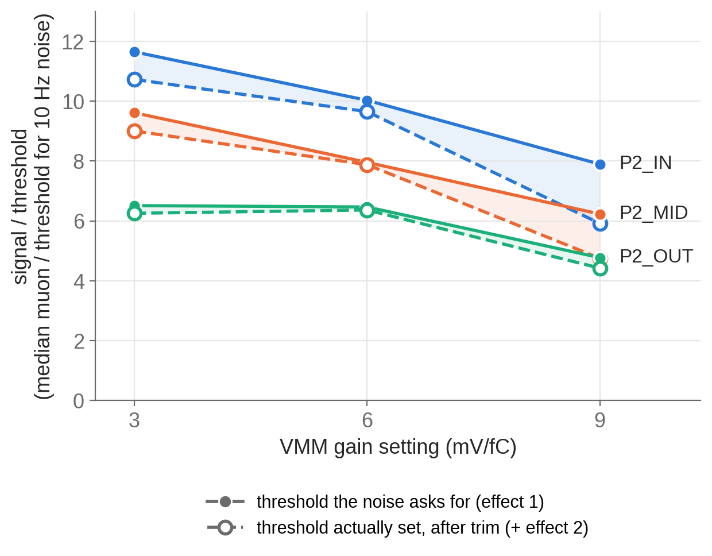
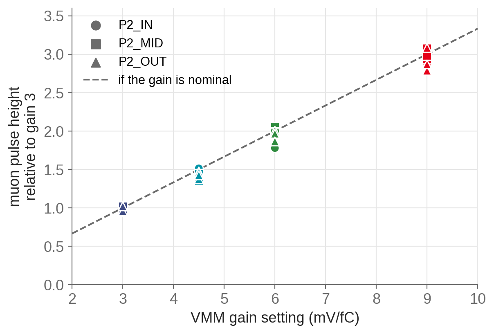
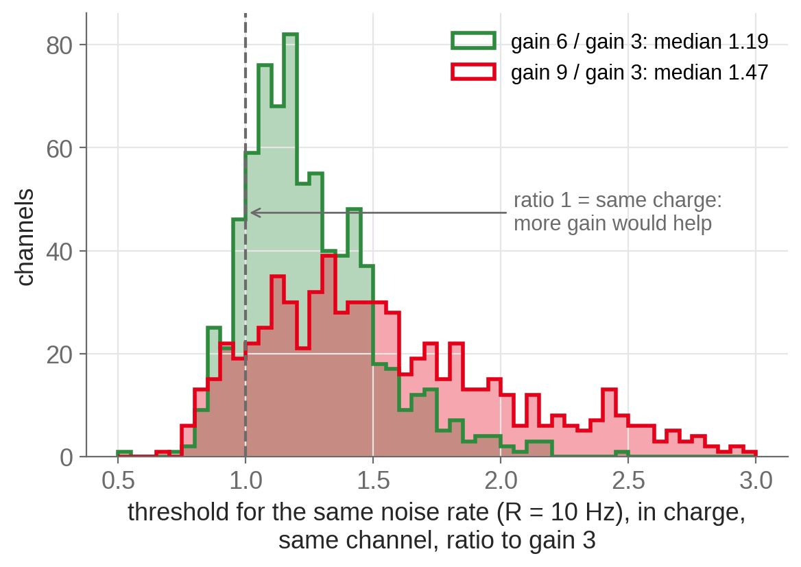
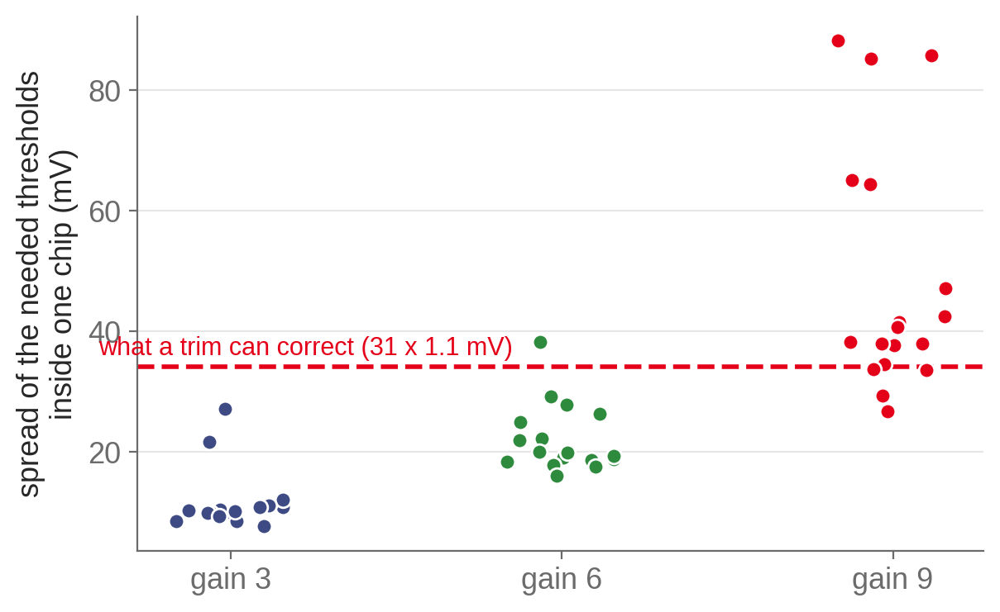
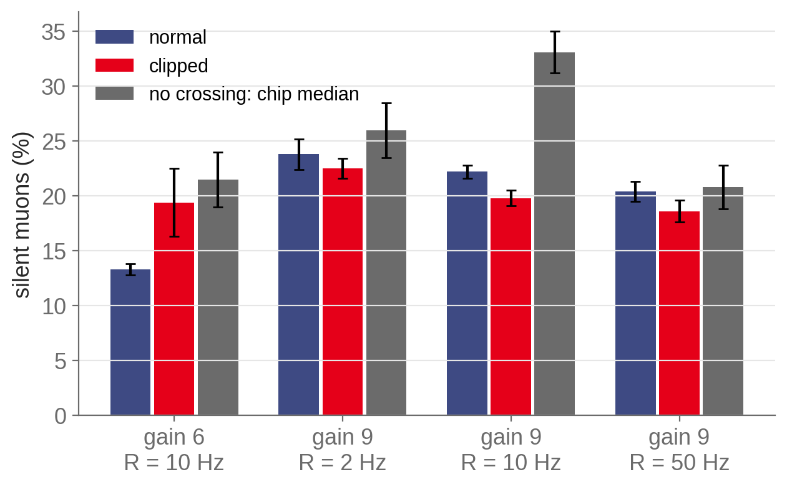
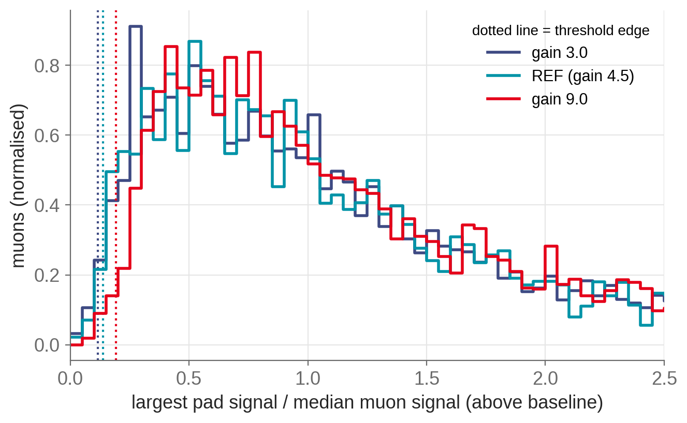
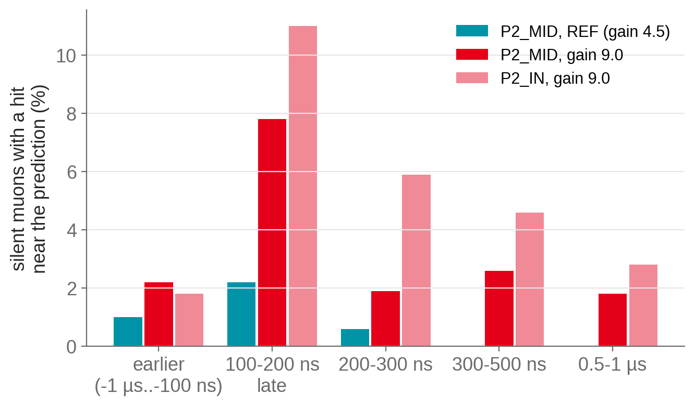
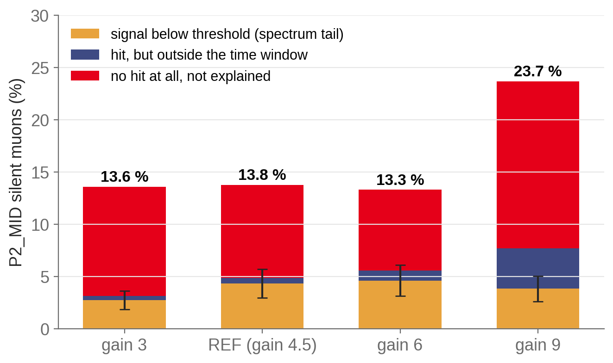

In one paragraph. We start from every scintillator coincidence (a muon went through the paddles) and follow it step by step through what the tag-and-probe needs: the two other chambers must fire (tags ), their hits must look like one clean muon cluster, the line through them must point at a live pad of the chamber under test (probe ), and the probe must fire near that point. Every coincidence ends in exactly one box. The steps before the probe decide which muons we test ; only the last step decides the efficiency . For P2_MID in the reference configuration: of 11,812 muons expected on a live pad, 80.2 % are found, 13.1 % leave no hit at all in the chamber , 5.9 % fire far from the prediction, 0.8 % fire near but outside the time window.
Update 20 Nov: two calculation effects corrected. (1) The search radius now follows the pointing resolution of each probe (section 3b): the extrapolated P2_IN and P2_OUT predictions are ~2x less precise than the interpolated P2_MID one, so they get 26 mm instead of 15 mm, and a 16 mm edge margin. P2_IN and P2_OUT go to 85.2 % and 87.8 % found (from 72-74 %); P2_MID does not move. (2) The ceiling is not 100 %: the bulk pillars (mask V1) cover 3.78 % of the pad area (section 3c). The cuts in use are listed in section 3d. 22 Nov: tracks whose tag line cannot have crossed both scintillator paddles ("unphysical") are now rejected too (section 3e). All numbers on this page use the new cuts, except the PNG figures of section 8 (made with the fixed 15 mm; P2_MID, which they show, changes by < 0.3 points).
Update 22 Nov: the same pads with DREAM. Section 9 compares the stand, pad by pad, with the DREAM cosmic bench, and for det3 with the SPS beam. DREAM sees no weak region in the stand's read-out area (c3-c5). The P2_MID (det2) gap to DREAM is uniform over the chamber, P2_OUT (det1) has a smaller uniform gap, and the P2_IN (det3) loss is one VMM chip.
Data: lab cosmic stand, weekend scan from 19 Nov 2026, runs 268-371 without the pulser runs (configurations ending in _tpA / _tpB). Reference configuration REF (gain 4.5 mV/fC, trimmed thresholds Km18; chip config file ..._trimmed_Km18_v1_hvm.txt in the logbook): runs 268, 269, 284, 299, 301, 303, 305, 320, 335, 337, 339, 341, 356, 371 (268 = the 20-min end-to-end test), 42,975 scintillator coincidences; all configurations: 294,593. Code: cosmic_vmm_analysis/muon_funnel.py (same cuts as efficiency_tp.py).
1. The set-up and the words
1a. The stand
top paddle 1 top paddle 2 bottom paddle P2_IN (z = 320 mm) P2_MID (z = 630 mm) P2_OUT (z = 940 mm) — A: crosses all three read-out areas — B: crosses IN and MID, misses the OUT read-out — C: paddles fire, crosses no read-out area orange = read-out area (3 of 6 connectors), grey = not read out Side view, not to scale. Three P2 chambers between two stacked top paddles and one bottom paddle. A scintillator coincidence = top AND bottom paddles fired: a muon crossed the stand. Only 3 of the 6 read-out connectors of each chamber are connected here, so a chamber can only see a muon that crosses its read-out area . The 4 Nov trigger simulation found that only ~44 % of the coincidences cross all three read-out areas (track A); the others are like B or C. These are not inefficiency: nothing could have been read out. 1b. Time
-100 0 100 200 300 400 500 ns after the scintillator muon window 140-310 ns scintillator IN hit MID hit OUT hit tag-and-probe window: ±100 ns around the tag hit random-hit check: same window 4 µs later All three chambers fire 165-265 ns after the scintillator (5-95 % of the muons). Everything on this page uses the muon window 140-310 ns after the scintillator to decide whether a chamber "fired". The tag-and-probe code itself (efficiency_tp.py) does not use the scintillator: it looks for the probe hit within ±100 ns of the tag hit . To count chance hits (noise), every test is repeated with the window moved 4 µs later, where there is no muon. 1c. Tag, clean cluster, rejected group
A chamber's hits are grouped in time: hits closer than 100 ns to the previous one belong to the same group . A group is accepted as a tag only if it looks like one muon: 1 to 6 pads, all within 15 mm of their centre, all on working pads, and not part of a stack-wide burst. Otherwise the whole group is rejected and the muon is not used at all - it is neither a success nor a failure.
CLEAN 1-6 pads within 15 mm REJECTED 2nd piece > 15 mm away REJECTED more than 6 pads REJECTED hit on a dead pad
1d. Prediction and probe
P2_IN P2_MID P2_OUT tag A (IN): clean cluster, its centre tag B (OUT): clean cluster prediction in the probe (MID) ± 14 mm straight line through the two tag centres (+ the run's median offset); for OUT or IN as probe the line is extrapolated, not interpolated FOUND a pad within the radius SILENT no hit in the chamber FAR hit, outside the radius LATE near, outside tag window
2. The funnel: where every coincidence ends
Read top to bottom. Each bar is what is left; the coloured strip under it is what was removed at that step, with the reason. The first three steps only decide which muons enter the test . The last step is the efficiency.
P2_MID as probe (tags IN and OUT) - the clean case
42,975 100.0 % of the coincidences scintillator coincidences (the reference: a muon went through the paddles) ↓ lost: ■ neither IN nor OUT fired: 12,742 (29.6 %) · ■ IN did not fire: 6,990 (16.3 %) · ■ OUT did not fire: 8,402 (19.6 %) 14,841 34.5 % of the coincidences both tag chambers (IN and OUT) fired ↓ lost: ■ a tag hit group is not a clean cluster: 2,131 (14.4 %) 12,710 29.6 % of the coincidences two clean tags = a tagged muon with a predicted point ↓ lost: ■ line misses a paddle: 674 (5.3 %) · ■ prediction outside MID's read-out area or < 6 mm from its edge: 95 (0.7 %) · ■ prediction on a dead pad: 129 (1.0 %) 11,812 27.5 % of the coincidences muon expected on a live pad of MID = the efficiency denominator ↓ lost: ■ MID SILENT: 1,552 (13.1 %) · ■ MID fired far away: 702 (5.9 %) · ■ near, outside the tag window: 90 (0.8 %) 9,468 22.0 % of the coincidences FOUND: MID fired within 14 mm, in the window P2_OUT as probe (tags IN and MID) 42,975 100.0 % of the coincidences scintillator coincidences (the reference: a muon went through the paddles) ↓ lost: ■ neither IN nor MID fired: 14,436 (33.6 %) · ■ IN did not fire: 5,296 (12.3 %) · ■ MID did not fire: 5,575 (13.0 %) 17,668 41.1 % of the coincidences both tag chambers (IN and MID) fired ↓ lost: ■ a tag hit group is not a clean cluster: 2,848 (16.1 %) 14,820 34.5 % of the coincidences two clean tags = a tagged muon with a predicted point ↓ lost: ■ line misses a paddle: 1,456 (9.8 %) · ■ prediction outside OUT's read-out area or < 15 mm from its edge: 4,911 (33.1 %) · ■ prediction on a dead pad: 95 (0.6 %) 8,358 19.4 % of the coincidences muon expected on a live pad of OUT = the efficiency denominator ↓ lost: ■ OUT SILENT: 702 (8.4 %) · ■ OUT fired far away: 283 (3.4 %) · ■ near, outside the tag window: 36 (0.4 %) 7,337 17.1 % of the coincidences FOUND: OUT fired within 26 mm, in the window P2_IN as probe (tags MID and OUT) 42,975 100.0 % of the coincidences scintillator coincidences (the reference: a muon went through the paddles) ↓ lost: ■ neither MID nor OUT fired: 15,057 (35.0 %) · ■ MID did not fire: 4,954 (11.5 %) · ■ OUT did not fire: 6,087 (14.2 %) 16,877 39.3 % of the coincidences both tag chambers (MID and OUT) fired ↓ lost: ■ a tag hit group is not a clean cluster: 1,971 (11.7 %) 14,906 34.7 % of the coincidences two clean tags = a tagged muon with a predicted point ↓ lost: ■ line misses a paddle: 989 (6.6 %) · ■ prediction outside IN's read-out area or < 16 mm from its edge: 4,214 (28.3 %) · ■ prediction on a dead pad: 60 (0.4 %) 9,643 22.4 % of the coincidences muon expected on a live pad of IN = the efficiency denominator ↓ lost: ■ IN SILENT: 909 (9.4 %) · ■ IN fired far away: 468 (4.9 %) · ■ near, outside the tag window: 46 (0.5 %) 8,220 19.1 % of the coincidences FOUND: IN fired within 26 mm, in the window P2_MID sits between its two tags, so its predicted point is an interpolation; for IN and OUT it is an extrapolation and more predictions fall outside the read-out area or near its edge.
3. The efficiency step, alone
Only the muons that reached the last step: expected on a live pad of the probe. This is where the inefficiency is.
P2_MID (REF) 80.2 % 13.1 % 5.9 % P2_OUT (REF) 87.8 % 8.4 % P2_IN (REF) 85.2 % 9.4 % P2_MID (all configs) 73.5 % 15.9 % 9.9 % P2_OUT (all configs) 83.8 % 11.0 % P2_IN (all configs) 81.5 % 12.4 % found silent (no hit at all) far (outside the search radius) near, but late probe expected on a live pad found silent far late chance hits (window +4 µs) P2_MID 11,812 80.2 % 13.1 % 5.9 % 0.8 % 0.2 % of the tests have any probe hit P2_OUT 8,358 87.8 % 8.4 % 3.4 % 0.4 % 0.2 % of the tests have any probe hit P2_IN 9,643 85.2 % 9.4 % 4.9 % 0.5 % 0.2 % of the tests have any probe hit
3b. The search radius follows the pointing resolution (updated 20 Nov) The predicted point is the straight line through the two tag clusters. For P2_MID it is an interpolation (tags IN and OUT, half-way); for P2_IN and P2_OUT it is an extrapolation by one full gap beyond the nearer tag. With z = 320 / 630 / 940 mm the prediction is p = wA a + wB b and its error, per axis, σpoint 2 = wA 2 σA 2 + wB 2 σB 2 ; the probe hit adds its own σP . With the same resolution s in every chamber:
probe tags prediction σpoint σres (hit − prediction) measured σres (REF) 15 mm keeps radius now (99 %) edge margin (2 σpoint ) P2_IN MID + OUT +2.0 a -1.0 b 2.24 s 2.45 s 8.5 ± 0.1 mm 79 % 26 mm 16 mm P2_MID IN + OUT +0.5 a +0.5 b 0.71 s 1.22 s 4.7 ± 0.0 mm 99 % 14 mm 6 mm P2_OUT IN + MID -1.0 a +2.0 b 2.24 s 2.45 s 8.4 ± 0.1 mm 80 % 26 mm 15 mm
So with one fixed 15 mm radius the extrapolated chambers lose about a fifth of their real hits to the tail of the pointing, while P2_MID loses almost none: that is the "FAR" excess of IN and OUT, a calculation effect, not the electronics. The widths are measured on this stand: the radial distance of the nearest probe hit (section 5a) is fitted with a 2-D Gaussian plus a flat part for unrelated hits (pointing_resolution.py). P2_MID gives σres = 4.7 mm, i.e. s ≈ 3.9 mm per chamber - the 12 mm pads alone give 11.8/√12 = 3.4 mm, and the SPS beam measured a pad-limited σcore ≈ 3.65 mm. Because the stand is equally spaced, the model predicts σres (IN, OUT) = 2 σres (MID) for any mix of chamber resolutions; the data give 1.8. Multiple scattering (~1 mrad over 310 mm) is negligible.
New rule: a probe hit is accepted within RP = 3.03 σres,P (99 % of a 2-D Gaussian), and the predicted point must lie at least 2 σpoint,P inside the chamber outline (otherwise the muon may really have crossed outside the read-out area, and would count as silent). The margin muons are counted with "outside the area" in the funnel.
probe (REF) radius / margin tested found silent far late removed by the margin (would have been: found / silent / far) P2_IN before: 15 mm / 0 mm 12,080 71.9 % 12.1 % 15.5 % 0.5 % now: 26 mm / 16 mm 9,643 85.2 % 9.4 % 4.9 % 0.5 % 1,303 / 502 / 121 P2_MID before: 15 mm / 0 mm 12,574 79.9 % 13.4 % 5.9 % 0.8 % now: 14 mm / 6 mm 11,812 80.2 % 13.1 % 5.9 % 0.8 % 43 / 43 / 4 P2_OUT before: 15 mm / 0 mm 11,119 74.4 % 11.7 % 13.5 % 0.5 % now: 26 mm / 15 mm 8,358 87.8 % 8.4 % 3.4 % 0.4 % 1,674 / 554 / 77
Chance hits (the same test 4 µs later) stay at ~0.01 % with the larger radius. The improvement is the same in every gain-scan setting (gain 3, R = 10 Hz: IN 74.4 → 86.4 %, OUT 75.0 → 86.8 %, MID 80.7 → 81.1 %; gain 9, R = 10 Hz: IN 61.0 → 73.7 %, OUT 66.4 → 81.4 %, MID 69.6 → 69.9 %).
3c. The ceiling is not 100 %: the bulk pillars The mesh of these chambers stands on insulating pillars ; a muon whose charge lands on a pillar is not amplified. All three chambers of the stand were bulked at Saclay (det1-4) with insulation mask V1 (Detector_Drawings/Version_Apr26/Insulation_masks/V1/P2_BASKET-Mask_M2_V1.gbr): 12,477 pillars of ⌀ 0.8 mm on a 4 mm grid plus 5 big ⌀ 6.15 mm ones, 3.78 % of the pad area - the same mask and number the cosmic-bench (DREAM) analysis uses (p2_qa_config.MASK_GBR_PATH). (The CERN-bulked det5 has a different mask, 0.5 mm on 2 mm = 4.87 %, and is not on this stand.) On det1 that bench measured a "no hit" share of 3.17 % against its Gerber pillar area of 3.43 %, so its efficiency is quoted against a ceiling of ~96.6 %, not 100 %. The SPS beam (DREAM, telescope at 0.2-0.3 mm) showed that the cost grows with the threshold - a pillar also removes part of the charge around it: 2.4-3.9 points per chamber at the high-gain point, 9.5 for P2_IN at the nominal one - so at the VMM threshold the area is a floor, not the whole pillar cost.
Here the pads (12 mm) and the pointing (3-8 mm) cannot resolve a 3 mm lattice, so the pillar loss cannot be cut out muon by muon; it is a floor under the silent share (the five big ones can be, see 5d). Taking the mask's 3.78 % as the ceiling:
probe (REF) found found / (1 − pillars) silent silent beyond the pillars P2_IN 85.2 % 88.6 % 9.4 % 5.6 points P2_MID 80.2 % 83.3 % 13.1 % 9.4 points P2_OUT 87.8 % 91.2 % 8.4 % 4.6 points
P2_IN and P2_OUT are then at ~89-91 % of what the pillars allow; P2_MID is ~7 points further down, all of it in the "no hit at all" class and spread evenly over its chips and pads (sections 5b, 5d). That is the part left to explain.
3e. Unphysical tracks: the tag line must cross both paddles (22 Nov) top paddles bottom paddle IN MID OUT physical: the line crosses both paddles unphysical: misses the bottom paddle (a tag is not this muon: noise or a second particle) Side view, not to scale. The scintillator coincidence says the muon crossed a top AND the bottom paddle. If the straight line through the two tag clusters cannot do that, one of the clusters is not this muon, and its prediction in the probe is meaningless. The line is extrapolated from the tags to each paddle face. Its error there grows with the lever arm: σ = s·√((1−f)² + f²), with s ≈ 3.9 mm per chamber (section 3b) - about 6 mm for the IN+OUT line (MID probe), 9-15 mm for the IN+MID and MID+OUT lines - and 10 mm is added in quadrature for the paddle positions, which come from the 4 Nov fit to the tag maps. A track is unphysical when its line misses a paddle (on that paddle's nearer face) by more than 3 σ. Like "outside the area", these muons are not tested at all.
probe (REF) tracks removed they would have been: found / silent / far / outside or dead found before → after silent before → after P2_IN 989 407 / 52 / 34 / 490 85.1 % → 85.2 % 9.5 % → 9.4 % P2_MID 674 501 / 93 / 72 / 2 79.9 % → 80.2 % 13.2 % → 13.1 % P2_OUT 1,456 343 / 45 / 50 / 1,013 87.3 % → 87.8 % 8.5 % → 8.4 %
The rejected tracks are mostly ones the probe found : an unphysical line is usually a good line with paddle positions slightly off, or a tag cluster shifted by a crosstalk pad, rather than a fake. So the cut cleans the sample but moves the efficiency by well under a point, and it does not touch the silent share: the silent muons are not unphysical tracks.
3d. The cuts of the current estimate, in order step cut note reference scintillator coincidence (top AND bottom paddles, VMM 0 ch 40) a muon crossed the stand; pulser configurations (_tpA / _tpB) excluded by name; first / last 10 µs of a file dropped chamber "fired" any hit 140-310 ns after the scintillator hits grouped in time with a 100 ns gap tag both other chambers have a CLEAN group in the window: 1-6 hits, all on live pads, all within 15 mm of their mean, not inside a stack burst (> 36 hits in one group of the whole stack) position = mean pad centre, time = earliest hit; otherwise "tag rejected" (not counted) prediction straight line through the two tag positions (z 320 / 630 / 940 mm) + the run's median probe offset physical track new (22 Nov): the line through the two tags passes through BOTH scintillator paddles (the coincidence requires it), within 3 times its extrapolation error at the paddle (s · √((1−f)² + f²), s = one-chamber resolution) combined with 10 mm for the paddle positionsotherwise "unphysical" (not counted); section 3e fiducial nearest probe pad within 9 mm of the prediction and live (≥ 1 hit in the run, not on a dead chip, not vetoed); new: prediction at least 2 σpoint inside the outline: IN 16 mm, MID 6 mm, OUT 15 mm otherwise "outside the area" / "dead pad" (not counted) silent no hit at all in the probe chamber 140-310 ns after the scintillator counted as a miss far new: nearest live probe hit farther than RP = 3.03 σres : IN 26 mm, MID 14 mm, OUT 26 mm (was 15 mm for all)counted as a miss late a live hit within RP in 140-310 ns, but not within ±100 ns of tag time + latency counted as a miss found a live hit within RP and within ±100 ns of tag time + latency chance hits every probe class re-evaluated with the window 4 µs later (same tags) ~0.01 % found by chance: negligible efficiency found / (found + silent + far + late) ceiling: 1 − pillars ≈ 96.2 % (section 3c)
Code: muon_funnel.py --pointing pointing.json (cuts and parameters from the efficiency_tp.py json of each chunk; efficiency_tp.py --pointing applies the same radius and margin to the self-tagged estimate). The efficiency definition itself is still on hold.
4. Each class, with a real event
Each display is the three chambers seen from above; only the read-out area is drawn (the odd shape is the P2 pad fan, connectors 3-5). Light squares = pads. Coloured = a hit in the muon window (blue IN, orange MID, green OUT); dark grey = a hit on a dead/masked pad; outlined = a hit outside the muon window. The dashed circle = the 14 mm search radius around the prediction in the probe (here P2_MID). Hover a pad for its chip, channel, time and ADC. All events are from the reference configuration.
Both tags are one clean cluster each, the line through them points into P2_MID, and P2_MID has a hit inside the circle.
VMM 3 ch 50: 222 ns after the scintillator, ADC 432 P2_IN: tag A 1 hit(s) in the muon window VMM 9 ch 35: 241 ns after the scintillator, ADC 144 P2_MID: probe 1 hit(s) in the muon window VMM 14 ch 33: 231 ns after the scintillator, ADC 128 P2_OUT: tag B 1 hit(s) in the muon window
run_26801 trimmed_Km18_v1_hvm · hit times after the scintillator: P2_IN: 222 ns · P2_MID: 241 ns · P2_OUT: 231 ns Two clean tags, the prediction is on a live pad, and P2_MID has no hit at all - no channel, anywhere in the chamber - in the muon window. No choice of radius, window or clustering can recover these. Read-out losses, dead time and sparks (19 Nov tests) explain at most 0.55 points of them together. The rest: the muon's signal stayed below the VMM threshold on every pad it crossed (what the beam autopsy found for the same chambers).
VMM 5 ch 13: 172 ns after the scintillator, ADC 189 P2_IN: tag A 1 hit(s) in the muon window P2_MID: probe 0 hit(s) in the muon window VMM 17 ch 25: 209 ns after the scintillator, ADC 103 P2_OUT: tag B 1 hit(s) in the muon window
run_26801 trimmed_Km18_v1_hvm · hit times after the scintillator: P2_IN: 172 ns · P2_MID: no hit from -200 to +600 ns · P2_OUT: 209 ns P2_MID fired 15-30 mm from the prediction. This is the muon, found by the chamber, but the prediction was off by a bit more than the radius (tag position resolution, multiple scattering, alignment). It is a calculation loss: a larger radius would count it.
VMM 2 ch 19: 180 ns after the scintillator, ADC 280 P2_IN: tag A 1 hit(s) in the muon window VMM 10 ch 54: 226 ns after the scintillator, ADC 83 P2_MID: probe 1 hit(s) in the muon window VMM 19 ch 56: 254 ns after the scintillator, ADC 89 P2_OUT: tag B 1 hit(s) in the muon window
run_26801 trimmed_Km18_v1_hvm · hit times after the scintillator: P2_IN: 180 ns · P2_MID: 226 ns · P2_OUT: 254 ns · nearest P2_MID hit 16 mm from the prediction P2_MID fired, but far from the prediction. Most likely the muon pad was silent (as in SILENT) and an unrelated hit - noise or crosstalk - happened in the same 170 ns. This is an electronics loss that hides as a position mismatch.
VMM 6 ch 50: 215 ns after the scintillator, ADC 395 P2_IN: tag A 1 hit(s) in the muon window VMM 11 ch 47: 203 ns after the scintillator, ADC 109 P2_MID: probe 1 hit(s) in the muon window VMM 16 ch 17: 219 ns after the scintillator, ADC 115 P2_OUT: tag B 1 hit(s) in the muon window
run_26902 trimmed_Km18_v1_hvm · hit times after the scintillator: P2_IN: 215 ns · P2_MID: 203 ns · P2_OUT: 219 ns · nearest P2_MID hit 111 mm from the prediction P2_MID fired inside the circle and 140-310 ns after the scintillator, but more than 100 ns from the tag hit that the tag-and-probe uses as the clock. Rare (0.6 %).
VMM 5 ch 28: 209 ns after the scintillator, ADC 129 VMM 6 ch 10: 217 ns after the scintillator, ADC 69 P2_IN: tag A 2 hit(s) in the muon window VMM 12 ch 41: 195 ns after the scintillator, ADC 317 VMM 12 ch 42: 231 ns after the scintillator, ADC 78 VMM 12 ch 43: 303 ns after the scintillator, ADC 1023 P2_MID: probe 3 hit(s) in the muon window VMM 17 ch 33: 240 ns after the scintillator, ADC 88 P2_OUT: tag B 1 hit(s) in the muon window
run_26803 trimmed_Km18_v1_hvm · hit times after the scintillator: P2_IN: 209 ns, 217 ns · P2_MID: 195 ns, 231 ns, 303 ns · P2_OUT: 240 ns P2_IN (tag A) has the muon plus single pads far away, all within 100 ns: the group is "too wide", so this muon is not used. Section 5c shows what these extra pads are.
VMM 7 ch 53: 190 ns after the scintillator, ADC 264 VMM 4 ch 37: 200 ns after the scintillator, ADC 268 VMM 7 ch 5: 207 ns after the scintillator, ADC 165 VMM 7 ch 59: 214 ns after the scintillator, ADC 225 VMM 5 ch 21: 225 ns after the scintillator, ADC 1023 VMM 7 ch 35: 263 ns after the scintillator, ADC 249 P2_IN: tag A 6 hit(s) in the muon window VMM 11 ch 40: 223 ns after the scintillator, ADC 139 P2_MID: probe 1 hit(s) in the muon window VMM 18 ch 14: 184 ns after the scintillator, ADC 82 P2_OUT: tag B 1 hit(s) in the muon window
run_26801 trimmed_Km18_v1_hvm · hit times after the scintillator: P2_IN: 190 ns, 200 ns, 207 ns, 214 ns, 225 ns, 263 ns · P2_MID: 223 ns · P2_OUT: 184 ns Both tags are clean, but the line points more than 9 mm beyond the nearest pad of the probe - here just past the edge of the read-out area. Correctly removed.
VMM 7 ch 28: 220 ns after the scintillator, ADC 138 P2_IN: tag A 1 hit(s) in the muon window P2_MID: probe 0 hit(s) in the muon window VMM 19 ch 8: 185 ns after the scintillator, ADC 87 P2_OUT: tag B 1 hit(s) in the muon window
run_26806 trimmed_Km18_v1_hvm · hit times after the scintillator: P2_IN: 220 ns · P2_MID: no hit from -200 to +600 ns · P2_OUT: 185 ns P2_OUT and P2_MID fired, P2_IN did not: the muon missed P2_IN's read-out area (geometry, like track B in 1a), or P2_IN was inefficient. This pair of tags cannot test P2_MID for this muon.
P2_IN: tag A 0 hit(s) in the muon window VMM 8 ch 42: 224 ns after the scintillator, ADC 133 VMM 8 ch 51: 297 ns after the scintillator, ADC 66 P2_MID: probe 2 hit(s) in the muon window VMM 14 ch 42: 250 ns after the scintillator, ADC 233 P2_OUT: tag B 1 hit(s) in the muon window
run_26801 trimmed_Km18_v1_hvm · hit times after the scintillator: P2_IN: no hit from -200 to +600 ns · P2_MID: 224 ns, 297 ns · P2_OUT: 250 ns 5. Looking closer
5a. FAR: how far is the nearest probe hit?
0 to 5: 3494 5 to 10: 6058 10 to 15: 586 15 to 20: 107 20 to 25: 64 25 to 30: 41 30 to 35: 54 35 to 40: 40 40 to 45: 30 45 to 50: 34 50 to 55: 16 55 to 60: 24 60 to 65: 25 65 to 70: 22 70 to 75: 24 75 to 80: 28 80 to 85: 24 85 to 90: 21 90 to 95: 15 95 to 100: 15 100 to 105: 18 105 to 110: 13 110 to 115: 14 115 to 120: 11 120 to 125: 11 125 to 130: 15 130 to 135: 4 135 to 140: 9 140 to 145: 1 145 to 150: 7 0 25 50 75 100 125 150 old 15 mm new 14 mm 1 10 100 1000 P2_MID: distance of the nearest probe hit to the prediction (mm), REF - log scale P2_MID as probe (interpolated). Muons expected on a live pad whose probe fired in the muon window: 212 at 15-30 mm, 536 further out. Dashed line: the fitted pointing spread, σres = 4.7 mm (2-D Gaussian; the flat part is unrelated hits). Red dashed: the old 15 mm radius, which keeps 99 % of the real muon hits; green: the new 14 mm (99 %). 0 to 5: 2511 5 to 10: 688 10 to 15: 5120 15 to 20: 650 20 to 25: 423 25 to 30: 71 30 to 35: 58 35 to 40: 46 40 to 45: 20 45 to 50: 33 50 to 55: 18 55 to 60: 13 60 to 65: 11 65 to 70: 18 70 to 75: 6 75 to 80: 8 80 to 85: 14 85 to 90: 7 90 to 95: 8 95 to 100: 3 100 to 105: 6 105 to 110: 3 110 to 115: 3 115 to 120: 6 120 to 125: 4 125 to 130: 4 130 to 135: 1 135 to 140: 2 140 to 145: 2 145 to 150: 9 0 25 50 75 100 125 150 old 15 mm new 26 mm 1 10 100 1000 P2_OUT: distance of the nearest probe hit to the prediction (mm), REF - log scale P2_OUT as probe (extrapolated). Muons expected on a live pad whose probe fired in the muon window: 1,144 at 15-30 mm, 355 further out. Dashed line: the fitted pointing spread, σres = 8.4 mm (2-D Gaussian; the flat part is unrelated hits). Red dashed: the old 15 mm radius, which keeps 80 % of the real muon hits; green: the new 26 mm (99 %). 0 to 5: 2606 5 to 10: 696 10 to 15: 5438 15 to 20: 721 20 to 25: 508 25 to 30: 98 30 to 35: 69 35 to 40: 65 40 to 45: 38 45 to 50: 56 50 to 55: 22 55 to 60: 23 60 to 65: 10 65 to 70: 20 70 to 75: 11 75 to 80: 17 80 to 85: 19 85 to 90: 5 90 to 95: 20 95 to 100: 6 100 to 105: 8 105 to 110: 3 110 to 115: 7 115 to 120: 3 120 to 125: 8 125 to 130: 9 130 to 135: 2 135 to 140: 4 140 to 145: 3 145 to 150: 10 0 25 50 75 100 125 150 old 15 mm new 26 mm 1 10 100 1000 P2_IN: distance of the nearest probe hit to the prediction (mm), REF - log scale P2_IN as probe (extrapolated). Muons expected on a live pad whose probe fired in the muon window: 1,327 at 15-30 mm, 550 further out. Dashed line: the fitted pointing spread, σres = 8.5 mm (2-D Gaussian; the flat part is unrelated hits). Red dashed: the old 15 mm radius, which keeps 79 % of the real muon hits; green: the new 26 mm (99 %). 5b. Per chip: is the loss everywhere or in a few chips?
The chip is the one that reads the predicted pad. If the loss were a few broken chips it would show here. P2_MID: every chip is silent for 11-16 % of its muons - a chamber-wide loss. P2_IN (5-20 %) and P2_OUT (5-10 %) are not uniform: their best chips are silent for only 3-5 %, about what the bulk pillars alone cost (section 3c).
0 % 25 % 50 % 75 % 100 % chip 8: found 552 of 683 chip 8: probe_silent 89 of 683 chip 8: probe_far 40 of 683 chip 8: probe_near_late 2 of 683 chip 8 n=683 81 % chip 9: found 1886 of 2363 chip 9: probe_silent 326 of 2363 chip 9: probe_far 132 of 2363 chip 9: probe_near_late 19 of 2363 chip 9 n=2363 80 % chip 10: found 2270 of 2920 chip 10: probe_silent 468 of 2920 chip 10: probe_far 167 of 2920 chip 10: probe_near_late 15 of 2920 chip 10 n=2920 78 % chip 11: found 2474 of 3004 chip 11: probe_silent 326 of 3004 chip 11: probe_far 178 of 3004 chip 11: probe_near_late 26 of 3004 chip 11 n=3004 82 % chip 12: found 1647 of 2034 chip 12: probe_silent 226 of 2034 chip 12: probe_far 140 of 2034 chip 12: probe_near_late 21 of 2034 chip 12 n=2034 81 % chip 13: found 639 of 808 chip 13: probe_silent 117 of 808 chip 13: probe_far 45 of 808 chip 13: probe_near_late 7 of 808 chip 13 n=808 79 % found silent (no hit at all) far (outside the search radius) near, but late P2_MID as probe (REF). 0 % 25 % 50 % 75 % 100 % chip 14: found 381 of 418 chip 14: probe_silent 24 of 418 chip 14: probe_far 11 of 418 chip 14: probe_near_late 2 of 418 chip 14 n=418 91 % chip 15: found 1528 of 1688 chip 15: probe_silent 81 of 1688 chip 15: probe_far 64 of 1688 chip 15: probe_near_late 15 of 1688 chip 15 n=1688 91 % chip 16: found 1541 of 1768 chip 16: probe_silent 172 of 1768 chip 16: probe_far 49 of 1768 chip 16: probe_near_late 6 of 1768 chip 16 n=1768 87 % chip 17: found 1566 of 1819 chip 17: probe_silent 180 of 1819 chip 17: probe_far 66 of 1819 chip 17: probe_near_late 7 of 1819 chip 17 n=1819 86 % chip 18: found 1619 of 1869 chip 18: probe_silent 176 of 1869 chip 18: probe_far 69 of 1869 chip 18: probe_near_late 5 of 1869 chip 18 n=1869 87 % chip 19: found 702 of 796 chip 19: probe_silent 69 of 796 chip 19: probe_far 24 of 796 chip 19: probe_near_late 1 of 796 chip 19 n=796 88 % found silent (no hit at all) far (outside the search radius) near, but late P2_OUT as probe (REF). 0 % 25 % 50 % 75 % 100 % chip 2: found 377 of 451 chip 2: probe_silent 43 of 451 chip 2: probe_far 29 of 451 chip 2: probe_near_late 2 of 451 chip 2 n=451 84 % chip 3: found 1899 of 2115 chip 3: probe_silent 114 of 2115 chip 3: probe_far 96 of 2115 chip 3: probe_near_late 6 of 2115 chip 3 n=2115 90 % chip 4: found 2112 of 2337 chip 4: probe_silent 123 of 2337 chip 4: probe_far 90 of 2337 chip 4: probe_near_late 12 of 2337 chip 4 n=2337 90 % chip 5: found 2019 of 2330 chip 5: probe_silent 188 of 2330 chip 5: probe_far 115 of 2330 chip 5: probe_near_late 8 of 2330 chip 5 n=2330 87 % chip 6: found 1373 of 1880 chip 6: probe_silent 382 of 1880 chip 6: probe_far 112 of 1880 chip 6: probe_near_late 13 of 1880 chip 6 n=1880 73 % chip 7: found 440 of 530 chip 7: probe_silent 59 of 530 chip 7: probe_far 26 of 530 chip 7: probe_near_late 5 of 530 chip 7 n=530 83 % found silent (no hit at all) far (outside the search radius) near, but late P2_IN as probe (REF). 5d. Why silent? Angle, place, tag pulse height From the per-tag dumps of the same runs (scintillator-confirmed tags, random tag pairs subtracted, the same edge margin; silent = no live probe hit within ±100 ns of the tag + latency). First: a silent muon really leaves nothing - for IN 7.9 of the 9.8 %, MID 12.3 of the 13.0 %, OUT 7.9 of the 8.4 % the whole chamber has no hit on any chip within ±1 µs.
IN MID OUT chip 8: 0 hits chip 9: 0 hits chip 10: 0 hits chip 11: 0 hits chip 12: 0 hits chip 13: 0 hits tag: clean IN cluster tag: clean OUT cluster prediction on a live pad time after the scintillator (ns) IN MID OUT no hit on any of the 6 chips within ±1 µs -1000 0 140 310 1000 muon window 140-310 ns What a SILENT muon is: the scintillator fired, IN and OUT each have one clean cluster in the muon window, the line through them lands on a live MID pad well inside the chamber - and MID has nothing, on any channel of any chip, for a full microsecond around the muon. (Schematic.) 0 % 5 % 10 % 15 % 9.8 % silent 7.9 % P2_IN 13.0 % silent 12.3 % P2_MID 8.4 % silent 7.9 % P2_OUT pale: silent in ±100 ns · solid: of those, no hit on ANY chip within ±1 µs How many of the silent muons are silent on the whole chamber (REF). Almost all of them: it is not one pad or one chip missing the hit. Test 1: does the silent share depend on the track angle? drift electrode mesh (amplification below) 4 mm pillar ⌀ 0.8 mm, every 4 mm (mask V1): no amplification above it tan θ = 0: all charge drifts onto the pillar → lost tan θ = 0.3: charge spread over 4 tan θ = 1.2 mm of mesh → at most part of it lands on a pillar A hole (pillar, dead spot) therefore kills mostly vertical tracks: its silent share must fall steeply with tan θ. A signal just below threshold hardly cares: the path is only 1/cos θ longer (+4 % charge at tan θ = 0.3). The idea of the test (to scale vertically: 4 mm drift gap, 0.8 mm pillars every 4 mm). silent vs tan θ (REF) 0-0.1 0.1-0.2 0.2-0.3 0.3-0.4 0.4-0.6 P2_IN 10.1 ± 0.6 %n 2903 10.2 ± 0.5 %n 3494 9.4 ± 0.7 %n 1960 8.1 ± 1.0 %n 724 11.4 ± 2.4 %n 183 P2_MID 14.7 ± 0.7 %n 2958 12.9 ± 0.6 %n 3312 11.3 ± 0.7 %n 2066 10.3 ± 1.0 %n 884 14.4 ± 2.5 %n 199 P2_OUT 8.8 ± 0.5 %n 2733 8.5 ± 0.5 %n 3222 8.3 ± 0.6 %n 1879 6.9 ± 1.0 %n 706 8.1 ± 1.8 %n 232
0 % 5 % 10 % 15 % 20 % 25 % 0-0.1 0.1-0.2 0.2-0.3 0.3-0.4 0.4-0.6 if it were a hole (sketch) IN, 0-0.1: 10.1 ± 0.6 % (n = 2903) IN, 0.1-0.2: 10.2 ± 0.5 % (n = 3494) IN, 0.2-0.3: 9.4 ± 0.7 % (n = 1960) IN, 0.3-0.4: 8.1 ± 1.0 % (n = 724) IN, 0.4-0.6: 11.4 ± 2.4 % (n = 183) MID, 0-0.1: 14.7 ± 0.7 % (n = 2958) MID, 0.1-0.2: 12.9 ± 0.6 % (n = 3312) MID, 0.2-0.3: 11.3 ± 0.7 % (n = 2066) MID, 0.3-0.4: 10.3 ± 1.0 % (n = 884) MID, 0.4-0.6: 14.4 ± 2.5 % (n = 199) OUT, 0-0.1: 8.8 ± 0.5 % (n = 2733) OUT, 0.1-0.2: 8.5 ± 0.5 % (n = 3222) OUT, 0.2-0.3: 8.3 ± 0.6 % (n = 1879) OUT, 0.3-0.4: 6.9 ± 1.0 % (n = 706) OUT, 0.4-0.6: 8.1 ± 1.8 % (n = 232) IN MID OUT tan θ of the tag line (REF) silent share Measured: flat within ~2 points for all three chambers. The dashed line sketches what a hole would do (MID falling from its vertical value to the IN/OUT level by tan θ = 0.2). 1. Angle: flat. A hole in the amplification (pillar, dead area) swallows mostly vertical tracks: with the 4 mm drift gap an inclined track spreads its charge over 4 tan θ mm of mesh, more than a 0.8 mm pillar from tan θ ≈ 0.2. The silent share drops by only ~2 points from the vertical bin to tan θ = 0.3 (about what the longer path, 1/cos θ, gives to a signal near threshold), so the silent muons are not a geometric hole.
Test 2: where on the chamber are the silent muons? VMM 2 ch 0: 38 % silent of 42 muons VMM 2 ch 1: 17 % silent of 23 muons VMM 2 ch 2: fewer than 15 muons VMM 2 ch 3: 13 % silent of 16 muons VMM 2 ch 4: fewer than 15 muons VMM 2 ch 5: 2 % silent of 50 muons VMM 2 ch 6: 4 % silent of 27 muons VMM 2 ch 7: 8 % silent of 24 muons VMM 2 ch 8: fewer than 15 muons VMM 2 ch 9: fewer than 15 muons VMM 2 ch 10: 7 % silent of 44 muons VMM 2 ch 11: 5 % silent of 22 muons VMM 2 ch 12: fewer than 15 muons VMM 2 ch 13: fewer than 15 muons VMM 2 ch 14: fewer than 15 muons VMM 2 ch 15: fewer than 15 muons VMM 2 ch 16: 3 % silent of 30 muons VMM 2 ch 17: fewer than 15 muons VMM 2 ch 18: 9 % silent of 35 muons VMM 2 ch 19: 3 % silent of 39 muons VMM 2 ch 20: 5 % silent of 22 muons VMM 2 ch 21: fewer than 15 muons VMM 2 ch 22: fewer than 15 muons VMM 2 ch 23: fewer than 15 muons VMM 2 ch 24: fewer than 15 muons VMM 2 ch 25: 27 % silent of 15 muons VMM 2 ch 26: fewer than 15 muons VMM 2 ch 27: fewer than 15 muons VMM 2 ch 28: 6 % silent of 17 muons VMM 2 ch 29: fewer than 15 muons VMM 2 ch 30: fewer than 15 muons VMM 2 ch 31: fewer than 15 muons VMM 2 ch 32: fewer than 15 muons VMM 2 ch 33: fewer than 15 muons VMM 2 ch 34: fewer than 15 muons VMM 2 ch 35: fewer than 15 muons VMM 2 ch 36: fewer than 15 muons VMM 2 ch 37: fewer than 15 muons VMM 2 ch 38: fewer than 15 muons VMM 2 ch 39: fewer than 15 muons VMM 2 ch 40: fewer than 15 muons VMM 2 ch 41: fewer than 15 muons VMM 2 ch 42: fewer than 15 muons VMM 2 ch 43: fewer than 15 muons VMM 2 ch 44: fewer than 15 muons VMM 2 ch 45: fewer than 15 muons VMM 2 ch 46: fewer than 15 muons VMM 2 ch 47: fewer than 15 muons VMM 2 ch 48: fewer than 15 muons VMM 2 ch 49: fewer than 15 muons VMM 2 ch 50: fewer than 15 muons VMM 2 ch 51: fewer than 15 muons VMM 2 ch 52: fewer than 15 muons VMM 2 ch 53: fewer than 15 muons VMM 2 ch 54: fewer than 15 muons VMM 2 ch 55: fewer than 15 muons VMM 2 ch 56: fewer than 15 muons VMM 2 ch 57: fewer than 15 muons VMM 2 ch 58: fewer than 15 muons VMM 2 ch 59: fewer than 15 muons VMM 2 ch 60: fewer than 15 muons VMM 2 ch 61: fewer than 15 muons VMM 2 ch 62: fewer than 15 muons VMM 2 ch 63: fewer than 15 muons VMM 3 ch 0: 0 % silent of 48 muons VMM 3 ch 1: 0 % silent of 44 muons VMM 3 ch 2: 5 % silent of 56 muons VMM 3 ch 3: 8 % silent of 26 muons VMM 3 ch 4: 0 % silent of 18 muons VMM 3 ch 5: 21 % silent of 19 muons VMM 3 ch 6: 3 % silent of 32 muons VMM 3 ch 7: 26 % silent of 38 muons VMM 3 ch 8: 2 % silent of 40 muons VMM 3 ch 9: 2 % silent of 57 muons VMM 3 ch 10: 10 % silent of 40 muons VMM 3 ch 11: 2 % silent of 40 muons VMM 3 ch 12: 11 % silent of 18 muons VMM 3 ch 13: 4 % silent of 24 muons VMM 3 ch 14: fewer than 15 muons VMM 3 ch 15: 9 % silent of 33 muons VMM 3 ch 16: 13 % silent of 15 muons VMM 3 ch 17: 4 % silent of 54 muons VMM 3 ch 18: fewer than 15 muons VMM 3 ch 19: 4 % silent of 46 muons VMM 3 ch 20: -0 % silent of 21 muons VMM 3 ch 21: fewer than 15 muons VMM 3 ch 22: 6 % silent of 31 muons VMM 3 ch 23: 0 % silent of 42 muons VMM 3 ch 24: 0 % silent of 39 muons VMM 3 ch 25: 7 % silent of 29 muons VMM 3 ch 26: 0 % silent of 18 muons VMM 3 ch 27: 2 % silent of 46 muons VMM 3 ch 28: 12 % silent of 17 muons VMM 3 ch 29: fewer than 15 muons VMM 3 ch 30: 20 % silent of 41 muons VMM 3 ch 31: 15 % silent of 41 muons VMM 3 ch 32: 8 % silent of 37 muons VMM 3 ch 33: 0 % silent of 16 muons VMM 3 ch 34: fewer than 15 muons VMM 3 ch 35: 2 % silent of 47 muons VMM 3 ch 36: 0 % silent of 49 muons VMM 3 ch 37: 8 % silent of 26 muons VMM 3 ch 38: 6 % silent of 48 muons VMM 3 ch 39: 0 % silent of 25 muons VMM 3 ch 40: 14 % silent of 43 muons VMM 3 ch 41: 2 % silent of 43 muons VMM 3 ch 42: 0 % silent of 22 muons VMM 3 ch 43: 12 % silent of 25 muons VMM 3 ch 44: 2 % silent of 44 muons VMM 3 ch 45: 13 % silent of 30 muons VMM 3 ch 46: 4 % silent of 47 muons VMM 3 ch 47: fewer than 15 muons VMM 3 ch 48: 10 % silent of 51 muons VMM 3 ch 49: 5 % silent of 58 muons VMM 3 ch 50: 7 % silent of 27 muons VMM 3 ch 51: 6 % silent of 32 muons VMM 3 ch 52: 7 % silent of 41 muons VMM 3 ch 53: 2 % silent of 40 muons VMM 3 ch 54: 5 % silent of 42 muons VMM 3 ch 55: 5 % silent of 21 muons VMM 3 ch 56: 4 % silent of 57 muons VMM 3 ch 57: 0 % silent of 48 muons VMM 3 ch 58: 10 % silent of 31 muons VMM 3 ch 59: 4 % silent of 52 muons VMM 3 ch 60: 2 % silent of 45 muons VMM 3 ch 61: 4 % silent of 26 muons VMM 3 ch 62: 26 % silent of 34 muons VMM 3 ch 63: 0 % silent of 23 muons VMM 4 ch 0: 18 % silent of 17 muons VMM 4 ch 1: 11 % silent of 27 muons VMM 4 ch 2: 2 % silent of 41 muons VMM 4 ch 3: fewer than 15 muons VMM 4 ch 4: 5 % silent of 55 muons VMM 4 ch 5: 4 % silent of 54 muons VMM 4 ch 6: 11 % silent of 18 muons VMM 4 ch 7: -0 % silent of 44 muons VMM 4 ch 8: 2 % silent of 43 muons VMM 4 ch 9: 3 % silent of 33 muons VMM 4 ch 10: 6 % silent of 33 muons VMM 4 ch 11: fewer than 15 muons VMM 4 ch 12: 8 % silent of 50 muons VMM 4 ch 13: 5 % silent of 55 muons VMM 4 ch 14: 15 % silent of 54 muons VMM 4 ch 15: 0 % silent of 51 muons VMM 4 ch 16: 4 % silent of 55 muons VMM 4 ch 17: 2 % silent of 62 muons VMM 4 ch 18: 0 % silent of 39 muons VMM 4 ch 19: 2 % silent of 41 muons VMM 4 ch 20: 9 % silent of 33 muons VMM 4 ch 21: 3 % silent of 37 muons VMM 4 ch 22: 7 % silent of 46 muons VMM 4 ch 23: 13 % silent of 45 muons VMM 4 ch 24: 14 % silent of 44 muons VMM 4 ch 25: 10 % silent of 41 muons VMM 4 ch 26: 5 % silent of 43 muons VMM 4 ch 27: 2 % silent of 41 muons VMM 4 ch 28: 7 % silent of 54 muons VMM 4 ch 29: 3 % silent of 33 muons VMM 4 ch 30: 9 % silent of 35 muons VMM 4 ch 31: 8 % silent of 26 muons VMM 4 ch 32: 5 % silent of 22 muons VMM 4 ch 33: fewer than 15 muons VMM 4 ch 34: fewer than 15 muons VMM 4 ch 35: 0 % silent of 49 muons VMM 4 ch 36: 3 % silent of 37 muons VMM 4 ch 37: 13 % silent of 30 muons VMM 4 ch 38: 10 % silent of 41 muons VMM 4 ch 39: fewer than 15 muons VMM 4 ch 40: 5 % silent of 42 muons VMM 4 ch 41: 8 % silent of 50 muons VMM 4 ch 42: 18 % silent of 57 muons VMM 4 ch 43: 0 % silent of 40 muons VMM 4 ch 44: 8 % silent of 36 muons VMM 4 ch 45: 6 % silent of 31 muons VMM 4 ch 46: fewer than 15 muons VMM 4 ch 47: fewer than 15 muons VMM 4 ch 48: fewer than 15 muons VMM 4 ch 49: 3 % silent of 33 muons VMM 4 ch 50: 9 % silent of 33 muons VMM 4 ch 51: 0 % silent of 49 muons VMM 4 ch 52: 2 % silent of 43 muons VMM 4 ch 53: 5 % silent of 41 muons VMM 4 ch 54: 2 % silent of 47 muons VMM 4 ch 55: 12 % silent of 42 muons VMM 4 ch 56: 2 % silent of 41 muons VMM 4 ch 57: 4 % silent of 45 muons VMM 4 ch 58: 4 % silent of 23 muons VMM 4 ch 59: 8 % silent of 26 muons VMM 4 ch 60: 6 % silent of 47 muons VMM 4 ch 61: -0 % silent of 47 muons VMM 4 ch 62: 0 % silent of 52 muons VMM 4 ch 63: fewer than 15 muons VMM 5 ch 0: 12 % silent of 26 muons VMM 5 ch 1: 18 % silent of 34 muons VMM 5 ch 2: 13 % silent of 52 muons VMM 5 ch 3: 17 % silent of 29 muons VMM 5 ch 4: 11 % silent of 45 muons VMM 5 ch 5: 9 % silent of 45 muons VMM 5 ch 6: 0 % silent of 21 muons VMM 5 ch 7: 23 % silent of 30 muons VMM 5 ch 8: 7 % silent of 30 muons VMM 5 ch 9: 11 % silent of 53 muons VMM 5 ch 10: 5 % silent of 19 muons VMM 5 ch 11: 11 % silent of 46 muons VMM 5 ch 12: 6 % silent of 53 muons VMM 5 ch 13: 10 % silent of 30 muons VMM 5 ch 14: 17 % silent of 29 muons VMM 5 ch 15: 5 % silent of 37 muons VMM 5 ch 16: 8 % silent of 40 muons VMM 5 ch 17: fewer than 15 muons VMM 5 ch 18: fewer than 15 muons VMM 5 ch 19: 23 % silent of 44 muons VMM 5 ch 20: 2 % silent of 45 muons VMM 5 ch 21: 3 % silent of 37 muons VMM 5 ch 22: 10 % silent of 30 muons VMM 5 ch 23: fewer than 15 muons VMM 5 ch 24: 8 % silent of 25 muons VMM 5 ch 25: 5 % silent of 43 muons VMM 5 ch 26: 6 % silent of 33 muons VMM 5 ch 27: 4 % silent of 26 muons VMM 5 ch 28: fewer than 15 muons VMM 5 ch 29: 0 % silent of 47 muons VMM 5 ch 30: 14 % silent of 50 muons VMM 5 ch 31: fewer than 15 muons VMM 5 ch 32: 3 % silent of 29 muons VMM 5 ch 33: 3 % silent of 38 muons VMM 5 ch 34: 6 % silent of 49 muons VMM 5 ch 35: 7 % silent of 15 muons VMM 5 ch 36: 6 % silent of 32 muons VMM 5 ch 37: 26 % silent of 31 muons VMM 5 ch 38: 2 % silent of 45 muons VMM 5 ch 39: 0 % silent of 28 muons VMM 5 ch 40: 6 % silent of 35 muons VMM 5 ch 41: 6 % silent of 34 muons VMM 5 ch 42: fewer than 15 muons VMM 5 ch 43: 13 % silent of 39 muons VMM 5 ch 44: 2 % silent of 40 muons VMM 5 ch 45: 9 % silent of 53 muons VMM 5 ch 46: fewer than 15 muons VMM 5 ch 47: 0 % silent of 47 muons VMM 5 ch 48: fewer than 15 muons VMM 5 ch 49: 12 % silent of 43 muons VMM 5 ch 50: 0 % silent of 37 muons VMM 5 ch 51: 6 % silent of 50 muons VMM 5 ch 52: 3 % silent of 32 muons VMM 5 ch 53: 18 % silent of 17 muons VMM 5 ch 54: 3 % silent of 31 muons VMM 5 ch 55: 5 % silent of 56 muons VMM 5 ch 56: 0 % silent of 31 muons VMM 5 ch 57: 5 % silent of 41 muons VMM 5 ch 58: 0 % silent of 41 muons VMM 5 ch 59: 0 % silent of 43 muons VMM 5 ch 60: 9 % silent of 46 muons VMM 5 ch 61: 2 % silent of 47 muons VMM 5 ch 62: 33 % silent of 39 muons VMM 5 ch 63: 8 % silent of 37 muons VMM 6 ch 0: 22 % silent of 27 muons VMM 6 ch 1: 24 % silent of 25 muons VMM 6 ch 2: 29 % silent of 24 muons VMM 6 ch 3: 33 % silent of 18 muons VMM 6 ch 4: 18 % silent of 22 muons VMM 6 ch 5: 23 % silent of 22 muons VMM 6 ch 6: fewer than 15 muons VMM 6 ch 7: 41 % silent of 22 muons VMM 6 ch 8: 14 % silent of 35 muons VMM 6 ch 9: 12 % silent of 40 muons VMM 6 ch 10: fewer than 15 muons VMM 6 ch 11: 16 % silent of 31 muons VMM 6 ch 12: fewer than 15 muons VMM 6 ch 13: 23 % silent of 26 muons VMM 6 ch 14: fewer than 15 muons VMM 6 ch 15: 32 % silent of 22 muons VMM 6 ch 16: 14 % silent of 43 muons VMM 6 ch 17: fewer than 15 muons VMM 6 ch 18: 33 % silent of 30 muons VMM 6 ch 19: 19 % silent of 27 muons VMM 6 ch 20: 22 % silent of 18 muons VMM 6 ch 21: 25 % silent of 40 muons VMM 6 ch 22: 24 % silent of 33 muons VMM 6 ch 23: 25 % silent of 32 muons VMM 6 ch 24: fewer than 15 muons VMM 6 ch 25: 9 % silent of 34 muons VMM 6 ch 26: 26 % silent of 19 muons VMM 6 ch 27: 21 % silent of 34 muons VMM 6 ch 28: fewer than 15 muons VMM 6 ch 29: 31 % silent of 32 muons VMM 6 ch 30: 12 % silent of 32 muons VMM 6 ch 31: 8 % silent of 50 muons VMM 6 ch 32: 36 % silent of 33 muons VMM 6 ch 33: 11 % silent of 18 muons VMM 6 ch 34: 24 % silent of 29 muons VMM 6 ch 35: 22 % silent of 41 muons VMM 6 ch 36: 30 % silent of 37 muons VMM 6 ch 37: 43 % silent of 35 muons VMM 6 ch 38: fewer than 15 muons VMM 6 ch 39: 23 % silent of 39 muons VMM 6 ch 40: 11 % silent of 36 muons VMM 6 ch 41: fewer than 15 muons VMM 6 ch 42: 14 % silent of 37 muons VMM 6 ch 43: 14 % silent of 21 muons VMM 6 ch 44: fewer than 15 muons VMM 6 ch 45: 19 % silent of 27 muons VMM 6 ch 46: 15 % silent of 39 muons VMM 6 ch 47: 21 % silent of 39 muons VMM 6 ch 48: 27 % silent of 30 muons VMM 6 ch 49: 39 % silent of 31 muons VMM 6 ch 50: 12 % silent of 26 muons VMM 6 ch 51: 14 % silent of 35 muons VMM 6 ch 52: 23 % silent of 35 muons VMM 6 ch 53: 23 % silent of 26 muons VMM 6 ch 54: 15 % silent of 47 muons VMM 6 ch 55: 16 % silent of 58 muons VMM 6 ch 56: 33 % silent of 30 muons VMM 6 ch 57: 35 % silent of 20 muons VMM 6 ch 58: 6 % silent of 47 muons VMM 6 ch 59: 18 % silent of 45 muons VMM 6 ch 60: 13 % silent of 46 muons VMM 6 ch 61: 26 % silent of 35 muons VMM 6 ch 62: 32 % silent of 34 muons VMM 6 ch 63: fewer than 15 muons VMM 7 ch 0: 13 % silent of 15 muons VMM 7 ch 1: fewer than 15 muons VMM 7 ch 2: 6 % silent of 34 muons VMM 7 ch 3: 31 % silent of 29 muons VMM 7 ch 4: fewer than 15 muons VMM 7 ch 5: 10 % silent of 29 muons VMM 7 ch 6: fewer than 15 muons VMM 7 ch 7: 20 % silent of 20 muons VMM 7 ch 8: 16 % silent of 19 muons VMM 7 ch 9: fewer than 15 muons VMM 7 ch 10: 29 % silent of 17 muons VMM 7 ch 11: fewer than 15 muons VMM 7 ch 12: 12 % silent of 25 muons VMM 7 ch 13: fewer than 15 muons VMM 7 ch 14: 23 % silent of 26 muons VMM 7 ch 15: 24 % silent of 17 muons VMM 7 ch 16: fewer than 15 muons VMM 7 ch 17: 4 % silent of 24 muons VMM 7 ch 18: fewer than 15 muons VMM 7 ch 19: fewer than 15 muons VMM 7 ch 20: 0 % silent of 21 muons VMM 7 ch 21: fewer than 15 muons VMM 7 ch 22: 6 % silent of 16 muons VMM 7 ch 23: fewer than 15 muons VMM 7 ch 24: fewer than 15 muons VMM 7 ch 25: 4 % silent of 25 muons VMM 7 ch 26: fewer than 15 muons VMM 7 ch 27: 22 % silent of 18 muons VMM 7 ch 28: 5 % silent of 20 muons VMM 7 ch 29: fewer than 15 muons VMM 7 ch 30: fewer than 15 muons VMM 7 ch 31: fewer than 15 muons VMM 7 ch 32: fewer than 15 muons VMM 7 ch 33: fewer than 15 muons VMM 7 ch 34: fewer than 15 muons VMM 7 ch 35: fewer than 15 muons VMM 7 ch 36: fewer than 15 muons VMM 7 ch 37: fewer than 15 muons VMM 7 ch 38: fewer than 15 muons VMM 7 ch 39: 0 % silent of 16 muons VMM 7 ch 40: fewer than 15 muons VMM 7 ch 41: fewer than 15 muons VMM 7 ch 42: fewer than 15 muons VMM 7 ch 43: fewer than 15 muons VMM 7 ch 44: fewer than 15 muons VMM 7 ch 45: fewer than 15 muons VMM 7 ch 46: fewer than 15 muons VMM 7 ch 47: fewer than 15 muons VMM 7 ch 48: fewer than 15 muons VMM 7 ch 49: fewer than 15 muons VMM 7 ch 50: fewer than 15 muons VMM 7 ch 51: fewer than 15 muons VMM 7 ch 52: fewer than 15 muons VMM 7 ch 53: fewer than 15 muons VMM 7 ch 54: fewer than 15 muons VMM 7 ch 55: fewer than 15 muons VMM 7 ch 56: fewer than 15 muons VMM 7 ch 57: fewer than 15 muons VMM 7 ch 58: fewer than 15 muons VMM 7 ch 59: fewer than 15 muons VMM 7 ch 60: fewer than 15 muons VMM 7 ch 61: fewer than 15 muons VMM 7 ch 62: fewer than 15 muons VMM 7 ch 63: fewer than 15 muons P2_IN: median pad 7.7 % mean 9.8 %, 253 pads with ≥ 15 muons VMM 8 ch 0: 12 % silent of 16 muons VMM 8 ch 1: fewer than 15 muons VMM 8 ch 2: fewer than 15 muons VMM 8 ch 3: 0 % silent of 24 muons VMM 8 ch 4: fewer than 15 muons VMM 8 ch 5: 10 % silent of 31 muons VMM 8 ch 6: 17 % silent of 29 muons VMM 8 ch 7: 0 % silent of 24 muons VMM 8 ch 8: 12 % silent of 16 muons VMM 8 ch 9: fewer than 15 muons VMM 8 ch 10: 16 % silent of 19 muons VMM 8 ch 11: 7 % silent of 29 muons VMM 8 ch 12: 12 % silent of 17 muons VMM 8 ch 13: fewer than 15 muons VMM 8 ch 14: fewer than 15 muons VMM 8 ch 15: fewer than 15 muons VMM 8 ch 16: 5 % silent of 19 muons VMM 8 ch 17: fewer than 15 muons VMM 8 ch 18: 18 % silent of 22 muons VMM 8 ch 19: 5 % silent of 21 muons VMM 8 ch 20: 6 % silent of 17 muons VMM 8 ch 21: 18 % silent of 17 muons VMM 8 ch 22: fewer than 15 muons VMM 8 ch 23: fewer than 15 muons VMM 8 ch 24: fewer than 15 muons VMM 8 ch 25: fewer than 15 muons VMM 8 ch 26: fewer than 15 muons VMM 8 ch 27: fewer than 15 muons VMM 8 ch 28: 10 % silent of 20 muons VMM 8 ch 29: fewer than 15 muons VMM 8 ch 30: fewer than 15 muons VMM 8 ch 31: fewer than 15 muons VMM 8 ch 32: fewer than 15 muons VMM 8 ch 33: fewer than 15 muons VMM 8 ch 34: fewer than 15 muons VMM 8 ch 35: fewer than 15 muons VMM 8 ch 36: fewer than 15 muons VMM 8 ch 37: 19 % silent of 16 muons VMM 8 ch 38: fewer than 15 muons VMM 8 ch 39: 25 % silent of 16 muons VMM 8 ch 40: fewer than 15 muons VMM 8 ch 41: fewer than 15 muons VMM 8 ch 42: fewer than 15 muons VMM 8 ch 43: fewer than 15 muons VMM 8 ch 44: fewer than 15 muons VMM 8 ch 45: fewer than 15 muons VMM 8 ch 46: fewer than 15 muons VMM 8 ch 47: fewer than 15 muons VMM 8 ch 48: fewer than 15 muons VMM 8 ch 49: fewer than 15 muons VMM 8 ch 50: fewer than 15 muons VMM 8 ch 51: fewer than 15 muons VMM 8 ch 52: fewer than 15 muons VMM 8 ch 53: fewer than 15 muons VMM 8 ch 54: fewer than 15 muons VMM 8 ch 55: fewer than 15 muons VMM 8 ch 56: fewer than 15 muons VMM 8 ch 57: fewer than 15 muons VMM 8 ch 58: fewer than 15 muons VMM 8 ch 59: fewer than 15 muons VMM 8 ch 60: fewer than 15 muons VMM 8 ch 61: fewer than 15 muons VMM 8 ch 62: fewer than 15 muons VMM 8 ch 63: fewer than 15 muons VMM 9 ch 0: 16 % silent of 19 muons VMM 9 ch 1: 4 % silent of 26 muons VMM 9 ch 2: fewer than 15 muons VMM 9 ch 3: 10 % silent of 49 muons VMM 9 ch 4: 16 % silent of 55 muons VMM 9 ch 5: 11 % silent of 35 muons VMM 9 ch 6: 13 % silent of 47 muons VMM 9 ch 7: 18 % silent of 56 muons VMM 9 ch 8: fewer than 15 muons VMM 9 ch 9: 20 % silent of 44 muons VMM 9 ch 10: 11 % silent of 46 muons VMM 9 ch 11: 9 % silent of 33 muons VMM 9 ch 12: 12 % silent of 40 muons VMM 9 ch 13: 8 % silent of 24 muons VMM 9 ch 14: 10 % silent of 41 muons VMM 9 ch 15: 16 % silent of 51 muons VMM 9 ch 16: fewer than 15 muons VMM 9 ch 17: 22 % silent of 41 muons VMM 9 ch 18: 13 % silent of 31 muons VMM 9 ch 19: 25 % silent of 48 muons VMM 9 ch 20: 10 % silent of 20 muons VMM 9 ch 21: 6 % silent of 17 muons VMM 9 ch 22: 14 % silent of 42 muons VMM 9 ch 23: 11 % silent of 35 muons VMM 9 ch 24: 15 % silent of 34 muons VMM 9 ch 25: 8 % silent of 48 muons VMM 9 ch 26: 18 % silent of 33 muons VMM 9 ch 27: 15 % silent of 27 muons VMM 9 ch 28: 9 % silent of 58 muons VMM 9 ch 29: fewer than 15 muons VMM 9 ch 30: 12 % silent of 17 muons VMM 9 ch 31: 9 % silent of 47 muons VMM 9 ch 32: 18 % silent of 40 muons VMM 9 ch 33: 21 % silent of 24 muons VMM 9 ch 34: fewer than 15 muons VMM 9 ch 35: 14 % silent of 28 muons VMM 9 ch 36: 8 % silent of 38 muons VMM 9 ch 37: fewer than 15 muons VMM 9 ch 38: 6 % silent of 33 muons VMM 9 ch 39: 21 % silent of 24 muons VMM 9 ch 40: 8 % silent of 36 muons VMM 9 ch 41: 12 % silent of 25 muons VMM 9 ch 42: fewer than 15 muons VMM 9 ch 43: 19 % silent of 26 muons VMM 9 ch 44: 8 % silent of 47 muons VMM 9 ch 45: fewer than 15 muons VMM 9 ch 46: 15 % silent of 41 muons VMM 9 ch 47: fewer than 15 muons VMM 9 ch 48: 22 % silent of 23 muons VMM 9 ch 49: 4 % silent of 26 muons VMM 9 ch 50: 5 % silent of 20 muons VMM 9 ch 51: fewer than 15 muons VMM 9 ch 52: 0 % silent of 36 muons VMM 9 ch 53: 12 % silent of 34 muons VMM 9 ch 54: 0 % silent of 24 muons VMM 9 ch 55: 18 % silent of 33 muons VMM 9 ch 56: 28 % silent of 25 muons VMM 9 ch 57: fewer than 15 muons VMM 9 ch 58: 6 % silent of 17 muons VMM 9 ch 59: fewer than 15 muons VMM 9 ch 60: 10 % silent of 21 muons VMM 9 ch 61: 18 % silent of 28 muons VMM 9 ch 62: 11 % silent of 36 muons VMM 9 ch 63: 22 % silent of 36 muons VMM 10 ch 0: fewer than 15 muons VMM 10 ch 1: fewer than 15 muons VMM 10 ch 2: 7 % silent of 54 muons VMM 10 ch 3: 0 % silent of 17 muons VMM 10 ch 4: 11 % silent of 54 muons VMM 10 ch 5: 9 % silent of 64 muons VMM 10 ch 6: 0 % silent of 27 muons VMM 10 ch 7: 26 % silent of 58 muons VMM 10 ch 8: 12 % silent of 33 muons VMM 10 ch 9: 11 % silent of 38 muons VMM 10 ch 10: 10 % silent of 21 muons VMM 10 ch 11: fewer than 15 muons VMM 10 ch 12: 15 % silent of 40 muons VMM 10 ch 13: 14 % silent of 49 muons VMM 10 ch 14: 10 % silent of 49 muons VMM 10 ch 15: 20 % silent of 49 muons VMM 10 ch 16: 9 % silent of 63 muons VMM 10 ch 17: 7 % silent of 61 muons VMM 10 ch 18: 16 % silent of 51 muons VMM 10 ch 19: 6 % silent of 33 muons VMM 10 ch 20: 25 % silent of 16 muons VMM 10 ch 21: 11 % silent of 36 muons VMM 10 ch 22: fewer than 15 muons VMM 10 ch 23: 9 % silent of 44 muons VMM 10 ch 24: 10 % silent of 52 muons VMM 10 ch 25: 12 % silent of 65 muons VMM 10 ch 26: 21 % silent of 52 muons VMM 10 ch 27: 18 % silent of 55 muons VMM 10 ch 28: 4 % silent of 50 muons VMM 10 ch 29: 41 % silent of 22 muons VMM 10 ch 30: fewer than 15 muons VMM 10 ch 31: 18 % silent of 39 muons VMM 10 ch 32: 5 % silent of 20 muons VMM 10 ch 33: fewer than 15 muons VMM 10 ch 34: fewer than 15 muons VMM 10 ch 35: 17 % silent of 63 muons VMM 10 ch 36: 11 % silent of 56 muons VMM 10 ch 37: 12 % silent of 33 muons VMM 10 ch 38: 18 % silent of 17 muons VMM 10 ch 39: fewer than 15 muons VMM 10 ch 40: 12 % silent of 59 muons VMM 10 ch 41: 7 % silent of 54 muons VMM 10 ch 42: 14 % silent of 51 muons VMM 10 ch 43: 57 % silent of 44 muons VMM 10 ch 44: 7 % silent of 42 muons VMM 10 ch 45: fewer than 15 muons VMM 10 ch 46: 11 % silent of 28 muons VMM 10 ch 47: fewer than 15 muons VMM 10 ch 48: fewer than 15 muons VMM 10 ch 49: fewer than 15 muons VMM 10 ch 50: 14 % silent of 22 muons VMM 10 ch 51: 14 % silent of 50 muons VMM 10 ch 52: 18 % silent of 56 muons VMM 10 ch 53: 23 % silent of 62 muons VMM 10 ch 54: 13 % silent of 39 muons VMM 10 ch 55: 10 % silent of 61 muons VMM 10 ch 56: 10 % silent of 40 muons VMM 10 ch 57: 13 % silent of 38 muons VMM 10 ch 58: fewer than 15 muons VMM 10 ch 59: 48 % silent of 27 muons VMM 10 ch 60: 74 % silent of 46 muons VMM 10 ch 61: 12 % silent of 43 muons VMM 10 ch 62: 49 % silent of 53 muons VMM 10 ch 63: fewer than 15 muons VMM 11 ch 0: 19 % silent of 16 muons VMM 11 ch 1: 13 % silent of 53 muons VMM 11 ch 2: 13 % silent of 52 muons VMM 11 ch 3: 7 % silent of 28 muons VMM 11 ch 4: 16 % silent of 49 muons VMM 11 ch 5: 17 % silent of 52 muons VMM 11 ch 6: fewer than 15 muons VMM 11 ch 7: 16 % silent of 55 muons VMM 11 ch 8: 10 % silent of 48 muons VMM 11 ch 9: 9 % silent of 34 muons VMM 11 ch 10: 7 % silent of 29 muons VMM 11 ch 11: 6 % silent of 48 muons VMM 11 ch 12: 19 % silent of 53 muons VMM 11 ch 13: 20 % silent of 25 muons VMM 11 ch 14: 9 % silent of 34 muons VMM 11 ch 15: 9 % silent of 55 muons VMM 11 ch 16: 15 % silent of 40 muons VMM 11 ch 17: fewer than 15 muons VMM 11 ch 18: 0 % silent of 16 muons VMM 11 ch 19: 20 % silent of 56 muons VMM 11 ch 20: 10 % silent of 58 muons VMM 11 ch 21: 5 % silent of 42 muons VMM 11 ch 22: 3 % silent of 35 muons VMM 11 ch 23: fewer than 15 muons VMM 11 ch 24: fewer than 15 muons VMM 11 ch 25: 5 % silent of 55 muons VMM 11 ch 26: 9 % silent of 53 muons VMM 11 ch 27: 9 % silent of 34 muons VMM 11 ch 28: fewer than 15 muons VMM 11 ch 29: 11 % silent of 38 muons VMM 11 ch 30: 15 % silent of 48 muons VMM 11 ch 31: fewer than 15 muons VMM 11 ch 32: 4 % silent of 27 muons VMM 11 ch 33: 9 % silent of 45 muons VMM 11 ch 34: 7 % silent of 55 muons VMM 11 ch 35: fewer than 15 muons VMM 11 ch 36: 0 % silent of 28 muons VMM 11 ch 37: 17 % silent of 48 muons VMM 11 ch 38: 9 % silent of 45 muons VMM 11 ch 39: 7 % silent of 30 muons VMM 11 ch 40: 9 % silent of 58 muons VMM 11 ch 41: 5 % silent of 22 muons VMM 11 ch 42: fewer than 15 muons VMM 11 ch 43: 5 % silent of 22 muons VMM 11 ch 44: 12 % silent of 64 muons VMM 11 ch 45: 11 % silent of 45 muons VMM 11 ch 46: fewer than 15 muons VMM 11 ch 47: 6 % silent of 52 muons VMM 11 ch 48: 53 % silent of 17 muons VMM 11 ch 49: 16 % silent of 37 muons VMM 11 ch 50: 6 % silent of 62 muons VMM 11 ch 51: 15 % silent of 67 muons VMM 11 ch 52: -0 % silent of 29 muons VMM 11 ch 53: 13 % silent of 23 muons VMM 11 ch 54: fewer than 15 muons VMM 11 ch 55: 9 % silent of 55 muons VMM 11 ch 56: 4 % silent of 45 muons VMM 11 ch 57: 4 % silent of 51 muons VMM 11 ch 58: 10 % silent of 39 muons VMM 11 ch 59: 5 % silent of 55 muons VMM 11 ch 60: 11 % silent of 36 muons VMM 11 ch 61: 7 % silent of 45 muons VMM 11 ch 62: 18 % silent of 55 muons VMM 11 ch 63: 13 % silent of 30 muons VMM 12 ch 0: fewer than 15 muons VMM 12 ch 1: 19 % silent of 26 muons VMM 12 ch 2: 18 % silent of 22 muons VMM 12 ch 3: 11 % silent of 27 muons VMM 12 ch 4: 6 % silent of 32 muons VMM 12 ch 5: 5 % silent of 20 muons VMM 12 ch 6: fewer than 15 muons VMM 12 ch 7: 0 % silent of 20 muons VMM 12 ch 8: 4 % silent of 27 muons VMM 12 ch 9: 7 % silent of 29 muons VMM 12 ch 10: fewer than 15 muons VMM 12 ch 11: 19 % silent of 41 muons VMM 12 ch 12: fewer than 15 muons VMM 12 ch 13: 16 % silent of 32 muons VMM 12 ch 14: 18 % silent of 22 muons VMM 12 ch 15: fewer than 15 muons VMM 12 ch 16: 6 % silent of 49 muons VMM 12 ch 17: fewer than 15 muons VMM 12 ch 18: 24 % silent of 25 muons VMM 12 ch 19: 17 % silent of 24 muons VMM 12 ch 20: 10 % silent of 20 muons VMM 12 ch 21: 15 % silent of 41 muons VMM 12 ch 22: 22 % silent of 37 muons VMM 12 ch 23: 4 % silent of 25 muons VMM 12 ch 24: fewer than 15 muons VMM 12 ch 25: 10 % silent of 30 muons VMM 12 ch 26: 13 % silent of 24 muons VMM 12 ch 27: 7 % silent of 29 muons VMM 12 ch 28: fewer than 15 muons VMM 12 ch 29: 0 % silent of 19 muons VMM 12 ch 30: 14 % silent of 28 muons VMM 12 ch 31: 24 % silent of 38 muons VMM 12 ch 32: 20 % silent of 25 muons VMM 12 ch 33: 0 % silent of 16 muons VMM 12 ch 34: 17 % silent of 29 muons VMM 12 ch 35: 13 % silent of 38 muons VMM 12 ch 36: 9 % silent of 33 muons VMM 12 ch 37: 24 % silent of 33 muons VMM 12 ch 38: fewer than 15 muons VMM 12 ch 39: 9 % silent of 45 muons VMM 12 ch 40: 7 % silent of 27 muons VMM 12 ch 41: fewer than 15 muons VMM 12 ch 42: 14 % silent of 36 muons VMM 12 ch 43: 5 % silent of 21 muons VMM 12 ch 44: fewer than 15 muons VMM 12 ch 45: fewer than 15 muons VMM 12 ch 46: 12 % silent of 26 muons VMM 12 ch 47: 7 % silent of 40 muons VMM 12 ch 48: 0 % silent of 28 muons VMM 12 ch 49: 9 % silent of 22 muons VMM 12 ch 50: 4 % silent of 23 muons VMM 12 ch 51: 14 % silent of 44 muons VMM 12 ch 52: 8 % silent of 49 muons VMM 12 ch 53: 3 % silent of 29 muons VMM 12 ch 54: 0 % silent of 24 muons VMM 12 ch 55: 17 % silent of 42 muons VMM 12 ch 56: 4 % silent of 53 muons VMM 12 ch 57: fewer than 15 muons VMM 12 ch 58: 11 % silent of 38 muons VMM 12 ch 59: 17 % silent of 35 muons VMM 12 ch 60: 9 % silent of 53 muons VMM 12 ch 61: 11 % silent of 18 muons VMM 12 ch 62: 17 % silent of 36 muons VMM 12 ch 63: fewer than 15 muons VMM 13 ch 0: fewer than 15 muons VMM 13 ch 1: fewer than 15 muons VMM 13 ch 2: fewer than 15 muons VMM 13 ch 3: fewer than 15 muons VMM 13 ch 4: fewer than 15 muons VMM 13 ch 5: fewer than 15 muons VMM 13 ch 6: fewer than 15 muons VMM 13 ch 7: fewer than 15 muons VMM 13 ch 8: fewer than 15 muons VMM 13 ch 9: fewer than 15 muons VMM 13 ch 10: fewer than 15 muons VMM 13 ch 11: fewer than 15 muons VMM 13 ch 12: fewer than 15 muons VMM 13 ch 13: fewer than 15 muons VMM 13 ch 14: fewer than 15 muons VMM 13 ch 15: fewer than 15 muons VMM 13 ch 16: fewer than 15 muons VMM 13 ch 17: fewer than 15 muons VMM 13 ch 18: fewer than 15 muons VMM 13 ch 19: fewer than 15 muons VMM 13 ch 20: fewer than 15 muons VMM 13 ch 21: 39 % silent of 18 muons VMM 13 ch 22: fewer than 15 muons VMM 13 ch 23: fewer than 15 muons VMM 13 ch 24: fewer than 15 muons VMM 13 ch 25: fewer than 15 muons VMM 13 ch 26: 17 % silent of 18 muons VMM 13 ch 27: fewer than 15 muons VMM 13 ch 28: 11 % silent of 19 muons VMM 13 ch 29: fewer than 15 muons VMM 13 ch 30: 12 % silent of 25 muons VMM 13 ch 31: fewer than 15 muons VMM 13 ch 32: 6 % silent of 18 muons VMM 13 ch 33: fewer than 15 muons VMM 13 ch 34: fewer than 15 muons VMM 13 ch 35: 19 % silent of 16 muons VMM 13 ch 36: fewer than 15 muons VMM 13 ch 37: 5 % silent of 18 muons VMM 13 ch 38: 18 % silent of 17 muons VMM 13 ch 39: fewer than 15 muons VMM 13 ch 40: 24 % silent of 21 muons VMM 13 ch 41: 19 % silent of 21 muons VMM 13 ch 42: fewer than 15 muons VMM 13 ch 43: 14 % silent of 22 muons VMM 13 ch 44: 29 % silent of 21 muons VMM 13 ch 45: fewer than 15 muons VMM 13 ch 46: 7 % silent of 29 muons VMM 13 ch 47: fewer than 15 muons VMM 13 ch 48: 17 % silent of 29 muons VMM 13 ch 49: 9 % silent of 21 muons VMM 13 ch 50: fewer than 15 muons VMM 13 ch 51: 18 % silent of 22 muons VMM 13 ch 52: 0 % silent of 16 muons VMM 13 ch 53: fewer than 15 muons VMM 13 ch 54: fewer than 15 muons VMM 13 ch 55: 13 % silent of 23 muons VMM 13 ch 56: 18 % silent of 22 muons VMM 13 ch 57: 7 % silent of 15 muons VMM 13 ch 58: 16 % silent of 19 muons VMM 13 ch 59: fewer than 15 muons VMM 13 ch 60: 11 % silent of 19 muons VMM 13 ch 61: 12 % silent of 34 muons VMM 13 ch 62: fewer than 15 muons VMM 13 ch 63: fewer than 15 muons P2_MID: median pad 11.3 % mean 13.0 %, 246 pads with ≥ 15 muons VMM 14 ch 0: 4 % silent of 24 muons VMM 14 ch 1: 4 % silent of 27 muons VMM 14 ch 2: fewer than 15 muons VMM 14 ch 3: 12 % silent of 17 muons VMM 14 ch 4: fewer than 15 muons VMM 14 ch 5: 0 % silent of 26 muons VMM 14 ch 6: 0 % silent of 36 muons VMM 14 ch 7: 0 % silent of 23 muons VMM 14 ch 8: 0 % silent of 17 muons VMM 14 ch 9: fewer than 15 muons VMM 14 ch 10: 6 % silent of 31 muons VMM 14 ch 11: 7 % silent of 28 muons VMM 14 ch 12: fewer than 15 muons VMM 14 ch 13: fewer than 15 muons VMM 14 ch 14: fewer than 15 muons VMM 14 ch 15: fewer than 15 muons VMM 14 ch 16: 12 % silent of 25 muons VMM 14 ch 17: 11 % silent of 18 muons VMM 14 ch 18: 7 % silent of 27 muons VMM 14 ch 19: 0 % silent of 24 muons VMM 14 ch 20: 8 % silent of 26 muons VMM 14 ch 21: fewer than 15 muons VMM 14 ch 22: fewer than 15 muons VMM 14 ch 23: fewer than 15 muons VMM 14 ch 24: fewer than 15 muons VMM 14 ch 25: 0 % silent of 20 muons VMM 14 ch 26: fewer than 15 muons VMM 14 ch 27: 5 % silent of 20 muons VMM 14 ch 28: -0 % silent of 22 muons VMM 14 ch 29: fewer than 15 muons VMM 14 ch 30: fewer than 15 muons VMM 14 ch 31: fewer than 15 muons VMM 14 ch 32: fewer than 15 muons VMM 14 ch 33: fewer than 15 muons VMM 14 ch 34: fewer than 15 muons VMM 14 ch 35: fewer than 15 muons VMM 14 ch 36: fewer than 15 muons VMM 14 ch 37: fewer than 15 muons VMM 14 ch 38: fewer than 15 muons VMM 14 ch 39: fewer than 15 muons VMM 14 ch 40: fewer than 15 muons VMM 14 ch 41: fewer than 15 muons VMM 14 ch 42: fewer than 15 muons VMM 14 ch 43: fewer than 15 muons VMM 14 ch 44: fewer than 15 muons VMM 14 ch 45: fewer than 15 muons VMM 14 ch 46: fewer than 15 muons VMM 14 ch 47: fewer than 15 muons VMM 14 ch 48: fewer than 15 muons VMM 14 ch 49: fewer than 15 muons VMM 14 ch 50: fewer than 15 muons VMM 14 ch 51: fewer than 15 muons VMM 14 ch 52: fewer than 15 muons VMM 14 ch 53: fewer than 15 muons VMM 14 ch 54: fewer than 15 muons VMM 14 ch 55: fewer than 15 muons VMM 14 ch 56: fewer than 15 muons VMM 14 ch 57: fewer than 15 muons VMM 14 ch 58: fewer than 15 muons VMM 14 ch 59: fewer than 15 muons VMM 14 ch 60: fewer than 15 muons VMM 14 ch 61: fewer than 15 muons VMM 14 ch 62: fewer than 15 muons VMM 14 ch 63: fewer than 15 muons VMM 15 ch 0: 5 % silent of 22 muons VMM 15 ch 1: 0 % silent of 38 muons VMM 15 ch 2: 7 % silent of 29 muons VMM 15 ch 3: 0 % silent of 30 muons VMM 15 ch 4: 5 % silent of 38 muons VMM 15 ch 5: 9 % silent of 32 muons VMM 15 ch 6: 14 % silent of 35 muons VMM 15 ch 7: 17 % silent of 35 muons VMM 15 ch 8: 8 % silent of 25 muons VMM 15 ch 9: 7 % silent of 28 muons VMM 15 ch 10: 3 % silent of 37 muons VMM 15 ch 11: 4 % silent of 27 muons VMM 15 ch 12: 4 % silent of 27 muons VMM 15 ch 13: 0 % silent of 24 muons VMM 15 ch 14: 0 % silent of 36 muons VMM 15 ch 15: 10 % silent of 31 muons VMM 15 ch 16: fewer than 15 muons VMM 15 ch 17: 3 % silent of 34 muons VMM 15 ch 18: 3 % silent of 36 muons VMM 15 ch 19: 26 % silent of 35 muons VMM 15 ch 20: 6 % silent of 32 muons VMM 15 ch 21: 0 % silent of 26 muons VMM 15 ch 22: 3 % silent of 29 muons VMM 15 ch 23: 5 % silent of 42 muons VMM 15 ch 24: 0 % silent of 34 muons VMM 15 ch 25: 0 % silent of 33 muons VMM 15 ch 26: 4 % silent of 25 muons VMM 15 ch 27: 0 % silent of 28 muons VMM 15 ch 28: 6 % silent of 33 muons VMM 15 ch 29: 5 % silent of 20 muons VMM 15 ch 30: -0 % silent of 32 muons VMM 15 ch 31: 7 % silent of 45 muons VMM 15 ch 32: 4 % silent of 23 muons VMM 15 ch 33: 15 % silent of 20 muons VMM 15 ch 34: fewer than 15 muons VMM 15 ch 35: 5 % silent of 21 muons VMM 15 ch 36: 3 % silent of 29 muons VMM 15 ch 37: 5 % silent of 20 muons VMM 15 ch 38: 23 % silent of 26 muons VMM 15 ch 39: 0 % silent of 31 muons VMM 15 ch 40: 3 % silent of 32 muons VMM 15 ch 41: 3 % silent of 33 muons VMM 15 ch 42: fewer than 15 muons VMM 15 ch 43: 5 % silent of 21 muons VMM 15 ch 44: 6 % silent of 33 muons VMM 15 ch 45: fewer than 15 muons VMM 15 ch 46: 0 % silent of 26 muons VMM 15 ch 47: 23 % silent of 22 muons VMM 15 ch 48: 0 % silent of 25 muons VMM 15 ch 49: 9 % silent of 35 muons VMM 15 ch 50: 0 % silent of 26 muons VMM 15 ch 51: 0 % silent of 18 muons VMM 15 ch 52: 0 % silent of 33 muons VMM 15 ch 53: 5 % silent of 38 muons VMM 15 ch 54: 15 % silent of 34 muons VMM 15 ch 55: 8 % silent of 40 muons VMM 15 ch 56: 3 % silent of 32 muons VMM 15 ch 57: 5 % silent of 22 muons VMM 15 ch 58: 9 % silent of 22 muons VMM 15 ch 59: fewer than 15 muons VMM 15 ch 60: 0 % silent of 29 muons VMM 15 ch 61: 0 % silent of 31 muons VMM 15 ch 62: 3 % silent of 36 muons VMM 15 ch 63: 4 % silent of 27 muons VMM 16 ch 0: 35 % silent of 23 muons VMM 16 ch 1: 5 % silent of 21 muons VMM 16 ch 2: 11 % silent of 37 muons VMM 16 ch 3: 3 % silent of 32 muons VMM 16 ch 4: 5 % silent of 37 muons VMM 16 ch 5: 0 % silent of 26 muons VMM 16 ch 6: 4 % silent of 27 muons VMM 16 ch 7: 0 % silent of 31 muons VMM 16 ch 8: 11 % silent of 38 muons VMM 16 ch 9: 8 % silent of 39 muons VMM 16 ch 10: 13 % silent of 31 muons VMM 16 ch 11: fewer than 15 muons VMM 16 ch 12: 6 % silent of 34 muons VMM 16 ch 13: 11 % silent of 37 muons VMM 16 ch 14: 44 % silent of 36 muons VMM 16 ch 15: 3 % silent of 36 muons VMM 16 ch 16: 7 % silent of 28 muons VMM 16 ch 17: -0 % silent of 31 muons VMM 16 ch 18: 0 % silent of 36 muons VMM 16 ch 19: 0 % silent of 32 muons VMM 16 ch 20: 20 % silent of 20 muons VMM 16 ch 21: 0 % silent of 34 muons VMM 16 ch 22: 12 % silent of 24 muons VMM 16 ch 23: 24 % silent of 33 muons VMM 16 ch 24: 16 % silent of 32 muons VMM 16 ch 25: 3 % silent of 36 muons VMM 16 ch 26: 7 % silent of 30 muons VMM 16 ch 27: -0 % silent of 34 muons VMM 16 ch 28: 12 % silent of 24 muons VMM 16 ch 29: 3 % silent of 31 muons VMM 16 ch 30: 12 % silent of 24 muons VMM 16 ch 31: 2 % silent of 46 muons VMM 16 ch 32: 15 % silent of 27 muons VMM 16 ch 33: fewer than 15 muons VMM 16 ch 34: fewer than 15 muons VMM 16 ch 35: 14 % silent of 35 muons VMM 16 ch 36: 0 % silent of 28 muons VMM 16 ch 37: 10 % silent of 30 muons VMM 16 ch 38: 17 % silent of 23 muons VMM 16 ch 39: fewer than 15 muons VMM 16 ch 40: 3 % silent of 36 muons VMM 16 ch 41: 0 % silent of 32 muons VMM 16 ch 42: 28 % silent of 32 muons VMM 16 ch 43: 13 % silent of 45 muons VMM 16 ch 44: 9 % silent of 32 muons VMM 16 ch 45: 11 % silent of 28 muons VMM 16 ch 46: 22 % silent of 32 muons VMM 16 ch 47: 10 % silent of 20 muons VMM 16 ch 48: 17 % silent of 23 muons VMM 16 ch 49: 8 % silent of 24 muons VMM 16 ch 50: 3 % silent of 34 muons VMM 16 ch 51: 3 % silent of 33 muons VMM 16 ch 52: 3 % silent of 39 muons VMM 16 ch 53: 12 % silent of 41 muons VMM 16 ch 54: 3 % silent of 37 muons VMM 16 ch 55: 11 % silent of 35 muons VMM 16 ch 56: 21 % silent of 28 muons VMM 16 ch 57: 8 % silent of 24 muons VMM 16 ch 58: 4 % silent of 26 muons VMM 16 ch 59: 3 % silent of 38 muons VMM 16 ch 60: 7 % silent of 27 muons VMM 16 ch 61: 3 % silent of 35 muons VMM 16 ch 62: 29 % silent of 31 muons VMM 16 ch 63: fewer than 15 muons VMM 17 ch 0: 0 % silent of 28 muons VMM 17 ch 1: 7 % silent of 29 muons VMM 17 ch 2: -0 % silent of 37 muons VMM 17 ch 3: 11 % silent of 27 muons VMM 17 ch 4: 9 % silent of 33 muons VMM 17 ch 5: 0 % silent of 43 muons VMM 17 ch 6: 10 % silent of 30 muons VMM 17 ch 7: 14 % silent of 37 muons VMM 17 ch 8: 8 % silent of 25 muons VMM 17 ch 9: 30 % silent of 30 muons VMM 17 ch 10: 15 % silent of 33 muons VMM 17 ch 11: 8 % silent of 52 muons VMM 17 ch 12: 0 % silent of 35 muons VMM 17 ch 13: 15 % silent of 27 muons VMM 17 ch 14: 28 % silent of 32 muons VMM 17 ch 15: 7 % silent of 41 muons VMM 17 ch 16: 0 % silent of 35 muons VMM 17 ch 17: fewer than 15 muons VMM 17 ch 18: 13 % silent of 30 muons VMM 17 ch 19: 21 % silent of 28 muons VMM 17 ch 20: 0 % silent of 40 muons VMM 17 ch 21: 18 % silent of 33 muons VMM 17 ch 22: 17 % silent of 29 muons VMM 17 ch 23: 16 % silent of 19 muons VMM 17 ch 24: 8 % silent of 36 muons VMM 17 ch 25: 3 % silent of 35 muons VMM 17 ch 26: 10 % silent of 21 muons VMM 17 ch 27: 10 % silent of 39 muons VMM 17 ch 28: 3 % silent of 29 muons VMM 17 ch 29: 3 % silent of 30 muons VMM 17 ch 30: 8 % silent of 49 muons VMM 17 ch 31: fewer than 15 muons VMM 17 ch 32: fewer than 15 muons VMM 17 ch 33: 22 % silent of 45 muons VMM 17 ch 34: 0 % silent of 31 muons VMM 17 ch 35: 4 % silent of 25 muons VMM 17 ch 36: 3 % silent of 31 muons VMM 17 ch 37: 33 % silent of 36 muons VMM 17 ch 38: 10 % silent of 30 muons VMM 17 ch 39: 14 % silent of 28 muons VMM 17 ch 40: 3 % silent of 30 muons VMM 17 ch 41: 10 % silent of 31 muons VMM 17 ch 42: 11 % silent of 18 muons VMM 17 ch 43: 18 % silent of 17 muons VMM 17 ch 44: 3 % silent of 39 muons VMM 17 ch 45: 11 % silent of 36 muons VMM 17 ch 46: fewer than 15 muons VMM 17 ch 47: 0 % silent of 32 muons VMM 17 ch 48: 4 % silent of 25 muons VMM 17 ch 49: 19 % silent of 32 muons VMM 17 ch 50: 2 % silent of 39 muons VMM 17 ch 51: 15 % silent of 34 muons VMM 17 ch 52: 13 % silent of 38 muons VMM 17 ch 53: 4 % silent of 25 muons VMM 17 ch 54: 12 % silent of 25 muons VMM 17 ch 55: 8 % silent of 37 muons VMM 17 ch 56: 7 % silent of 28 muons VMM 17 ch 57: 6 % silent of 36 muons VMM 17 ch 58: 6 % silent of 31 muons VMM 17 ch 59: 12 % silent of 26 muons VMM 17 ch 60: fewer than 15 muons VMM 17 ch 61: 3 % silent of 28 muons VMM 17 ch 62: 41 % silent of 39 muons VMM 17 ch 63: 17 % silent of 24 muons VMM 18 ch 0: 15 % silent of 41 muons VMM 18 ch 1: 3 % silent of 36 muons VMM 18 ch 2: 3 % silent of 31 muons VMM 18 ch 3: 11 % silent of 28 muons VMM 18 ch 4: 3 % silent of 37 muons VMM 18 ch 5: 6 % silent of 32 muons VMM 18 ch 6: fewer than 15 muons VMM 18 ch 7: 25 % silent of 32 muons VMM 18 ch 8: 6 % silent of 33 muons VMM 18 ch 9: 18 % silent of 40 muons VMM 18 ch 10: 4 % silent of 26 muons VMM 18 ch 11: 5 % silent of 43 muons VMM 18 ch 12: fewer than 15 muons VMM 18 ch 13: 11 % silent of 53 muons VMM 18 ch 14: 14 % silent of 43 muons VMM 18 ch 15: 18 % silent of 28 muons VMM 18 ch 16: 4 % silent of 28 muons VMM 18 ch 17: fewer than 15 muons VMM 18 ch 18: 11 % silent of 37 muons VMM 18 ch 19: 0 % silent of 19 muons VMM 18 ch 20: 14 % silent of 29 muons VMM 18 ch 21: 6 % silent of 31 muons VMM 18 ch 22: 16 % silent of 45 muons VMM 18 ch 23: 9 % silent of 33 muons VMM 18 ch 24: fewer than 15 muons VMM 18 ch 25: 9 % silent of 46 muons VMM 18 ch 26: 12 % silent of 33 muons VMM 18 ch 27: 40 % silent of 45 muons VMM 18 ch 28: 9 % silent of 22 muons VMM 18 ch 29: 17 % silent of 36 muons VMM 18 ch 30: 6 % silent of 52 muons VMM 18 ch 31: 0 % silent of 33 muons VMM 18 ch 32: 16 % silent of 25 muons VMM 18 ch 33: 8 % silent of 25 muons VMM 18 ch 34: 12 % silent of 34 muons VMM 18 ch 35: 0 % silent of 35 muons VMM 18 ch 36: 3 % silent of 36 muons VMM 18 ch 37: 6 % silent of 31 muons VMM 18 ch 38: fewer than 15 muons VMM 18 ch 39: 2 % silent of 45 muons VMM 18 ch 40: 3 % silent of 29 muons VMM 18 ch 41: fewer than 15 muons VMM 18 ch 42: 11 % silent of 36 muons VMM 18 ch 43: 15 % silent of 41 muons VMM 18 ch 44: 3 % silent of 30 muons VMM 18 ch 45: 6 % silent of 32 muons VMM 18 ch 46: 10 % silent of 29 muons VMM 18 ch 47: 3 % silent of 38 muons VMM 18 ch 48: 14 % silent of 35 muons VMM 18 ch 49: 11 % silent of 27 muons VMM 18 ch 50: 6 % silent of 35 muons VMM 18 ch 51: 3 % silent of 36 muons VMM 18 ch 52: 19 % silent of 41 muons VMM 18 ch 53: 11 % silent of 28 muons VMM 18 ch 54: 13 % silent of 31 muons VMM 18 ch 55: 3 % silent of 38 muons VMM 18 ch 56: 14 % silent of 35 muons VMM 18 ch 57: 7 % silent of 29 muons VMM 18 ch 58: 6 % silent of 35 muons VMM 18 ch 59: 11 % silent of 38 muons VMM 18 ch 60: 3 % silent of 39 muons VMM 18 ch 61: 3 % silent of 31 muons VMM 18 ch 62: 27 % silent of 33 muons VMM 18 ch 63: fewer than 15 muons VMM 19 ch 0: fewer than 15 muons VMM 19 ch 1: fewer than 15 muons VMM 19 ch 2: fewer than 15 muons VMM 19 ch 3: fewer than 15 muons VMM 19 ch 4: fewer than 15 muons VMM 19 ch 5: fewer than 15 muons VMM 19 ch 6: fewer than 15 muons VMM 19 ch 7: fewer than 15 muons VMM 19 ch 8: fewer than 15 muons VMM 19 ch 9: fewer than 15 muons VMM 19 ch 10: fewer than 15 muons VMM 19 ch 11: fewer than 15 muons VMM 19 ch 12: fewer than 15 muons VMM 19 ch 13: fewer than 15 muons VMM 19 ch 14: fewer than 15 muons VMM 19 ch 15: fewer than 15 muons VMM 19 ch 16: fewer than 15 muons VMM 19 ch 17: fewer than 15 muons VMM 19 ch 18: fewer than 15 muons VMM 19 ch 19: fewer than 15 muons VMM 19 ch 20: fewer than 15 muons VMM 19 ch 21: fewer than 15 muons VMM 19 ch 22: 8 % silent of 25 muons VMM 19 ch 23: fewer than 15 muons VMM 19 ch 24: 0 % silent of 28 muons VMM 19 ch 25: fewer than 15 muons VMM 19 ch 26: 2 % silent of 40 muons VMM 19 ch 27: fewer than 15 muons VMM 19 ch 28: 16 % silent of 37 muons VMM 19 ch 29: fewer than 15 muons VMM 19 ch 30: fewer than 15 muons VMM 19 ch 31: fewer than 15 muons VMM 19 ch 32: fewer than 15 muons VMM 19 ch 33: fewer than 15 muons VMM 19 ch 34: 0 % silent of 20 muons VMM 19 ch 35: 11 % silent of 35 muons VMM 19 ch 36: 4 % silent of 28 muons VMM 19 ch 37: fewer than 15 muons VMM 19 ch 38: 6 % silent of 31 muons VMM 19 ch 39: fewer than 15 muons VMM 19 ch 40: 14 % silent of 36 muons VMM 19 ch 41: 9 % silent of 33 muons VMM 19 ch 42: fewer than 15 muons VMM 19 ch 43: 11 % silent of 38 muons VMM 19 ch 44: fewer than 15 muons VMM 19 ch 45: fewer than 15 muons VMM 19 ch 46: 0 % silent of 25 muons VMM 19 ch 47: fewer than 15 muons VMM 19 ch 48: 15 % silent of 34 muons VMM 19 ch 49: 5 % silent of 39 muons VMM 19 ch 50: 4 % silent of 27 muons VMM 19 ch 51: 10 % silent of 31 muons VMM 19 ch 52: 2 % silent of 45 muons VMM 19 ch 53: 8 % silent of 36 muons VMM 19 ch 54: fewer than 15 muons VMM 19 ch 55: -0 % silent of 26 muons VMM 19 ch 56: 11 % silent of 47 muons VMM 19 ch 57: fewer than 15 muons VMM 19 ch 58: 28 % silent of 40 muons VMM 19 ch 59: fewer than 15 muons VMM 19 ch 60: 3 % silent of 37 muons VMM 19 ch 61: 4 % silent of 46 muons VMM 19 ch 62: 17 % silent of 23 muons VMM 19 ch 63: 4 % silent of 28 muons P2_OUT: median pad 6.5 % mean 8.4 %, 276 pads with ≥ 15 muons
0 % 5 % 10 % 15 % 20 % 25 % 30 %+ < 15 muons big pillar ⌀ 6.15 mm silent share of the muons predicted on the pad P2_IN: 49 pads at 0.0-250.0 % P2_IN: 42 pads at 250.0-500.0 % P2_IN: 33 pads at 500.0-750.0 % P2_IN: 26 pads at 750.0-1000.0 % P2_IN: 21 pads at 1000.0-1250.0 % P2_IN: 20 pads at 1250.0-1500.0 % P2_IN: 8 pads at 1500.0-1750.0 % P2_IN: 8 pads at 1750.0-2000.0 % P2_IN: 8 pads at 2000.0-2250.0 % P2_IN: 12 pads at 2250.0-2500.0 % P2_IN: 9 pads at 2500.0-2750.0 % P2_IN: 3 pads at 2750.0-3000.0 % P2_IN: 4 pads at 3000.0-3250.0 % P2_IN: 4 pads at 3250.0-3500.0 % P2_IN: 2 pads at 3500.0-3750.0 % P2_IN: 2 pads at 3750.0-4000.0 % P2_IN: 1 pads at 4000.0-4250.0 % P2_IN: 1 pads at 4250.0-4500.0 % P2_IN: 0 pads at 4500.0-4750.0 % P2_IN: 0 pads at 4750.0-5000.0 % median 7.7 % IN P2_MID: 15 pads at 0.0-250.0 % P2_MID: 17 pads at 250.0-500.0 % P2_MID: 34 pads at 500.0-750.0 % P2_MID: 33 pads at 750.0-1000.0 % P2_MID: 40 pads at 1000.0-1250.0 % P2_MID: 30 pads at 1250.0-1500.0 % P2_MID: 23 pads at 1500.0-1750.0 % P2_MID: 26 pads at 1750.0-2000.0 % P2_MID: 10 pads at 2000.0-2250.0 % P2_MID: 7 pads at 2250.0-2500.0 % P2_MID: 2 pads at 2500.0-2750.0 % P2_MID: 2 pads at 2750.0-3000.0 % P2_MID: 0 pads at 3000.0-3250.0 % P2_MID: 0 pads at 3250.0-3500.0 % P2_MID: 0 pads at 3500.0-3750.0 % P2_MID: 1 pads at 3750.0-4000.0 % P2_MID: 1 pads at 4000.0-4250.0 % P2_MID: 0 pads at 4250.0-4500.0 % P2_MID: 0 pads at 4500.0-4750.0 % P2_MID: 5 pads at 4750.0-5000.0 % median 11.3 % MID P2_OUT: 52 pads at 0.0-250.0 % P2_OUT: 65 pads at 250.0-500.0 % P2_OUT: 36 pads at 500.0-750.0 % P2_OUT: 26 pads at 750.0-1000.0 % P2_OUT: 32 pads at 1000.0-1250.0 % P2_OUT: 25 pads at 1250.0-1500.0 % P2_OUT: 14 pads at 1500.0-1750.0 % P2_OUT: 5 pads at 1750.0-2000.0 % P2_OUT: 5 pads at 2000.0-2250.0 % P2_OUT: 3 pads at 2250.0-2500.0 % P2_OUT: 3 pads at 2500.0-2750.0 % P2_OUT: 4 pads at 2750.0-3000.0 % P2_OUT: 1 pads at 3000.0-3250.0 % P2_OUT: 2 pads at 3250.0-3500.0 % P2_OUT: 0 pads at 3500.0-3750.0 % P2_OUT: 0 pads at 3750.0-4000.0 % P2_OUT: 2 pads at 4000.0-4250.0 % P2_OUT: 1 pads at 4250.0-4500.0 % P2_OUT: 0 pads at 4500.0-4750.0 % P2_OUT: 0 pads at 4750.0-5000.0 % median 6.5 % OUT pillar area 3.8 % 0 % 10 % 20 % 30 % 40 % 50 % silent share of a pad (pads with ≥ 15 muons, REF) The same pads as a distribution. IN and OUT: most pads at 0-10 %, near the pillar line, plus a tail of bad pads. MID: the whole distribution is shifted, its typical pad is at 11 %. Each pad has 15-60 muons, so ±4-8 % is pure statistics. 0 % 5 % 10 % 15 % 20 % 25 % 30 % < 12 12-18 18-25 25-40 40-80 > 80 IN, < 12: 15.6 ± 2.9 % (n = 154) IN, 12-18: 11.0 ± 2.6 % (n = 145) IN, 18-25: 5.2 ± 1.4 % (n = 267) IN, 25-40: 7.8 ± 1.1 % (n = 550) IN, 40-80: 8.1 ± 0.6 % (n = 2389) IN, > 80: 10.8 ± 0.4 % (n = 5763) MID, < 12: 22.7 ± 2.7 % (n = 234) MID, 12-18: 14.1 ± 1.7 % (n = 403) MID, 18-25: 8.8 ± 1.2 % (n = 554) MID, 25-40: 11.1 ± 0.9 % (n = 1232) MID, 40-80: 12.3 ± 0.8 % (n = 1836) MID, > 80: 13.6 ± 0.5 % (n = 5169) OUT, < 12: 20.2 ± 3.1 % (n = 168) OUT, 12-18: 13.9 ± 1.9 % (n = 317) OUT, 18-25: 11.3 ± 1.2 % (n = 653) OUT, 25-40: 10.2 ± 0.8 % (n = 1371) OUT, 40-80: 8.1 ± 0.4 % (n = 3851) OUT, > 80: 5.5 ± 0.5 % (n = 2415) IN MID OUT distance of the prediction to the nearest dead / masked pad (mm, REF) silent share Next to a dead pad the muon sometimes really crossed the dead pad: silent rises below one pad pitch, but only ~5 % of the muons are there. 2. Place: MID is high everywhere. Per predicted pad (REF, pads with ≥ 15 tags) the median pad is silent for IN 7.7 %, MID 11.3 %, OUT 6.5 %: IN and OUT sit near the pillar floor on a typical pad and reach their mean through a few bad pads; P2_MID's typical pad is already at 11 %. Some pads are genuinely worse than others (pad-to-pad χ²/ndf IN 843/253, MID 630/246, OUT 724/276), but the shift of P2_MID is not carried by a few pads: its whole distribution moves. Two local effects are small: predictions within 12 mm of a dead / masked pad are silent 23 % (MID), ~0.3 points of the total; and the big ⌀ 6.15 mm pillars are visible in P2_MID (within 8 mm: 35 % silent, n = 52; all configurations: 35 %), worth < 0.2 points. The worst pads repeat across chambers on the same channel numbers (e.g. channel 62 at (418, 139) mm on MID and OUT, channel 42 at (330, 115) mm): to follow up with more statistics.
Test 3: are some tags not muons? IN MID OUT a real muon IN MID OUT if a tag were noise tags with a normal pulse (ADC 150-400) → MID fires one tag is a small noise hit (low ADC) → the line is wrong: MID "silent" The idea: a noise hit in time with the scintillator would be small, and would point the line to the wrong place. 0 % 5 % 10 % 15 % 20 % 25 % 0 100 150 200 300 400 IN, 0: 9.3 ± 0.5 % (n = 2864) IN, 100: 10.0 ± 0.5 % (n = 3338) IN, 150: 11.2 ± 0.8 % (n = 1620) IN, 200: 9.3 ± 0.9 % (n = 1089) IN, 300: 8.5 ± 1.8 % (n = 248) IN, 400: 7.5 ± 2.7 % (n = 93) MID, 0: 12.3 ± 0.6 % (n = 2626) MID, 100: 13.6 ± 0.6 % (n = 3201) MID, 150: 13.0 ± 0.8 % (n = 1737) MID, 200: 13.0 ± 0.9 % (n = 1345) MID, 300: 10.6 ± 1.7 % (n = 337) MID, 400: 16.0 ± 3.0 % (n = 143) OUT, 0: 8.9 ± 0.6 % (n = 1972) OUT, 100: 8.2 ± 0.5 % (n = 2675) OUT, 150: 8.7 ± 0.7 % (n = 1764) OUT, 200: 8.4 ± 0.7 % (n = 1600) OUT, 300: 5.5 ± 1.0 % (n = 492) OUT, 400: 10.2 ± 2.0 % (n = 225) IN MID OUT smaller tag's largest ADC, from (REF) silent share Measured: no rise at low tag ADC - the tags are muons. 3. Tag pulse height: no fake tags. If some tags were noise in time with the scintillator, low-ADC tags would be followed by more silent probes. At REF the silent share is flat in the smaller tag's largest ADC (MID: 0+: 12 %, 100+: 14 %, 150+: 13 %, 200+: 13 %, 300+: 11 %). Over all configurations it even rises with tag ADC, because the high-gain settings have both larger pulses and more silent muons.
Conclusion of 5d: the P2_MID silent muons cross live, normal pads at normal angles with genuine tags, and the chamber records nothing at all within a microsecond. What is left is a signal below threshold over the whole chamber (lower gas gain, or a higher effective threshold, of P2_MID) - the mesh-HV scan, or DREAM on the same chamber, decides. Code: silent_tests.py.
5c. What are the extra pads that get tag groups rejected?
chamber muon windows rejected extra pieces single pad on the same chip as the muon ... and 1-3 channels away from a muon channel P2_IN 10.5 % 5,310 92 % 64 % 60 % P2_MID 7.9 % 3,616 93 % 62 % 64 % P2_OUT 5.8 % 2,448 93 % 58 % 61 %
0 to 2: 550 2 to 4: 884 4 to 6: 251 6 to 8: 65 8 to 10: 56 10 to 12: 49 12 to 14: 33 14 to 16: 33 16 to 18: 24 18 to 20: 28 20 to 22: 28 22 to 24: 30 24 to 26: 22 26 to 28: 20 28 to 30: 22 30 to 32: 25 32 to 34: 19 34 to 36: 21 36 to 38: 18 38 to 40: 15 40 to 42: 12 42 to 44: 11 44 to 46: 8 46 to 48: 10 48 to 50: 9 50 to 52: 4 52 to 54: 3 54 to 56: 3 56 to 58: 0 58 to 60: 0 60 to 62: 1 62 to 64: 0 0 10 20 30 40 50 60 884 P2_MID, same chip: channel number difference to the muon (bins of 2) 0 to 20: 4 20 to 40: 361 40 to 60: 423 60 to 80: 294 80 to 100: 373 100 to 120: 235 120 to 140: 326 140 to 160: 171 160 to 180: 207 180 to 200: 191 200 to 220: 174 220 to 240: 112 240 to 260: 135 260 to 280: 97 280 to 300: 117 300 to 320: 153 320 to 340: 80 340 to 360: 44 360 to 380: 50 380 to 400: 22 400 to 420: 33 420 to 440: 9 440 to 460: 5 460 to 480: 0 480 to 500: 0 0 80 160 240 320 400 480 423 P2_MID: distance on the chamber to the muon (mm)
-200 to -180: 3 -180 to -160: 3 -160 to -140: 6 -140 to -120: 19 -120 to -100: 38 -100 to -80: 82 -80 to -60: 129 -60 to -40: 207 -40 to -20: 329 -20 to 0: 685 0 to 20: 918 20 to 40: 498 40 to 60: 292 60 to 80: 183 80 to 100: 119 100 to 120: 44 120 to 140: 17 140 to 160: 13 160 to 180: 7 180 to 200: 8 -200 -140 -80 -20 40 100 160 918 P2_MID: time of the extra pad minus the muon (ns) 0 to 50: 53 50 to 100: 2204 100 to 150: 485 150 to 200: 302 200 to 250: 214 250 to 300: 126 300 to 350: 68 350 to 400: 51 400 to 450: 23 450 to 500: 20 500 to 550: 18 550 to 600: 10 600 to 650: 9 650 to 700: 5 700 to 750: 1 750 to 800: 3 800 to 850: 3 850 to 900: 2 900 to 950: 2 950 to 1000: 3 1000 to 1050: 14 0 150 300 450 600 750 900 1050 2204 P2_MID: ADC of the extra pad
The extra pads are one pad , small (ADC 50-100, just above threshold), at the same time as the muon, and when on the same chip 1-3 channel numbers away from a channel the muon fired - yet 20-400 mm away on the chamber. By chance a random pad would be on the muon's chip ~17 % of the time (1 chip of 6) and 1-3 channels away ~10 % of the time; we see ~60 % and ~65 %. That is the signature of electronic crosstalk between neighbouring VMM channels (on the chip, the hybrid or the cable). It always looks like a far pad because, on the P2 board, consecutive channels of a chip are never neighbouring pads: they are 149 mm apart (median) , every one of them more than 15 mm:
VMM 8 ch 0 VMM 8 ch 1 VMM 8 ch 2 VMM 8 ch 3 VMM 8 ch 4 VMM 8 ch 5 VMM 8 ch 6 VMM 8 ch 7 VMM 8 ch 8 VMM 8 ch 9 VMM 8 ch 10 VMM 8 ch 11 VMM 8 ch 12 VMM 8 ch 13 VMM 8 ch 14 VMM 8 ch 15 VMM 8 ch 16 VMM 8 ch 17 VMM 8 ch 18 VMM 8 ch 19 VMM 8 ch 20 VMM 8 ch 21 VMM 8 ch 22 VMM 8 ch 23 VMM 8 ch 24 VMM 8 ch 25 VMM 8 ch 26 VMM 8 ch 27 VMM 8 ch 28 VMM 8 ch 29 VMM 8 ch 30 VMM 8 ch 31 VMM 8 ch 32 VMM 8 ch 33 VMM 8 ch 34 VMM 8 ch 35 VMM 8 ch 36 VMM 8 ch 37 VMM 8 ch 38 VMM 8 ch 39 VMM 8 ch 40 VMM 8 ch 41 VMM 8 ch 42 VMM 8 ch 43 VMM 8 ch 44 VMM 8 ch 45 VMM 8 ch 46 VMM 8 ch 47 VMM 8 ch 48 VMM 8 ch 49 VMM 8 ch 50 VMM 8 ch 51 VMM 8 ch 52 VMM 8 ch 53 VMM 8 ch 54 VMM 8 ch 55 VMM 8 ch 56 VMM 8 ch 57 VMM 8 ch 58 VMM 8 ch 59 VMM 8 ch 60 VMM 8 ch 61 VMM 8 ch 62 VMM 8 ch 63 VMM 9 ch 0 VMM 9 ch 1 VMM 9 ch 2 VMM 9 ch 3 VMM 9 ch 4 VMM 9 ch 5 VMM 9 ch 6 VMM 9 ch 7 VMM 9 ch 8 VMM 9 ch 9 VMM 9 ch 10 VMM 9 ch 11 VMM 9 ch 12 VMM 9 ch 13 VMM 9 ch 14 VMM 9 ch 15 VMM 9 ch 16 VMM 9 ch 17 VMM 9 ch 18 VMM 9 ch 19 VMM 9 ch 20 VMM 9 ch 21 VMM 9 ch 22 VMM 9 ch 23 VMM 9 ch 24 VMM 9 ch 25 VMM 9 ch 26 VMM 9 ch 27 VMM 9 ch 28 VMM 9 ch 29 VMM 9 ch 30 VMM 9 ch 31 VMM 9 ch 32 VMM 9 ch 33 VMM 9 ch 34 VMM 9 ch 35 VMM 9 ch 36 VMM 9 ch 37 VMM 9 ch 38 VMM 9 ch 39 VMM 9 ch 40 VMM 9 ch 41 VMM 9 ch 42 VMM 9 ch 43 VMM 9 ch 44 VMM 9 ch 45 VMM 9 ch 46 VMM 9 ch 47 VMM 9 ch 48 VMM 9 ch 49 VMM 9 ch 50 VMM 9 ch 51 VMM 9 ch 52 VMM 9 ch 53 VMM 9 ch 54 VMM 9 ch 55 VMM 9 ch 56 VMM 9 ch 57 VMM 9 ch 58 VMM 9 ch 59 VMM 9 ch 60 VMM 9 ch 61 VMM 9 ch 62 VMM 9 ch 63 VMM 10 ch 0 VMM 10 ch 1 VMM 10 ch 2 VMM 10 ch 3 VMM 10 ch 4 VMM 10 ch 5 VMM 10 ch 6 VMM 10 ch 7 VMM 10 ch 8 VMM 10 ch 9 VMM 10 ch 10 VMM 10 ch 11 VMM 10 ch 12 VMM 10 ch 13 VMM 10 ch 14 VMM 10 ch 15 VMM 10 ch 16 VMM 10 ch 17 VMM 10 ch 18 VMM 10 ch 19 VMM 10 ch 20 VMM 10 ch 21 VMM 10 ch 22 VMM 10 ch 23 VMM 10 ch 24 VMM 10 ch 25 VMM 10 ch 26 VMM 10 ch 27 VMM 10 ch 28 VMM 10 ch 29 VMM 10 ch 30 VMM 10 ch 31 VMM 10 ch 32 VMM 10 ch 33 VMM 10 ch 34 VMM 10 ch 35 VMM 10 ch 36 VMM 10 ch 37 VMM 10 ch 38 VMM 10 ch 39 VMM 10 ch 40 VMM 10 ch 41 VMM 10 ch 42 VMM 10 ch 43 VMM 10 ch 44 VMM 10 ch 45 VMM 10 ch 46 VMM 10 ch 47 VMM 10 ch 48 VMM 10 ch 49 VMM 10 ch 50 VMM 10 ch 51 VMM 10 ch 52 VMM 10 ch 53 VMM 10 ch 54 VMM 10 ch 55 VMM 10 ch 56 VMM 10 ch 57 VMM 10 ch 58 VMM 10 ch 59 VMM 10 ch 60 VMM 10 ch 61 VMM 10 ch 62 VMM 10 ch 63 VMM 11 ch 0 VMM 11 ch 1 VMM 11 ch 2 VMM 11 ch 3 VMM 11 ch 4 VMM 11 ch 5 VMM 11 ch 6 VMM 11 ch 7 VMM 11 ch 8 VMM 11 ch 9 VMM 11 ch 10 VMM 11 ch 11 VMM 11 ch 12 VMM 11 ch 13 VMM 11 ch 14 VMM 11 ch 15 VMM 11 ch 16 VMM 11 ch 17 VMM 11 ch 18 VMM 11 ch 19 VMM 11 ch 20 VMM 11 ch 21 VMM 11 ch 22 VMM 11 ch 23 VMM 11 ch 24 VMM 11 ch 25 VMM 11 ch 26 VMM 11 ch 27 VMM 11 ch 28 VMM 11 ch 29 VMM 11 ch 30 VMM 11 ch 31 VMM 11 ch 32 VMM 11 ch 33 VMM 11 ch 34 VMM 11 ch 35 VMM 11 ch 36 VMM 11 ch 37 VMM 11 ch 38 VMM 11 ch 39 VMM 11 ch 40 VMM 11 ch 41 VMM 11 ch 42 VMM 11 ch 43 VMM 11 ch 44 VMM 11 ch 45 VMM 11 ch 46 VMM 11 ch 47 VMM 11 ch 48 VMM 11 ch 49 VMM 11 ch 50 VMM 11 ch 51 VMM 11 ch 52 VMM 11 ch 53 VMM 11 ch 54 VMM 11 ch 55 VMM 11 ch 56 VMM 11 ch 57 VMM 11 ch 58 VMM 11 ch 59 VMM 11 ch 60 VMM 11 ch 61 VMM 11 ch 62 VMM 11 ch 63 VMM 12 ch 0 VMM 12 ch 1 VMM 12 ch 2 VMM 12 ch 3 VMM 12 ch 4 VMM 12 ch 5 VMM 12 ch 6 VMM 12 ch 7 VMM 12 ch 8 VMM 12 ch 9 VMM 12 ch 10 VMM 12 ch 11 VMM 12 ch 12 VMM 12 ch 13 VMM 12 ch 14 VMM 12 ch 15 VMM 12 ch 16 VMM 12 ch 17 VMM 12 ch 18 VMM 12 ch 19 VMM 12 ch 20 VMM 12 ch 21 VMM 12 ch 22 VMM 12 ch 23 VMM 12 ch 24 VMM 12 ch 25 VMM 12 ch 26 VMM 12 ch 27 VMM 12 ch 28 VMM 12 ch 29 VMM 12 ch 30 VMM 12 ch 31 VMM 12 ch 32 VMM 12 ch 33 VMM 12 ch 34 VMM 12 ch 35 VMM 12 ch 36 VMM 12 ch 37 VMM 12 ch 38 VMM 12 ch 39 VMM 12 ch 40 VMM 12 ch 41 VMM 12 ch 42 VMM 12 ch 43 VMM 12 ch 44 VMM 12 ch 45 VMM 12 ch 46 VMM 12 ch 47 VMM 12 ch 48 VMM 12 ch 49 VMM 12 ch 50 VMM 12 ch 51 VMM 12 ch 52 VMM 12 ch 53 VMM 12 ch 54 VMM 12 ch 55 VMM 12 ch 56 VMM 12 ch 57 VMM 12 ch 58 VMM 12 ch 59 VMM 12 ch 60 VMM 12 ch 61 VMM 12 ch 62 VMM 12 ch 63 VMM 13 ch 0 VMM 13 ch 1 VMM 13 ch 2 VMM 13 ch 3 VMM 13 ch 4 VMM 13 ch 5 VMM 13 ch 6 VMM 13 ch 7 VMM 13 ch 8 VMM 13 ch 9 VMM 13 ch 10 VMM 13 ch 11 VMM 13 ch 12 VMM 13 ch 13 VMM 13 ch 14 VMM 13 ch 15 VMM 13 ch 16 VMM 13 ch 17 VMM 13 ch 18 VMM 13 ch 19 VMM 13 ch 20 VMM 13 ch 21 VMM 13 ch 22 VMM 13 ch 23 VMM 13 ch 24 VMM 13 ch 25 VMM 13 ch 26 VMM 13 ch 27 VMM 13 ch 28 VMM 13 ch 29 VMM 13 ch 30 VMM 13 ch 31 VMM 13 ch 32 VMM 13 ch 33 VMM 13 ch 34 VMM 13 ch 35 VMM 13 ch 36 VMM 13 ch 37 VMM 13 ch 38 VMM 13 ch 39 VMM 13 ch 40 VMM 13 ch 41 VMM 13 ch 42 VMM 13 ch 43 VMM 13 ch 44 VMM 13 ch 45 VMM 13 ch 46 VMM 13 ch 47 VMM 13 ch 48 VMM 13 ch 49 VMM 13 ch 50 VMM 13 ch 51 VMM 13 ch 52 VMM 13 ch 53 VMM 13 ch 54 VMM 13 ch 55 VMM 13 ch 56 VMM 13 ch 57 VMM 13 ch 58 VMM 13 ch 59 VMM 13 ch 60 VMM 13 ch 61 VMM 13 ch 62 VMM 13 ch 63 24 25 26 27 28 29 P2_MID: pads of VMM 8 (light orange), channels 24-29 (numbered), joined in channel order One chip of P2_MID: the pads it reads (a strip along the band) and six consecutive channels numbered. Crosstalk from channel 26 into 25 or 27 lights a pad far along the strip, so the tag group becomes "too wide" and the muon is dropped. So for these muons the right cluster is the large one, and the extra pad can be recognised without using the probe: single pad, low ADC, in time, 1-3 channels from a muon channel on the same chip. Keeping them would add ~15 % more tagged muons. It would not change the efficiency much: the lost muons fire the probe about as often as the kept ones (+1-3 points).
5d. How often does crosstalk fire in muon data?
For every pad of a muon cluster (in any chamber, in the muon window): does the channel next to it on the same chip (± 1, ± 2, ± 3) fire within ± 100 ns? The same channels 4 µs later give the chance rate (it is zero to 1 in 10 000). Plotted against the ADC of the muon pad:
0 % 8 % 15 % 22 % 30 % 0 100 200 300 400 500 600 700 800 900 sat ADC of the muon pad (bins of 100; sat = 1000+) P2_IN 0 % 9 % 18 % 26 % 35 % 0 100 200 300 400 500 600 700 800 900 sat ADC of the muon pad (bins of 100; sat = 1000+) P2_MID 0 % 9 % 18 % 26 % 35 % 0 100 200 300 400 500 600 700 800 900 sat ADC of the muon pad (bins of 100; sat = 1000+) P2_OUT
For a muon pad with a medium signal (ADC 200-700) a neighbour fires in about 1 % of the cases. When the muon pad saturates (ADC 1000+) the ± 1 neighbour fires in 16 % (IN), 24 % (MID), 24 % (OUT) of the cases, and the ± 2 neighbour even more : 26 %, 30 %, 30 %; ± 3 stays at the per-cent level. The size agrees with the internal-pulser study (16 Nov: the neighbour's baseline moves by ~3.5 % of the pulse): a saturated muon pad carries a charge well above the ADC range, and a few per cent of it is above the threshold. So this is the crosstalk seen with the pulser, now with real signals; here it costs tags, not probe efficiency. Two things to understand: why ± 2 couples more than ± 1 (the channel order on the hybrid / connector?), and the lowest-ADC bin (muon pad ADC < 100: ± 1 fires in 2-9 %), where the "muon pad" is itself small and may not be the muon.
5e. Do the tagged muons go back to the scintillators?
top paddles bottom paddle P2_IN P2_MID P2_OUT misses the bottom paddle goes back through both the scintillators fired, so the muon crossed both paddles; a tag line that misses them points to a wrong tag (or to the paddle-position uncertainty) The scintillators fired, so the muon went through the top and the bottom paddles. We extend the line through the two tag clusters up to the top paddles (z = -100 ... 0 mm) and down to the bottom paddle (z = 1225 ... 1275 mm) and measure how far it is inside or outside them. The paddle positions are not measured : they come from the 4 Nov fit of the October tag maps (statistical precision ~1-2 mm, systematic unknown; the stand may have been touched since). The extrapolation also magnifies the tag position errors (the bottom paddle is 335 mm below OUT). So a miss of a few cm is not yet proof of a wrong tag; the test is whether the classes change with the miss.
inside >60 mm inside >60: found 2101 of 2594 81 % inside >60: probe_silent 331 of 2594 13 % inside >60: probe_far 144 of 2594 inside >60: probe_near_late 18 of 2594 n = 2,594 (+6 outside area) inside 30-60 mm inside 30-60: found 3856 of 4715 82 % inside 30-60: probe_silent 590 of 4715 13 % inside 30-60: probe_far 231 of 4715 inside 30-60: probe_near_late 38 of 4715 n = 4,715 (+31 outside area) inside 15-30 mm inside 15-30: found 1855 of 2327 80 % inside 15-30: probe_silent 311 of 2327 13 % inside 15-30: probe_far 141 of 2327 inside 15-30: probe_near_late 20 of 2327 n = 2,327 (+47 outside area) inside 0-15 mm inside 0-15: found 906 of 1161 78 % inside 0-15: probe_silent 176 of 1161 15 % inside 0-15: probe_far 71 of 1161 inside 0-15: probe_near_late 8 of 1161 n = 1,161 (+7 outside area) misses 0-15 mm misses 0-15: found 435 of 576 76 % misses 0-15: probe_silent 76 of 576 13 % misses 0-15: probe_far 60 of 576 10 % misses 0-15: probe_near_late 5 of 576 n = 576 (+2 outside area) misses 15-30 mm misses 15-30: found 245 of 341 72 % misses 15-30: probe_silent 54 of 341 16 % misses 15-30: probe_far 41 of 341 12 % misses 15-30: probe_near_late 1 of 341 n = 341 (+1 outside area) misses 30-60 mm misses 30-60: found 70 of 98 71 % misses 30-60: probe_silent 14 of 98 14 % misses 30-60: probe_far 14 of 98 14 % misses 30-60: probe_near_late 0 of 98 n = 98 (+1 outside area) misses 60-120 mm misses >120 mm found silent (no hit at all) far (outside the search radius) near, but late P2_MID as probe (REF): the muons expected on a live pad, binned by how far the tag line is inside the paddles (top) or misses them (bottom). P2_OUT and P2_IN as probe inside >60 mm inside >60: found 1720 of 1975 87 % inside >60: probe_silent 188 of 1975 10 % inside >60: probe_far 60 of 1975 inside >60: probe_near_late 7 of 1975 n = 1,975 (+316 outside area) inside 30-60 mm inside 30-60: found 2937 of 3323 88 % inside 30-60: probe_silent 272 of 3323 8 % inside 30-60: probe_far 99 of 3323 inside 30-60: probe_near_late 15 of 3323 n = 3,323 (+1,503 outside area) inside 15-30 mm inside 15-30: found 1364 of 1547 88 % inside 15-30: probe_silent 129 of 1547 8 % inside 15-30: probe_far 51 of 1547 inside 15-30: probe_near_late 3 of 1547 n = 1,547 (+1,046 outside area) inside 0-15 mm inside 0-15: found 642 of 733 88 % inside 0-15: probe_silent 53 of 733 7 % inside 0-15: probe_far 30 of 733 inside 0-15: probe_near_late 8 of 733 n = 733 (+847 outside area) misses 0-15 mm misses 0-15: found 322 of 375 86 % misses 0-15: probe_silent 34 of 375 9 % misses 0-15: probe_far 19 of 375 misses 0-15: probe_near_late 0 of 375 n = 375 (+547 outside area) misses 15-30 mm misses 15-30: found 174 of 205 85 % misses 15-30: probe_silent 15 of 205 7 % misses 15-30: probe_far 13 of 205 misses 15-30: probe_near_late 3 of 205 n = 205 (+334 outside area) misses 30-60 mm misses 30-60: found 178 of 200 89 % misses 30-60: probe_silent 11 of 200 misses 30-60: probe_far 11 of 200 misses 30-60: probe_near_late 0 of 200 n = 200 (+318 outside area) misses 60-120 mm misses >120 mm found silent (no hit at all) far (outside the search radius) near, but late P2_OUT (REF) inside >60 mm inside >60: found 1896 of 2144 88 % inside >60: probe_silent 140 of 2144 inside >60: probe_far 101 of 2144 inside >60: probe_near_late 7 of 2144 n = 2,144 (+482 outside area) inside 30-60 mm inside 30-60: found 3582 of 4253 84 % inside 30-60: probe_silent 426 of 4253 10 % inside 30-60: probe_far 221 of 4253 inside 30-60: probe_near_late 24 of 4253 n = 4,253 (+1,220 outside area) inside 15-30 mm inside 15-30: found 1369 of 1632 84 % inside 15-30: probe_silent 177 of 1632 11 % inside 15-30: probe_far 75 of 1632 inside 15-30: probe_near_late 11 of 1632 n = 1,632 (+1,001 outside area) inside 0-15 mm inside 0-15: found 710 of 824 86 % inside 0-15: probe_silent 76 of 824 9 % inside 0-15: probe_far 35 of 824 inside 0-15: probe_near_late 3 of 824 n = 824 (+732 outside area) misses 0-15 mm misses 0-15: found 345 of 409 84 % misses 0-15: probe_silent 51 of 409 12 % misses 0-15: probe_far 13 of 409 misses 0-15: probe_near_late 0 of 409 n = 409 (+398 outside area) misses 15-30 mm misses 15-30: found 211 of 246 86 % misses 15-30: probe_silent 22 of 246 9 % misses 15-30: probe_far 12 of 246 misses 15-30: probe_near_late 1 of 246 n = 246 (+229 outside area) misses 30-60 mm misses 30-60: found 107 of 135 79 % misses 30-60: probe_silent 17 of 135 13 % misses 30-60: probe_far 11 of 135 8 % misses 30-60: probe_near_late 0 of 135 n = 135 (+152 outside area) misses 60-120 mm misses >120 mm found silent (no hit at all) far (outside the search radius) near, but late P2_IN (REF) Found share (and the silent share below it) when only the tag lines that go back to the paddles are kept:
selection REF: MID REF: OUT REF: IN all: MID all: OUT all: IN all tagged muons 80.2 %13.1 % silent, n=11,812 87.8 %8.4 % silent, n=8,358 85.2 %9.4 % silent, n=9,643 73.5 %15.9 % silent, n=74,189 83.8 %11.0 % silent, n=52,119 81.5 %12.4 % silent, n=61,609 line inside both paddles 80.7 %13.0 % silent, n=10,797 87.9 %8.5 % silent, n=7,578 85.4 %9.3 % silent, n=8,853 74.0 %15.9 % silent, n=67,687 84.0 %11.0 % silent, n=47,067 81.6 %12.5 % silent, n=56,127 misses by at most 15 mm 80.5 %13.0 % silent, n=11,373 87.8 %8.5 % silent, n=7,953 85.3 %9.4 % silent, n=9,262 73.8 %15.9 % silent, n=71,372 83.9 %11.0 % silent, n=49,404 81.5 %12.5 % silent, n=59,040 misses by at most 30 mm 80.2 %13.1 % silent, n=11,714 87.8 %8.5 % silent, n=8,158 85.3 %9.4 % silent, n=9,508 73.6 %15.9 % silent, n=73,601 83.8 %11.0 % silent, n=50,792 81.5 %12.4 % silent, n=60,687 misses by at most 60 mm 80.2 %13.1 % silent, n=11,812 87.8 %8.4 % silent, n=8,358 85.2 %9.4 % silent, n=9,643 73.5 %15.9 % silent, n=74,189 83.8 %11.0 % silent, n=52,119 81.5 %12.4 % silent, n=61,609
For P2_MID: 1,015 of 11,812 tagged muons (9 %) have a line that misses a paddle. They are found less often (74 % against 81 %), mostly because more of them are FAR, which is what a wrong tag would give. But the SILENT share barely changes (14 % against 13 %), and keeping only the lines that go back through both paddles moves the efficiency by about one point. Discarding these muons is a reasonable cleaning step, but it does not change the picture: the chamber stays silent for ~12-13 % of the muons that certainly crossed it.
6. So where does the inefficiency arise?
Before the test (not inefficiency). Of 42,975 coincidences only 27.5 % become a test of P2_MID. Most are lost because a tag chamber did not fire - mostly geometry: the muon did not cross its read-out area. Another ~15 % of the tagged muons are dropped for crosstalk pads in a tag. None of these count as a miss.In the test, P2_MID: 19.8 % of the expected muons are not found: 13.1 % the chamber records nothing at all; 4.2 % only an unrelated hit far away (> 30 mm) - the same loss, hidden; 1.7 % the muon fired 15-30 mm away - beyond 3 σ of the pointing, so a non-Gaussian tail (wrong tag pad, crosstalk piece): a calculation loss; 0.8 % late with respect to the tag hit - a calculation loss (clock). Of the 13.1 % silent, ~4 points are expected from the bulk pillars (section 3c; DREAM at the SPS lost 2.4-3.9 points to them at high gain, more at low gain). That leaves ~9 points of P2_MID with no hit at all, not explained by the counting (read-out, dead time, sparks < 0.6 points), the time window (< 1.5 points, below) or the pointing.P2_IN and P2_OUT , now with the radius scaled to their pointing: P2_IN silent 9.4 %, far 4.9 %; P2_OUT silent 8.4 %, far 3.4 %. Their silent share is within a few points of the pillar floor; P2_MID's is not.Time window check (time_window_check.py, REF runs 268-269): for tagged muons the first probe hit lies in 140-310 ns for 85.6 % (MID), 71.8 % (IN), 70.7 % (OUT; no fiducial cut here) against 86.9 / 73.4 / 71.7 % in -200 to +1500 ns: widening the window recovers at most 1.5 points in any chamber, and P2_MID's hit times (1-99 %: 150-450 ns) are as tight as the others'.
Corrections to what I said before. I said a probe window built from the scintillator time would recover 1-4 %. With the random hits removed it is 0.8 % (LATE). The 1-4 % came from widening the window on all tags without the random-hit subtraction. I proposed ranking clusters by time, paddle geometry and angle. The extra pieces turn out to be crosstalk pads, so a simpler rule (drop single, low-ADC, in-time pads 1-3 channels from a muon channel) should do; to be tested. 7. Does the electronics gain change the efficiency?
The weekend grid sets the VMM gain to 3, 4.5, 6 and 9 mV/fC. At each gain every chip's global threshold and every channel's trim were set (bscan_target.py, from the HV-on noise scans of 18 Nov) so that each channel sits where its own measured noise rate is R = 2, 10 or 50 Hz : optimal for equal noise per channel, not chosen for efficiency. Channels whose trim would have to go beyond its range are clipped and stay higher: 0-24 at gain 3, 28-167 at gain 6, 360-708 at gain 9 (of 1152). "bscan" is the same at gain 4.5, REF the reference equalisation. For each setting the threshold is converted to charge: (threshold - baseline) in mV divided by the nominal gain. This is a nominal charge (the transfer function is not measured yet). The quantity plotted is the one that does not depend on positions: SILENT , the share of muons (two clean tags, prediction on a live pad) for which the probe records no hit at all.
0 % 5 % 10 % 15 % 20 % 25 % 30 % 3 4 5 6 7 8 9 threshold above baseline / gain (fC, nominal) P2_MID: SILENT reachable (R = 2-50 Hz) g4.5 trimmed_Km18_v1_hvm: 3.89 fC, silent 13.1 ± 0.3 % (n = 11812) g4.5 bscan_hvon2_v1_hvm: 3.80 fC, silent 13.2 ± 0.5 % (n = 5092) g4.5 bscan_hvon10_v1_hvm: 3.50 fC, silent 13.9 ± 0.5 % (n = 4862) g4.5 bscan_hvon50_v1_hvm: 3.18 fC, silent 13.5 ± 0.5 % (n = 4761) g3.0 gscan_hvon2_hvm: 4.01 fC, silent 14.7 ± 0.5 % (n = 5119) g3.0 gscan_hvon10_hvm: 3.70 fC, silent 13.5 ± 0.5 % (n = 5337) g3.0 gscan_hvon50_hvm: 3.53 fC, silent 13.0 ± 0.5 % (n = 5335) g6.0 gscan_hvon2_hvm: 5.26 fC, silent 16.4 ± 0.5 % (n = 4966) g6.0 gscan_hvon10_hvm: 4.12 fC, silent 14.0 ± 0.5 % (n = 5096) g6.0 gscan_hvon50_hvm: 3.82 fC, silent 13.0 ± 0.5 % (n = 5006) g9.0 gscan_hvon2_hvm: 7.97 fC, silent 23.6 ± 0.6 % (n = 4321) g9.0 gscan_hvon10_hvm: 6.72 fC, silent 24.0 ± 0.5 % (n = 7992) g9.0 gscan_hvon50_hvm: 6.85 fC, silent 22.4 ± 0.6 % (n = 4490) 0 % 5 % 10 % 15 % 20 % 25 % 30 % 3 4 5 6 7 8 9 threshold above baseline / gain (fC, nominal) P2_IN: SILENT reachable (R = 2-50 Hz) g4.5 trimmed_Km18_v1_hvm: 4.36 fC, silent 9.4 ± 0.3 % (n = 9643) g4.5 bscan_hvon2_v1_hvm: 4.37 fC, silent 11.1 ± 0.5 % (n = 4266) g4.5 bscan_hvon10_v1_hvm: 3.69 fC, silent 9.6 ± 0.5 % (n = 4130) g4.5 bscan_hvon50_v1_hvm: 3.35 fC, silent 11.0 ± 0.5 % (n = 4106) g3.0 gscan_hvon2_hvm: 4.37 fC, silent 9.9 ± 0.5 % (n = 4197) g3.0 gscan_hvon10_hvm: 3.89 fC, silent 9.3 ± 0.4 % (n = 4354) g3.0 gscan_hvon50_hvm: 3.62 fC, silent 8.7 ± 0.4 % (n = 4404) g6.0 gscan_hvon2_hvm: 5.43 fC, silent 12.2 ± 0.5 % (n = 4063) g6.0 gscan_hvon10_hvm: 4.26 fC, silent 10.9 ± 0.5 % (n = 4256) g6.0 gscan_hvon50_hvm: 3.91 fC, silent 10.4 ± 0.5 % (n = 4205) g9.0 gscan_hvon2_hvm: 8.54 fC, silent 22.4 ± 0.7 % (n = 3512) g9.0 gscan_hvon10_hvm: 6.70 fC, silent 20.1 ± 0.5 % (n = 6780) g9.0 gscan_hvon50_hvm: 5.97 fC, silent 18.7 ± 0.6 % (n = 3693) 0 % 5 % 10 % 15 % 20 % 25 % 30 % 3 4 5 6 7 8 9 threshold above baseline / gain (fC, nominal) P2_OUT: SILENT reachable (R = 2-50 Hz) g4.5 trimmed_Km18_v1_hvm: 3.72 fC, silent 8.4 ± 0.3 % (n = 8358) g4.5 bscan_hvon2_v1_hvm: 4.26 fC, silent 12.6 ± 0.6 % (n = 3514) g4.5 bscan_hvon10_v1_hvm: 3.38 fC, silent 10.0 ± 0.5 % (n = 3432) g4.5 bscan_hvon50_v1_hvm: 3.09 fC, silent 9.3 ± 0.5 % (n = 3356) g3.0 gscan_hvon2_hvm: 4.46 fC, silent 11.3 ± 0.5 % (n = 3696) g3.0 gscan_hvon10_hvm: 3.78 fC, silent 10.1 ± 0.5 % (n = 3812) g3.0 gscan_hvon50_hvm: 3.58 fC, silent 9.4 ± 0.5 % (n = 3784) g6.0 gscan_hvon2_hvm: 5.19 fC, silent 12.0 ± 0.5 % (n = 3529) g6.0 gscan_hvon10_hvm: 3.82 fC, silent 9.3 ± 0.5 % (n = 3541) g6.0 gscan_hvon50_hvm: 3.56 fC, silent 9.3 ± 0.5 % (n = 3585) g9.0 gscan_hvon2_hvm: 6.73 fC, silent 16.5 ± 0.7 % (n = 2909) g9.0 gscan_hvon10_hvm: 5.19 fC, silent 14.4 ± 0.5 % (n = 5541) g9.0 gscan_hvon50_hvm: 4.90 fC, silent 13.1 ± 0.6 % (n = 3062)
P2_MID, setting runs threshold (fC) muons silent found g4.5 bscan_hvon50_v1_hvm 6 3.2 4,761 13.5 % 66.5 % (positions suspect) g4.5 bscan_hvon10_v1_hvm 6 3.5 4,862 13.9 % 37.6 % (positions suspect) g3.0 gscan_hvon50_hvm 6 3.5 5,335 13.0 % 81.8 % g3.0 gscan_hvon10_hvm 6 3.7 5,337 13.5 % 81.1 % g4.5 bscan_hvon2_v1_hvm 6 3.8 5,092 13.2 % 79.1 % g6.0 gscan_hvon50_hvm 6 3.8 5,006 13.0 % 75.9 % g4.5 trimmed_Km18_v1_hvm 14 3.9 11,812 13.1 % 80.2 % g3.0 gscan_hvon2_hvm 6 4.0 5,119 14.7 % 79.8 % g6.0 gscan_hvon10_hvm 6 4.1 5,096 14.0 % 76.7 % g6.0 gscan_hvon2_hvm 6 5.3 4,966 16.4 % 77.5 % g9.0 gscan_hvon10_hvm 12 6.7 7,992 24.0 % 69.9 % g9.0 gscan_hvon50_hvm 6 6.8 4,490 22.4 % 69.5 % g9.0 gscan_hvon2_hvm 6 8.0 4,321 23.6 % 69.4 %
What it says.
The electronics gain itself does not matter, the threshold in charge does. Gains 3, 4.5 and 6 put the threshold at 3.2-4.4 fC (the noise-rate rule gives about the same charge at every gain) and give the same silent share, 12.4-14.5 % for P2_MID. Gain 9 sits at 6.7-8 fC and loses clearly more (22-25 %). Two things push its thresholds up: the same channel needs ~1.5x more charge for the same noise rate, and on 360-708 of the 1152 channels the trims could not reach their target (clipped). Section 8 shows that the clipped channels are not more often silent, so clipping is not what makes gain 9 worse.Over the whole range the silent share grows by 2.8 ± 0.1 points per fC (P2_MID; P2_OUT and P2_IN similar).Inside the reachable range (3.2-4.4 fC, the shaded band) the slope is only 0.5 ± 0.6 points per fC for P2_MID (2.4 ± 0.3 for P2_OUT). At gains 3 and 4.5, going from R = 2 Hz to 50 Hz (25x more noise) lowers the threshold by about 0.5 fC and wins at most 1.4 points. The lowest settings we have, 3.2-3.5 fC, still leave 12.5-13 % of the muons silent in P2_MID.So with these chambers at this HV the VMM settings reach about 87 % "any hit" (P2_MID) and about 82 % with our position and time cuts; the electronics settings cannot close the gap to Dream (93-94 % on the same pads). Lowering the threshold further is not possible without a large noise rate.How much detector gain is needed is not determined by this scan. If the silent share depends only on charge / threshold, a slope of ~3 points per fC at a 4 fC threshold means each +25 % of detector gain (equivalent to -0.8 fC) wins ~2-3 points, and removing the ~7 points to the Dream level would need the equivalent of a 1.5 fC threshold, i.e. ~2.5x more detector gain. With the flatter slope seen at low threshold it would need more, and the straight-line intercepts (3-9 % silent at 0 fC, depending on the fit) leave room for a part of the 12.5 % that is not threshold at all. The direct measurement is a mesh-HV scan with REF electronics: silent vs mesh HV.Caveats: the threshold in fC uses the nominal gains and the DAC-vs-baseline distance, not a measured transfer function (the muon pulse height confirms the nominal gains, section 8). The bscan settings show up to 45 % FAR (probe fired, but far from the prediction) although random hits are below 1 %: the tag positions are wrong there for a reason still to find; their silent share is normal and is used.
8. Checking that nothing is mixed up: four tests
Before concluding that more electronics gain cannot help, four checks (code in cosmic_vmm_analysis/, products in $W/analysis/gain_scan/out/, see References). The figures are the ones of the weekly-meeting deck of 20 Nov.
The two effects as a signal-to-noise ratio (added 24 Nov) Effects 1 and 2 below are both about one number: how far the muon signal sits above the threshold. S = the median muon pulse height (largest pad of the found muons, minus the 40 ADC baseline, with 1.07 ADC/mV). T = the threshold above baseline, median over the chamber, for a noise rate of 10 Hz per channel. Because the noise rate falls like exp(−T²/2σ²), a fixed noise rate means a fixed number of noise σ. So S/T is the S/N divided by a constant, and the way S/T changes with the gain is the way the S/N changes. Two values of T are shown: the one the noise asks for, channel by channel (effect 1), and the one actually set after the trim. The trim adds the clipped channels (effect 2).

S/T vs electronics gain. Filled, solid: the threshold the noise asks for. Open, dashed: the threshold actually set. The shaded gap is what the trim loses. At gains 3 and 6 it is about 1 mV, the margin and headroom built into the trim. At gain 9 it is the clipped channels.P2_MID, R = 10 Hz gain 3 gain 6 gain 9 muon signal S (fC) 33 32 32 threshold the noise asks for (fC) 3.5 4.1 5.1 S/T, noise only (effect 1)9.6 8.0 6.2 S/T, as set (+ effect 2)9.0 7.9 4.8 clipped channels 0 / 257 19 / 353 168 / 289 silent muons 14 % 14 % 24 %
S/T as set, all chambers (gain 3 / 6 / 9): P2_IN 10.7 / 9.7 / 5.9, P2_MID 9.0 / 7.9 / 4.8, P2_OUT 6.3 / 6.4 / 4.4.
Effect 1 = the S/N falls with gain. The muon signal in charge does not change (32-33 fC on P2_MID at every gain: the gain is real, test 1). The noise in charge grows, so S/N on P2_MID goes 1 : 0.83 : 0.65 from gain 3 to 6 to 9 (P2_IN 1 : 0.86 : 0.68). More electronics gain lowers the S/N; it does not raise it.Effect 2 = an extra S/T loss at gain 9 only. The trim cannot bring the clipped channels down to their noise threshold, so S/T as set is 24-25 % below the noise-only value on P2_MID and P2_IN (7 % on P2_OUT). At gains 3 and 6 the loss is 1-8 %. It does not cost muons (3b): the clipped channels are mostly the quiet ones of their chip (median noise threshold 0.8× the chip median), so they are raised to roughly the level of their neighbours, not above it.S/N alone does not explain the 13-14 % silent. At gains 3-6, P2_OUT runs at S/T ≈ 6.3 and P2_MID at 8-9, yet both lose 12-14 % of the muons, and the silent share barely moves between gain 3 and 6 (P2_MID 13.6 → 14.2 %). The silent share rises only at gain 9, where S/T drops below 5 (partly late hits, 4b). The 8-10 points of "no signal" (4a) are not a threshold effect.Numbers: note/snr_figs.py on $W/analysis/gain_scan/out/ and the bscan_target reports (snr_numbers.csv also has R = 2 and 50 Hz). The ADC scale (1.07 ADC/mV, vmmsc calibration of Nov 2025) fixes the absolute S/T only to about 10-20 %. The ratios between gains and between the two thresholds do not depend on it.

1. The gain is real. The muon pulse height (largest pad ADC minus ~40 ADC baseline, median) grows like the nominal gain: 1.8-2.2x at gain 6, 2.8-3.2x at gain 9, in all three chambers. The settings were applied and the conversion to fC is right.
2. Effect 1: more gain, more noise in charge. For the same channel and the same noise rate, the threshold in charge is 1.19x (gain 6) and 1.47x (gain 9) the one at gain 3 (bscan_target reports of 18 Nov). The noise grows faster than the signal, so the threshold relative to the muon signal gets worse with gain.
3a. Effect 2: the trim range. Inside one chip the needed thresholds spread over ~10 mV (gain 3), ~20 mV (gain 6) and 38-65 mV (gain 9); a trim corrects at most ~34 mV, so at gain 9 360-708 channels stay higher (clipped).
3b. But clipping does not cost muons. Muons predicted on clipped channels are not more often silent than on well-trimmed ones (gain 9: 19-23 % vs 20-24 %). Channels without a measured noise crossing (given the chip median) are worse at gain 6 R = 2 Hz and gain 9 R = 10 Hz: a calibration gap.
4a. Is the silent share a threshold tail? Largest-pad ADC of the found muons (full resolution, ADC non-linearity corrected), relative to the median. The threshold edge (dotted) is at 12-19 % of the typical signal; extending the spectrum below it gives 2-6 % of the muons, against 13-14 % silent. Charge sharing is not the cause: 93-97 % of the found muons fire one pad.
4b. At gain 9 some "silent" muons are late. A hit near the prediction 100 ns - 1 µs after the window: ~3 % of the silent muons at REF, 14 % (P2_MID) and 25 % (P2_IN) at gain 9; the found muons are on time at every gain.
Putting it together (P2_MID). Orange: the threshold tail predicted from the spectrum (error bar: the two extrapolations); navy: hits outside the time window; red: no hit at all, not explained by a smooth tail. Gains 3 to 6: 13-14 % silent, of which 3-5 points look like a threshold tail and 8-10 points do not. Gain 9: 24 %, of which ~4 points are late hits.Conclusion. Nothing is mixed up: the gain settings are real and were applied. Raising the VMM gain does not help, because the noise in charge grows faster than the signal (effect 1); the short trim range at gain 9 (effect 2) exists but does not cost muons. Within the noise we can accept, P2_MID reaches ~87-88 % "any hit". Only a part (3-5 points) of the 13 % silent muons behaves like signal just below threshold, which more detector gain would recover; the larger part (8-10 points) leaves no signal above threshold at all, and is the next thing to understand (where, which chips, does DREAM lose the same muons?).
9. The same pads with DREAM (cosmic bench and SPS beam)
The three stand chambers were all measured with DREAM before, on the M3 cosmic bench at Saclay (reference tracks from the M3 telescope), and det1 and det3 also at the SPS beam. The stand reads connectors c3, c4, c5 of each chamber. These are the same connectors as connector_N 3-5 of the bench pipeline (both are 1-based, channel_id = (N − 1)·128 + strip; Gerber connector_number 2-4), so the comparison can be made pad by pad in the board frame. The stand has P2_IN = det3, P2_MID = det2 and P2_OUT = det1.
Two definitions are compared. Any hit means the chamber fired anywhere: DREAM has_any, and for the VMM 1 − SILENT (no live hit in the chamber within ±100 ns of the tag). This one does not depend on how good the pointing is. With position means DREAM within (a cluster within 40 mm of the M3 track) and VMM FOUND (a hit within 26 / 14 / 26 mm and the time window). DREAM numbers on the VMM pads are weighted by the number of VMM muons on each pad, so both measurements describe the same area.
stand position (chamber) read-out run (HV mesh / drift, V) c3 c4 c5 c3-c5 c3-c5 any hit P2_IN (det3) VMM lab, REF 19-22 Nov (420 / 720) 88.6 % 88.7 % 74.9 % 85.4 % 90.3 % DREAM bench det3_initial1, 16 Jul (420 / 820; before its 17 Jul gain collapse)86.1 % 86.2 % 87.3 % 86.6 % 89.5 % P2_MID (det2) VMM lab, REF 19-22 Nov (430 / 730) 81.4 % 80.8 % 80.7 % 81.0 % 87.2 % DREAM bench det2_long1, 9 Jul (430 / 600; 10 h long run)88.6 % 91.1 % 91.7 % 90.7 % 93.6 % P2_OUT (det1) VMM lab, REF 19-22 Nov (430 / 730) 90.9 % 87.0 % 86.3 % 87.8 % 91.6 % DREAM bench det1_long5, 19 Jul (415 / 615; 12 h long run, after the repair)95.2 % 94.8 % 94.0 % 94.5 % 97.7 % DREAM bench det1_initial1, 19 Jul (430 / 740; 1 h, after the repair)95.2 % 94.8 % 95.4 % 95.1 % 98.8 %
VMM: FOUND per connector of the predicted pad (REF, all REF runs dumped by 22 Nov: 6890 / 7002 / 6487 muons for IN / MID / OUT). These come from the per-tag dumps (scintillator-confirmed tags, random tag pairs subtracted, as in 5d), which are not exactly the funnel sample of section 3, so they differ from it by up to ~1 point. DREAM: within per connector of the pad nearest to the M3 track, spark-vetoed, inside the active area; rays in each connector are counted as the bench saw them (not reweighted). The bench HV is not the stand HV: det2 had its drift at 600 V (730 V on the stand) and det3 at 820 V (720 V). For det1 the 430 / 740 V run is the closer match, and it agrees with the long run at 415 / 615 V to within a point.
on the pads the VMM tested (VMM-muon weighted) DREAM any hit VMM any hit gap DREAM with position VMM with position gap P2_IN (det3) vs det3_initial1 89.5 % 90.3 % -0.8 points 86.6 % 85.4 % 1.2 points P2_MID (det2) vs det2_long1 93.7 % 87.2 % 6.5 points 90.8 % 81.0 % 9.8 points P2_OUT (det1) vs det1_long5 98.0 % 91.6 % 6.4 points 94.9 % 87.8 % 7.1 points
9a. Maps of the missed share on the read-out area
Each square is one pad of c3-c5, coloured by the share of muons that left no hit at all (1 − any hit), on the same scale for both read-outs. Pads with fewer than 15 muons are left empty. The third column groups pads into 36 mm cells (at least 60 VMM muons each) and shows VMM minus DREAM: red = the VMM misses more. Hover a pad or cell for its numbers. A VMM pad has 15-40 muons, so ±6-8 % per pad is statistics alone. det3 has only ~13 bench rays per pad (a 1 h run, the day before its gain collapse).
pad 382: fewer than 15 muons pad 383: fewer than 15 muons pad 380: fewer than 15 muons pad 381: fewer than 15 muons pad 378: fewer than 15 muons pad 379: fewer than 15 muons pad 376: fewer than 15 muons pad 377 (connector 3): any hit 100 %, within 94 % of 17 rays pad 374: fewer than 15 muons pad 375: fewer than 15 muons pad 372 (connector 3): any hit 65 %, within 59 % of 17 rays pad 373: fewer than 15 muons pad 370: fewer than 15 muons pad 371: fewer than 15 muons pad 368: fewer than 15 muons pad 369: fewer than 15 muons pad 366: fewer than 15 muons pad 367: fewer than 15 muons pad 364: fewer than 15 muons pad 365: fewer than 15 muons pad 362: fewer than 15 muons pad 363: fewer than 15 muons pad 360: fewer than 15 muons pad 361 (connector 3): any hit 94 %, within 94 % of 18 rays pad 358 (connector 3): any hit 94 %, within 82 % of 17 rays pad 359: fewer than 15 muons pad 356 (connector 3): any hit 100 %, within 100 % of 15 rays pad 357: fewer than 15 muons pad 354: fewer than 15 muons pad 355: fewer than 15 muons pad 352 (connector 3): any hit 82 %, within 82 % of 17 rays pad 353: fewer than 15 muons pad 350: fewer than 15 muons pad 351: fewer than 15 muons pad 348: fewer than 15 muons pad 349: fewer than 15 muons pad 346: fewer than 15 muons pad 347 (connector 3): any hit 76 %, within 76 % of 17 rays pad 344: fewer than 15 muons pad 345 (connector 3): any hit 94 %, within 89 % of 18 rays pad 342: fewer than 15 muons pad 343 (connector 3): any hit 88 %, within 82 % of 17 rays pad 340: fewer than 15 muons pad 341: fewer than 15 muons pad 338: fewer than 15 muons pad 339: fewer than 15 muons pad 336: fewer than 15 muons pad 337 (connector 3): any hit 100 %, within 100 % of 15 rays pad 334: fewer than 15 muons pad 335: fewer than 15 muons pad 332: fewer than 15 muons pad 333: fewer than 15 muons pad 330 (connector 3): any hit 84 %, within 84 % of 19 rays pad 331: fewer than 15 muons pad 328: fewer than 15 muons pad 329: fewer than 15 muons pad 326: fewer than 15 muons pad 327: fewer than 15 muons pad 324: fewer than 15 muons pad 325: fewer than 15 muons pad 322: fewer than 15 muons pad 323 (connector 3): any hit 93 %, within 93 % of 15 rays pad 320 (connector 3): any hit 93 %, within 93 % of 15 rays pad 321 (connector 3): any hit 94 %, within 94 % of 17 rays pad 318: fewer than 15 muons pad 319: fewer than 15 muons pad 316: fewer than 15 muons pad 317: fewer than 15 muons pad 314 (connector 3): any hit 94 %, within 94 % of 18 rays pad 315: fewer than 15 muons pad 312: fewer than 15 muons pad 313: fewer than 15 muons pad 310: fewer than 15 muons pad 311: fewer than 15 muons pad 308 (connector 3): any hit 83 %, within 83 % of 18 rays pad 309 (connector 3): any hit 87 %, within 87 % of 15 rays pad 306: fewer than 15 muons pad 307: fewer than 15 muons pad 304: fewer than 15 muons pad 305: fewer than 15 muons pad 302: fewer than 15 muons pad 303: fewer than 15 muons pad 300 (connector 3): any hit 93 %, within 93 % of 15 rays pad 301: fewer than 15 muons pad 298 (connector 3): any hit 89 %, within 89 % of 19 rays pad 299 (connector 3): any hit 93 %, within 93 % of 15 rays pad 296: fewer than 15 muons pad 297: fewer than 15 muons pad 294: fewer than 15 muons pad 295: fewer than 15 muons pad 292: fewer than 15 muons pad 293: fewer than 15 muons pad 290: fewer than 15 muons pad 291: fewer than 15 muons pad 288: fewer than 15 muons pad 289: fewer than 15 muons pad 286: fewer than 15 muons pad 287: fewer than 15 muons pad 284: fewer than 15 muons pad 285: fewer than 15 muons pad 282: fewer than 15 muons pad 283: fewer than 15 muons pad 280: fewer than 15 muons pad 281: fewer than 15 muons pad 278: fewer than 15 muons pad 279: fewer than 15 muons pad 276: fewer than 15 muons pad 277: fewer than 15 muons pad 274: fewer than 15 muons pad 275: fewer than 15 muons pad 272: fewer than 15 muons pad 273: fewer than 15 muons pad 270: fewer than 15 muons pad 271: fewer than 15 muons pad 268: fewer than 15 muons pad 269: fewer than 15 muons pad 266: fewer than 15 muons pad 267: fewer than 15 muons pad 264: fewer than 15 muons pad 265: fewer than 15 muons pad 262: fewer than 15 muons pad 263: fewer than 15 muons pad 260: fewer than 15 muons pad 261: fewer than 15 muons pad 258: fewer than 15 muons pad 259: fewer than 15 muons pad 256: fewer than 15 muons pad 257: fewer than 15 muons pad 510: fewer than 15 muons pad 511: fewer than 15 muons pad 508: fewer than 15 muons pad 509 (connector 4): any hit 100 %, within 100 % of 15 rays pad 506: fewer than 15 muons pad 507 (connector 4): any hit 83 %, within 83 % of 30 rays pad 504 (connector 4): any hit 87 %, within 87 % of 15 rays pad 505: fewer than 15 muons pad 502 (connector 4): any hit 47 %, within 47 % of 15 rays pad 503: fewer than 15 muons pad 500 (connector 4): any hit 84 %, within 84 % of 25 rays pad 501 (connector 4): any hit 95 %, within 90 % of 20 rays pad 498: fewer than 15 muons pad 499: fewer than 15 muons pad 496 (connector 4): any hit 100 %, within 90 % of 21 rays pad 497 (connector 4): any hit 80 %, within 73 % of 15 rays pad 494: fewer than 15 muons pad 495: fewer than 15 muons pad 492: fewer than 15 muons pad 493: fewer than 15 muons pad 490: fewer than 15 muons pad 491: fewer than 15 muons pad 488: fewer than 15 muons pad 489: fewer than 15 muons pad 486 (connector 4): any hit 100 %, within 100 % of 15 rays pad 487: fewer than 15 muons pad 484 (connector 4): any hit 90 %, within 86 % of 21 rays pad 485 (connector 4): any hit 88 %, within 88 % of 17 rays pad 482: fewer than 15 muons pad 483: fewer than 15 muons pad 480: fewer than 15 muons pad 481: fewer than 15 muons pad 478 (connector 4): any hit 88 %, within 79 % of 24 rays pad 479: fewer than 15 muons pad 476: fewer than 15 muons pad 477: fewer than 15 muons pad 474 (connector 4): any hit 91 %, within 91 % of 22 rays pad 475: fewer than 15 muons pad 472 (connector 4): any hit 89 %, within 89 % of 18 rays pad 473: fewer than 15 muons pad 470: fewer than 15 muons pad 471 (connector 4): any hit 88 %, within 88 % of 16 rays pad 468: fewer than 15 muons pad 469: fewer than 15 muons pad 466: fewer than 15 muons pad 467 (connector 4): any hit 94 %, within 94 % of 18 rays pad 464 (connector 4): any hit 100 %, within 100 % of 15 rays pad 465: fewer than 15 muons pad 462: fewer than 15 muons pad 463: fewer than 15 muons pad 460 (connector 4): any hit 82 %, within 76 % of 17 rays pad 461: fewer than 15 muons pad 458: fewer than 15 muons pad 459: fewer than 15 muons pad 456 (connector 4): any hit 100 %, within 82 % of 17 rays pad 457: fewer than 15 muons pad 454: fewer than 15 muons pad 455: fewer than 15 muons pad 452 (connector 4): any hit 100 %, within 100 % of 15 rays pad 453: fewer than 15 muons pad 450: fewer than 15 muons pad 451 (connector 4): any hit 76 %, within 71 % of 17 rays pad 448: fewer than 15 muons pad 449: fewer than 15 muons pad 446: fewer than 15 muons pad 447: fewer than 15 muons pad 444: fewer than 15 muons pad 445 (connector 4): any hit 83 %, within 83 % of 18 rays pad 442 (connector 4): any hit 100 %, within 100 % of 18 rays pad 443 (connector 4): any hit 94 %, within 94 % of 16 rays pad 440: fewer than 15 muons pad 441: fewer than 15 muons pad 438: fewer than 15 muons pad 439: fewer than 15 muons pad 436: fewer than 15 muons pad 437: fewer than 15 muons pad 434 (connector 4): any hit 94 %, within 83 % of 18 rays pad 435: fewer than 15 muons pad 432 (connector 4): any hit 100 %, within 87 % of 15 rays pad 433 (connector 4): any hit 96 %, within 92 % of 24 rays pad 430: fewer than 15 muons pad 431 (connector 4): any hit 100 %, within 100 % of 15 rays pad 428: fewer than 15 muons pad 429: fewer than 15 muons pad 426: fewer than 15 muons pad 427: fewer than 15 muons pad 424: fewer than 15 muons pad 425: fewer than 15 muons pad 422: fewer than 15 muons pad 423: fewer than 15 muons pad 420: fewer than 15 muons pad 421 (connector 4): any hit 100 %, within 100 % of 17 rays pad 418: fewer than 15 muons pad 419: fewer than 15 muons pad 416: fewer than 15 muons pad 417: fewer than 15 muons pad 414: fewer than 15 muons pad 415: fewer than 15 muons pad 412: fewer than 15 muons pad 413: fewer than 15 muons pad 410: fewer than 15 muons pad 411 (connector 4): any hit 100 %, within 100 % of 15 rays pad 408: fewer than 15 muons pad 409: fewer than 15 muons pad 406: fewer than 15 muons pad 407: fewer than 15 muons pad 404: fewer than 15 muons pad 405 (connector 4): any hit 83 %, within 83 % of 18 rays pad 402: fewer than 15 muons pad 403: fewer than 15 muons pad 400: fewer than 15 muons pad 401: fewer than 15 muons pad 398: fewer than 15 muons pad 399: fewer than 15 muons pad 396: fewer than 15 muons pad 397: fewer than 15 muons pad 394: fewer than 15 muons pad 395 (connector 4): any hit 80 %, within 80 % of 15 rays pad 392 (connector 4): any hit 86 %, within 86 % of 22 rays pad 393 (connector 4): any hit 88 %, within 88 % of 17 rays pad 390: fewer than 15 muons pad 391: fewer than 15 muons pad 388: fewer than 15 muons pad 389: fewer than 15 muons pad 386: fewer than 15 muons pad 387: fewer than 15 muons pad 384: fewer than 15 muons pad 385 (connector 4): any hit 100 %, within 100 % of 16 rays pad 638: fewer than 15 muons pad 639: fewer than 15 muons pad 636 (connector 5): any hit 95 %, within 91 % of 22 rays pad 637 (connector 5): any hit 100 %, within 100 % of 20 rays pad 634: fewer than 15 muons pad 635 (connector 5): any hit 58 %, within 53 % of 19 rays pad 632 (connector 5): any hit 100 %, within 93 % of 15 rays pad 633 (connector 5): any hit 93 %, within 93 % of 27 rays pad 630 (connector 5): any hit 100 %, within 90 % of 21 rays pad 631 (connector 5): any hit 62 %, within 62 % of 26 rays pad 628: fewer than 15 muons pad 629 (connector 5): any hit 100 %, within 100 % of 20 rays pad 626: fewer than 15 muons pad 627 (connector 5): any hit 93 %, within 93 % of 15 rays pad 624 (connector 5): any hit 93 %, within 87 % of 15 rays pad 625 (connector 5): any hit 94 %, within 94 % of 17 rays pad 622 (connector 5): any hit 100 %, within 100 % of 19 rays pad 623 (connector 5): any hit 90 %, within 85 % of 20 rays pad 620 (connector 5): any hit 86 %, within 86 % of 28 rays pad 621: fewer than 15 muons pad 618 (connector 5): any hit 96 %, within 96 % of 25 rays pad 619 (connector 5): any hit 94 %, within 88 % of 17 rays pad 616: fewer than 15 muons pad 617: fewer than 15 muons pad 614 (connector 5): any hit 88 %, within 85 % of 26 rays pad 615: fewer than 15 muons pad 612 (connector 5): any hit 88 %, within 88 % of 17 rays pad 613: fewer than 15 muons pad 610: fewer than 15 muons pad 611 (connector 5): any hit 82 %, within 76 % of 17 rays pad 608 (connector 5): any hit 87 %, within 80 % of 15 rays pad 609 (connector 5): any hit 94 %, within 94 % of 16 rays pad 606 (connector 5): any hit 73 %, within 60 % of 15 rays pad 607 (connector 5): any hit 100 %, within 96 % of 24 rays pad 604 (connector 5): any hit 82 %, within 82 % of 22 rays pad 605: fewer than 15 muons pad 602 (connector 5): any hit 95 %, within 95 % of 21 rays pad 603: fewer than 15 muons pad 600: fewer than 15 muons pad 601: fewer than 15 muons pad 598: fewer than 15 muons pad 599 (connector 5): any hit 94 %, within 94 % of 16 rays pad 596 (connector 5): any hit 94 %, within 88 % of 16 rays pad 597: fewer than 15 muons pad 594: fewer than 15 muons pad 595 (connector 5): any hit 89 %, within 89 % of 18 rays pad 592: fewer than 15 muons pad 593 (connector 5): any hit 88 %, within 88 % of 16 rays pad 590: fewer than 15 muons pad 591: fewer than 15 muons pad 588 (connector 5): any hit 94 %, within 94 % of 18 rays pad 589 (connector 5): any hit 80 %, within 80 % of 15 rays pad 586 (connector 5): any hit 94 %, within 82 % of 17 rays pad 587 (connector 5): any hit 93 %, within 93 % of 15 rays pad 584 (connector 5): any hit 81 %, within 81 % of 16 rays pad 585: fewer than 15 muons pad 582 (connector 5): any hit 100 %, within 100 % of 17 rays pad 583 (connector 5): any hit 89 %, within 79 % of 19 rays pad 580: fewer than 15 muons pad 581 (connector 5): any hit 100 %, within 100 % of 19 rays pad 578: fewer than 15 muons pad 579 (connector 5): any hit 88 %, within 80 % of 25 rays pad 576: fewer than 15 muons pad 577 (connector 5): any hit 62 %, within 50 % of 16 rays pad 574 (connector 5): any hit 100 %, within 100 % of 17 rays pad 575 (connector 5): any hit 95 %, within 89 % of 19 rays pad 572 (connector 5): any hit 94 %, within 89 % of 18 rays pad 573: fewer than 15 muons pad 570: fewer than 15 muons pad 571 (connector 5): any hit 88 %, within 88 % of 24 rays pad 568 (connector 5): any hit 95 %, within 95 % of 19 rays pad 569 (connector 5): any hit 95 %, within 95 % of 20 rays pad 566 (connector 5): any hit 100 %, within 94 % of 16 rays pad 567 (connector 5): any hit 76 %, within 71 % of 17 rays pad 564 (connector 5): any hit 100 %, within 100 % of 17 rays pad 565: fewer than 15 muons pad 562 (connector 5): any hit 81 %, within 76 % of 21 rays pad 563: fewer than 15 muons pad 560: fewer than 15 muons pad 561: fewer than 15 muons pad 558: fewer than 15 muons pad 559 (connector 5): any hit 95 %, within 91 % of 22 rays pad 556: fewer than 15 muons pad 557 (connector 5): any hit 100 %, within 100 % of 18 rays pad 554: fewer than 15 muons pad 555 (connector 5): any hit 100 %, within 100 % of 15 rays pad 552: fewer than 15 muons pad 553: fewer than 15 muons pad 550: fewer than 15 muons pad 551: fewer than 15 muons pad 548: fewer than 15 muons pad 549: fewer than 15 muons pad 546 (connector 5): any hit 88 %, within 81 % of 16 rays pad 547: fewer than 15 muons pad 544 (connector 5): any hit 100 %, within 100 % of 17 rays pad 545 (connector 5): any hit 80 %, within 80 % of 20 rays pad 542: fewer than 15 muons pad 543: fewer than 15 muons pad 540 (connector 5): any hit 100 %, within 100 % of 25 rays pad 541 (connector 5): any hit 79 %, within 68 % of 19 rays pad 538 (connector 5): any hit 86 %, within 86 % of 22 rays pad 539: fewer than 15 muons pad 536 (connector 5): any hit 90 %, within 86 % of 21 rays pad 537: fewer than 15 muons pad 534: fewer than 15 muons pad 535: fewer than 15 muons pad 532: fewer than 15 muons pad 533 (connector 5): any hit 77 %, within 73 % of 22 rays pad 530: fewer than 15 muons pad 531: fewer than 15 muons pad 528 (connector 5): any hit 88 %, within 88 % of 17 rays pad 529 (connector 5): any hit 100 %, within 100 % of 18 rays pad 526: fewer than 15 muons pad 527 (connector 5): any hit 90 %, within 86 % of 21 rays pad 524 (connector 5): any hit 94 %, within 88 % of 16 rays pad 525 (connector 5): any hit 50 %, within 50 % of 16 rays pad 522 (connector 5): any hit 95 %, within 95 % of 19 rays pad 523 (connector 5): any hit 86 %, within 82 % of 22 rays pad 520 (connector 5): any hit 95 %, within 90 % of 20 rays pad 521 (connector 5): any hit 100 %, within 100 % of 20 rays pad 518: fewer than 15 muons pad 519 (connector 5): any hit 88 %, within 88 % of 26 rays pad 516: fewer than 15 muons pad 517 (connector 5): any hit 100 %, within 100 % of 16 rays pad 514: fewer than 15 muons pad 515 (connector 5): any hit 100 %, within 100 % of 19 rays pad 512: fewer than 15 muons pad 513: fewer than 15 muons det3: DREAM bench det3_initial1, 420 / 820 V · any hit 89.5 % pad 382 (VMM 3 ch 62): any hit 70 %, found 70 % of 27 muons pad 383 (VMM 3 ch 63): any hit 100 %, found 100 % of 17 muons pad 380 (VMM 3 ch 60): any hit 97 %, found 97 % of 39 muons pad 381 (VMM 3 ch 61): any hit 95 %, found 89 % of 19 muons pad 378 (VMM 3 ch 58): any hit 91 %, found 91 % of 23 muons pad 379 (VMM 3 ch 59): any hit 95 %, found 90 % of 38 muons pad 376 (VMM 3 ch 56): any hit 96 %, found 91 % of 46 muons pad 377 (VMM 3 ch 57): any hit 100 %, found 91 % of 34 muons pad 374 (VMM 3 ch 54): any hit 93 %, found 89 % of 28 muons pad 375 (VMM 3 ch 55): any hit 94 %, found 88 % of 16 muons pad 372 (VMM 3 ch 52): any hit 92 %, found 88 % of 26 muons pad 373 (VMM 3 ch 53): any hit 96 %, found 92 % of 24 muons pad 370 (VMM 3 ch 50): any hit 91 %, found 87 % of 22 muons pad 371 (VMM 3 ch 51): any hit 92 %, found 88 % of 24 muons pad 368 (VMM 3 ch 48): any hit 95 %, found 93 % of 40 muons pad 369 (VMM 3 ch 49): any hit 94 %, found 88 % of 48 muons pad 366 (VMM 3 ch 46): any hit 97 %, found 93 % of 30 muons pad 367: fewer than 15 muons pad 364 (VMM 3 ch 44): any hit 97 %, found 94 % of 32 muons pad 365 (VMM 3 ch 45): any hit 89 %, found 83 % of 18 muons pad 362 (VMM 3 ch 42): any hit 100 %, found 88 % of 16 muons pad 363 (VMM 3 ch 43): any hit 89 %, found 84 % of 18 muons pad 360 (VMM 3 ch 40): any hit 83 %, found 77 % of 30 muons pad 361 (VMM 3 ch 41): any hit 97 %, found 94 % of 31 muons pad 358 (VMM 3 ch 38): any hit 95 %, found 92 % of 37 muons pad 359 (VMM 3 ch 39): any hit 100 %, found 96 % of 21 muons pad 356 (VMM 3 ch 36): any hit 100 %, found 100 % of 35 muons pad 357 (VMM 3 ch 37): any hit 91 %, found 91 % of 22 muons pad 354: fewer than 15 muons pad 355 (VMM 3 ch 35): any hit 97 %, found 83 % of 36 muons pad 352 (VMM 3 ch 32): any hit 91 %, found 88 % of 33 muons pad 353: fewer than 15 muons pad 350 (VMM 3 ch 30): any hit 84 %, found 78 % of 32 muons pad 351 (VMM 3 ch 31): any hit 84 %, found 84 % of 31 muons pad 348: fewer than 15 muons pad 349: fewer than 15 muons pad 346 (VMM 3 ch 26): any hit 100 %, found 100 % of 16 muons pad 347 (VMM 3 ch 27): any hit 97 %, found 94 % of 36 muons pad 344 (VMM 3 ch 24): any hit 100 %, found 97 % of 31 muons pad 345 (VMM 3 ch 25): any hit 95 %, found 91 % of 22 muons pad 342 (VMM 3 ch 22): any hit 95 %, found 91 % of 21 muons pad 343 (VMM 3 ch 23): any hit 100 %, found 97 % of 28 muons pad 340: fewer than 15 muons pad 341: fewer than 15 muons pad 338: fewer than 15 muons pad 339 (VMM 3 ch 19): any hit 97 %, found 87 % of 32 muons pad 336: fewer than 15 muons pad 337 (VMM 3 ch 17): any hit 98 %, found 95 % of 40 muons pad 334: fewer than 15 muons pad 335 (VMM 3 ch 15): any hit 92 %, found 80 % of 25 muons pad 332: fewer than 15 muons pad 333 (VMM 3 ch 13): any hit 100 %, found 94 % of 17 muons pad 330 (VMM 3 ch 10): any hit 94 %, found 82 % of 34 muons pad 331 (VMM 3 ch 11): any hit 97 %, found 93 % of 29 muons pad 328 (VMM 3 ch 8): any hit 97 %, found 88 % of 33 muons pad 329 (VMM 3 ch 9): any hit 98 %, found 93 % of 41 muons pad 326 (VMM 3 ch 6): any hit 96 %, found 96 % of 24 muons pad 327 (VMM 3 ch 7): any hit 71 %, found 68 % of 28 muons pad 324: fewer than 15 muons pad 325: fewer than 15 muons pad 322 (VMM 3 ch 2): any hit 93 %, found 89 % of 44 muons pad 323 (VMM 3 ch 3): any hit 100 %, found 95 % of 19 muons pad 320 (VMM 3 ch 0): any hit 100 %, found 91 % of 35 muons pad 321 (VMM 3 ch 1): any hit 100 %, found 97 % of 32 muons pad 318: fewer than 15 muons pad 319 (VMM 2 ch 0): any hit 59 %, found 56 % of 32 muons pad 316: fewer than 15 muons pad 317: fewer than 15 muons pad 314 (VMM 2 ch 5): any hit 98 %, found 95 % of 39 muons pad 315: fewer than 15 muons pad 312 (VMM 2 ch 7): any hit 90 %, found 81 % of 21 muons pad 313 (VMM 2 ch 6): any hit 100 %, found 84 % of 19 muons pad 310: fewer than 15 muons pad 311: fewer than 15 muons pad 308: fewer than 15 muons pad 309 (VMM 2 ch 10): any hit 91 %, found 89 % of 35 muons pad 306: fewer than 15 muons pad 307: fewer than 15 muons pad 304: fewer than 15 muons pad 305: fewer than 15 muons pad 302: fewer than 15 muons pad 303 (VMM 2 ch 16): any hit 100 %, found 100 % of 22 muons pad 300 (VMM 2 ch 19): any hit 96 %, found 92 % of 25 muons pad 301 (VMM 2 ch 18): any hit 89 %, found 74 % of 27 muons pad 298: fewer than 15 muons pad 299 (VMM 2 ch 20): any hit 94 %, found 89 % of 18 muons pad 296: fewer than 15 muons pad 297: fewer than 15 muons pad 294: fewer than 15 muons pad 295: fewer than 15 muons pad 292: fewer than 15 muons pad 293: fewer than 15 muons pad 290: fewer than 15 muons pad 291: fewer than 15 muons pad 288: fewer than 15 muons pad 289: fewer than 15 muons pad 286: fewer than 15 muons pad 287: fewer than 15 muons pad 284: fewer than 15 muons pad 285: fewer than 15 muons pad 282: fewer than 15 muons pad 283: fewer than 15 muons pad 280: fewer than 15 muons pad 281: fewer than 15 muons pad 278: fewer than 15 muons pad 279: fewer than 15 muons pad 276: fewer than 15 muons pad 277: fewer than 15 muons pad 274: fewer than 15 muons pad 275: fewer than 15 muons pad 272: fewer than 15 muons pad 273: fewer than 15 muons pad 270: fewer than 15 muons pad 271: fewer than 15 muons pad 268: fewer than 15 muons pad 269: fewer than 15 muons pad 266: fewer than 15 muons pad 267: fewer than 15 muons pad 264: fewer than 15 muons pad 265: fewer than 15 muons pad 262: fewer than 15 muons pad 263: fewer than 15 muons pad 260: fewer than 15 muons pad 261: fewer than 15 muons pad 258: fewer than 15 muons pad 259: fewer than 15 muons pad 256: fewer than 15 muons pad 257: fewer than 15 muons pad 510 (VMM 5 ch 1): any hit 79 %, found 76 % of 29 muons pad 511 (VMM 5 ch 0): any hit 89 %, found 90 % of 19 muons pad 508 (VMM 5 ch 3): any hit 84 %, found 76 % of 25 muons pad 509 (VMM 5 ch 2): any hit 87 %, found 72 % of 40 muons pad 506 (VMM 5 ch 5): any hit 90 %, found 64 % of 31 muons pad 507 (VMM 5 ch 4): any hit 90 %, found 90 % of 31 muons pad 504 (VMM 5 ch 7): any hit 77 %, found 68 % of 22 muons pad 505: fewer than 15 muons pad 502 (VMM 5 ch 9): any hit 92 %, found 86 % of 37 muons pad 503 (VMM 5 ch 8): any hit 95 %, found 77 % of 22 muons pad 500 (VMM 5 ch 11): any hit 92 %, found 87 % of 38 muons pad 501 (VMM 5 ch 10): any hit 93 %, found 87 % of 15 muons pad 498 (VMM 5 ch 13): any hit 89 %, found 89 % of 18 muons pad 499 (VMM 5 ch 12): any hit 95 %, found 81 % of 43 muons pad 496 (VMM 5 ch 15): any hit 95 %, found 96 % of 22 muons pad 497 (VMM 5 ch 14): any hit 80 %, found 80 % of 25 muons pad 494: fewer than 15 muons pad 495 (VMM 5 ch 16): any hit 93 %, found 90 % of 30 muons pad 492 (VMM 5 ch 19): any hit 79 %, found 73 % of 33 muons pad 493: fewer than 15 muons pad 490 (VMM 5 ch 21): any hit 96 %, found 93 % of 28 muons pad 491 (VMM 5 ch 20): any hit 100 %, found 95 % of 42 muons pad 488: fewer than 15 muons pad 489 (VMM 5 ch 22): any hit 92 %, found 88 % of 26 muons pad 486 (VMM 5 ch 25): any hit 93 %, found 83 % of 30 muons pad 487 (VMM 5 ch 24): any hit 90 %, found 91 % of 21 muons pad 484: fewer than 15 muons pad 485 (VMM 5 ch 26): any hit 90 %, found 85 % of 20 muons pad 482 (VMM 5 ch 29): any hit 100 %, found 86 % of 36 muons pad 483: fewer than 15 muons pad 480: fewer than 15 muons pad 481 (VMM 5 ch 30): any hit 82 %, found 83 % of 40 muons pad 478 (VMM 5 ch 33): any hit 97 %, found 97 % of 31 muons pad 479 (VMM 5 ch 32): any hit 96 %, found 83 % of 24 muons pad 476: fewer than 15 muons pad 477 (VMM 5 ch 34): any hit 93 %, found 86 % of 29 muons pad 474 (VMM 5 ch 37): any hit 75 %, found 71 % of 28 muons pad 475 (VMM 5 ch 36): any hit 93 %, found 82 % of 28 muons pad 472 (VMM 5 ch 39): any hit 100 %, found 100 % of 15 muons pad 473 (VMM 5 ch 38): any hit 97 %, found 84 % of 32 muons pad 470 (VMM 5 ch 41): any hit 92 %, found 88 % of 26 muons pad 471 (VMM 5 ch 40): any hit 97 %, found 97 % of 31 muons pad 468 (VMM 5 ch 43): any hit 93 %, found 90 % of 30 muons pad 469: fewer than 15 muons pad 466 (VMM 5 ch 45): any hit 92 %, found 83 % of 35 muons pad 467 (VMM 5 ch 44): any hit 97 %, found 97 % of 30 muons pad 464 (VMM 5 ch 47): any hit 100 %, found 90 % of 29 muons pad 465: fewer than 15 muons pad 462 (VMM 5 ch 49): any hit 83 %, found 76 % of 29 muons pad 463: fewer than 15 muons pad 460 (VMM 5 ch 51): any hit 100 %, found 95 % of 37 muons pad 461 (VMM 5 ch 50): any hit 100 %, found 97 % of 32 muons pad 458: fewer than 15 muons pad 459 (VMM 5 ch 52): any hit 100 %, found 100 % of 27 muons pad 456 (VMM 5 ch 55): any hit 93 %, found 93 % of 44 muons pad 457 (VMM 5 ch 54): any hit 96 %, found 91 % of 23 muons pad 454 (VMM 5 ch 57): any hit 94 %, found 88 % of 34 muons pad 455 (VMM 5 ch 56): any hit 100 %, found 95 % of 21 muons pad 452 (VMM 5 ch 59): any hit 100 %, found 94 % of 33 muons pad 453 (VMM 5 ch 58): any hit 100 %, found 97 % of 33 muons pad 450 (VMM 5 ch 61): any hit 97 %, found 97 % of 35 muons pad 451 (VMM 5 ch 60): any hit 91 %, found 91 % of 35 muons pad 448 (VMM 5 ch 63): any hit 100 %, found 100 % of 21 muons pad 449 (VMM 5 ch 62): any hit 68 %, found 59 % of 34 muons pad 446 (VMM 4 ch 1): any hit 86 %, found 86 % of 22 muons pad 447: fewer than 15 muons pad 444: fewer than 15 muons pad 445 (VMM 4 ch 2): any hit 97 %, found 97 % of 29 muons pad 442 (VMM 4 ch 5): any hit 96 %, found 94 % of 47 muons pad 443 (VMM 4 ch 4): any hit 93 %, found 91 % of 43 muons pad 440 (VMM 4 ch 7): any hit 100 %, found 93 % of 29 muons pad 441 (VMM 4 ch 6): any hit 88 %, found 81 % of 16 muons pad 438 (VMM 4 ch 9): any hit 96 %, found 96 % of 24 muons pad 439 (VMM 4 ch 8): any hit 100 %, found 94 % of 33 muons pad 436: fewer than 15 muons pad 437 (VMM 4 ch 10): any hit 90 %, found 90 % of 20 muons pad 434 (VMM 4 ch 13): any hit 95 %, found 90 % of 38 muons pad 435 (VMM 4 ch 12): any hit 97 %, found 95 % of 38 muons pad 432 (VMM 4 ch 15): any hit 100 %, found 93 % of 43 muons pad 433 (VMM 4 ch 14): any hit 85 %, found 85 % of 39 muons pad 430 (VMM 4 ch 17): any hit 98 %, found 94 % of 48 muons pad 431 (VMM 4 ch 16): any hit 98 %, found 96 % of 45 muons pad 428 (VMM 4 ch 19): any hit 97 %, found 88 % of 33 muons pad 429 (VMM 4 ch 18): any hit 100 %, found 100 % of 26 muons pad 426 (VMM 4 ch 21): any hit 100 %, found 100 % of 30 muons pad 427 (VMM 4 ch 20): any hit 95 %, found 95 % of 19 muons pad 424 (VMM 4 ch 23): any hit 86 %, found 76 % of 29 muons pad 425 (VMM 4 ch 22): any hit 94 %, found 92 % of 35 muons pad 422 (VMM 4 ch 25): any hit 85 %, found 82 % of 27 muons pad 423 (VMM 4 ch 24): any hit 83 %, found 83 % of 36 muons pad 420 (VMM 4 ch 27): any hit 97 %, found 92 % of 35 muons pad 421 (VMM 4 ch 26): any hit 94 %, found 91 % of 34 muons pad 418 (VMM 4 ch 29): any hit 96 %, found 96 % of 27 muons pad 419 (VMM 4 ch 28): any hit 95 %, found 93 % of 41 muons pad 416 (VMM 4 ch 31): any hit 95 %, found 95 % of 20 muons pad 417 (VMM 4 ch 30): any hit 92 %, found 92 % of 25 muons pad 414: fewer than 15 muons pad 415 (VMM 4 ch 32): any hit 94 %, found 78 % of 18 muons pad 412 (VMM 4 ch 35): any hit 100 %, found 100 % of 33 muons pad 413: fewer than 15 muons pad 410 (VMM 4 ch 37): any hit 82 %, found 77 % of 22 muons pad 411 (VMM 4 ch 36): any hit 96 %, found 96 % of 28 muons pad 408: fewer than 15 muons pad 409 (VMM 4 ch 38): any hit 97 %, found 97 % of 33 muons pad 406 (VMM 4 ch 41): any hit 93 %, found 88 % of 41 muons pad 407 (VMM 4 ch 40): any hit 94 %, found 91 % of 34 muons pad 404 (VMM 4 ch 43): any hit 100 %, found 97 % of 31 muons pad 405 (VMM 4 ch 42): any hit 88 %, found 88 % of 41 muons pad 402 (VMM 4 ch 45): any hit 100 %, found 96 % of 25 muons pad 403 (VMM 4 ch 44): any hit 93 %, found 89 % of 27 muons pad 400: fewer than 15 muons pad 401: fewer than 15 muons pad 398 (VMM 4 ch 49): any hit 96 %, found 96 % of 23 muons pad 399: fewer than 15 muons pad 396 (VMM 4 ch 51): any hit 100 %, found 97 % of 35 muons pad 397 (VMM 4 ch 50): any hit 88 %, found 83 % of 24 muons pad 394 (VMM 4 ch 53): any hit 100 %, found 96 % of 26 muons pad 395 (VMM 4 ch 52): any hit 97 %, found 87 % of 30 muons pad 392 (VMM 4 ch 55): any hit 86 %, found 86 % of 29 muons pad 393 (VMM 4 ch 54): any hit 97 %, found 86 % of 36 muons pad 390 (VMM 4 ch 57): any hit 97 %, found 86 % of 36 muons pad 391 (VMM 4 ch 56): any hit 97 %, found 94 % of 33 muons pad 388 (VMM 4 ch 59): any hit 89 %, found 90 % of 19 muons pad 389 (VMM 4 ch 58): any hit 95 %, found 95 % of 19 muons pad 386 (VMM 4 ch 61): any hit 100 %, found 86 % of 35 muons pad 387 (VMM 4 ch 60): any hit 91 %, found 88 % of 34 muons pad 384: fewer than 15 muons pad 385 (VMM 4 ch 62): any hit 100 %, found 94 % of 34 muons pad 638: fewer than 15 muons pad 639: fewer than 15 muons pad 636: fewer than 15 muons pad 637: fewer than 15 muons pad 634: fewer than 15 muons pad 635: fewer than 15 muons pad 632: fewer than 15 muons pad 633: fewer than 15 muons pad 630: fewer than 15 muons pad 631: fewer than 15 muons pad 628: fewer than 15 muons pad 629: fewer than 15 muons pad 626: fewer than 15 muons pad 627: fewer than 15 muons pad 624: fewer than 15 muons pad 625: fewer than 15 muons pad 622: fewer than 15 muons pad 623: fewer than 15 muons pad 620: fewer than 15 muons pad 621: fewer than 15 muons pad 618: fewer than 15 muons pad 619: fewer than 15 muons pad 616: fewer than 15 muons pad 617: fewer than 15 muons pad 614: fewer than 15 muons pad 615: fewer than 15 muons pad 612: fewer than 15 muons pad 613: fewer than 15 muons pad 610: fewer than 15 muons pad 611: fewer than 15 muons pad 608: fewer than 15 muons pad 609: fewer than 15 muons pad 606: fewer than 15 muons pad 607: fewer than 15 muons pad 604: fewer than 15 muons pad 605: fewer than 15 muons pad 602: fewer than 15 muons pad 603: fewer than 15 muons pad 600: fewer than 15 muons pad 601 (VMM 7 ch 25): any hit 100 %, found 94 % of 15 muons pad 598: fewer than 15 muons pad 599: fewer than 15 muons pad 596: fewer than 15 muons pad 597: fewer than 15 muons pad 594: fewer than 15 muons pad 595: fewer than 15 muons pad 592: fewer than 15 muons pad 593 (VMM 7 ch 17): any hit 93 %, found 87 % of 15 muons pad 590: fewer than 15 muons pad 591: fewer than 15 muons pad 588 (VMM 7 ch 12): any hit 83 %, found 83 % of 18 muons pad 589: fewer than 15 muons pad 586: fewer than 15 muons pad 587: fewer than 15 muons pad 584: fewer than 15 muons pad 585: fewer than 15 muons pad 582: fewer than 15 muons pad 583 (VMM 7 ch 7): any hit 81 %, found 69 % of 16 muons pad 580: fewer than 15 muons pad 581 (VMM 7 ch 5): any hit 90 %, found 90 % of 20 muons pad 578 (VMM 7 ch 2): any hit 100 %, found 92 % of 24 muons pad 579 (VMM 7 ch 3): any hit 82 %, found 68 % of 22 muons pad 576: fewer than 15 muons pad 577: fewer than 15 muons pad 574 (VMM 6 ch 1): any hit 71 %, found 62 % of 21 muons pad 575 (VMM 6 ch 0): any hit 79 %, found 63 % of 19 muons pad 572: fewer than 15 muons pad 573 (VMM 6 ch 2): any hit 78 %, found 78 % of 18 muons pad 570 (VMM 6 ch 5): any hit 76 %, found 76 % of 17 muons pad 571 (VMM 6 ch 4): any hit 83 %, found 78 % of 18 muons pad 568 (VMM 6 ch 7): any hit 61 %, found 50 % of 18 muons pad 569: fewer than 15 muons pad 566 (VMM 6 ch 9): any hit 93 %, found 86 % of 29 muons pad 567 (VMM 6 ch 8): any hit 86 %, found 82 % of 28 muons pad 564 (VMM 6 ch 11): any hit 89 %, found 89 % of 18 muons pad 565: fewer than 15 muons pad 562 (VMM 6 ch 13): any hit 84 %, found 79 % of 19 muons pad 563: fewer than 15 muons pad 560 (VMM 6 ch 15): any hit 65 %, found 65 % of 17 muons pad 561: fewer than 15 muons pad 558: fewer than 15 muons pad 559 (VMM 6 ch 16): any hit 83 %, found 69 % of 35 muons pad 556 (VMM 6 ch 19): any hit 83 %, found 70 % of 23 muons pad 557 (VMM 6 ch 18): any hit 74 %, found 70 % of 23 muons pad 554 (VMM 6 ch 21): any hit 73 %, found 70 % of 33 muons pad 555: fewer than 15 muons pad 552 (VMM 6 ch 23): any hit 77 %, found 73 % of 26 muons pad 553 (VMM 6 ch 22): any hit 79 %, found 75 % of 24 muons pad 550 (VMM 6 ch 25): any hit 96 %, found 89 % of 27 muons pad 551: fewer than 15 muons pad 548 (VMM 6 ch 27): any hit 74 %, found 67 % of 27 muons pad 549 (VMM 6 ch 26): any hit 73 %, found 67 % of 15 muons pad 546 (VMM 6 ch 29): any hit 65 %, found 50 % of 20 muons pad 547: fewer than 15 muons pad 544 (VMM 6 ch 31): any hit 89 %, found 86 % of 35 muons pad 545 (VMM 6 ch 30): any hit 85 %, found 85 % of 26 muons pad 542: fewer than 15 muons pad 543 (VMM 6 ch 32): any hit 61 %, found 52 % of 23 muons pad 540 (VMM 6 ch 35): any hit 81 %, found 62 % of 26 muons pad 541 (VMM 6 ch 34): any hit 82 %, found 83 % of 17 muons pad 538 (VMM 6 ch 37): any hit 59 %, found 59 % of 22 muons pad 539 (VMM 6 ch 36): any hit 71 %, found 57 % of 21 muons pad 536 (VMM 6 ch 39): any hit 73 %, found 73 % of 26 muons pad 537: fewer than 15 muons pad 534: fewer than 15 muons pad 535 (VMM 6 ch 40): any hit 86 %, found 86 % of 29 muons pad 532: fewer than 15 muons pad 533 (VMM 6 ch 42): any hit 91 %, found 83 % of 23 muons pad 530 (VMM 6 ch 45): any hit 71 %, found 71 % of 17 muons pad 531: fewer than 15 muons pad 528 (VMM 6 ch 47): any hit 85 %, found 81 % of 27 muons pad 529 (VMM 6 ch 46): any hit 89 %, found 82 % of 28 muons pad 526 (VMM 6 ch 49): any hit 58 %, found 54 % of 26 muons pad 527 (VMM 6 ch 48): any hit 70 %, found 70 % of 23 muons pad 524 (VMM 6 ch 51): any hit 88 %, found 69 % of 26 muons pad 525 (VMM 6 ch 50): any hit 85 %, found 85 % of 20 muons pad 522 (VMM 6 ch 53): any hit 78 %, found 74 % of 23 muons pad 523 (VMM 6 ch 52): any hit 77 %, found 70 % of 30 muons pad 520 (VMM 6 ch 55): any hit 84 %, found 72 % of 43 muons pad 521 (VMM 6 ch 54): any hit 85 %, found 82 % of 34 muons pad 518: fewer than 15 muons pad 519 (VMM 6 ch 56): any hit 72 %, found 64 % of 25 muons pad 516 (VMM 6 ch 59): any hit 81 %, found 81 % of 36 muons pad 517 (VMM 6 ch 58): any hit 91 %, found 82 % of 34 muons pad 514 (VMM 6 ch 61): any hit 67 %, found 63 % of 24 muons pad 515 (VMM 6 ch 60): any hit 90 %, found 83 % of 29 muons pad 512: fewer than 15 muons pad 513 (VMM 6 ch 62): any hit 67 %, found 67 % of 24 muons P2_IN = det3: VMM lab (REF) 420 / 720 V · any hit 90.3 % 5 pads, 64 VMM muons / 29 DREAM rays: any hit VMM 90.6 %, DREAM 95.9 % (difference -5.3 points) 6 pads, 78 VMM muons / 60 DREAM rays: any hit VMM 82.1 %, DREAM 77.2 % (difference +5.0 points) 9 pads, 203 VMM muons / 102 DREAM rays: any hit VMM 94.6 %, DREAM 84.5 % (difference +10.1 points) 9 pads, 271 VMM muons / 109 DREAM rays: any hit VMM 97.0 %, DREAM 92.8 % (difference +4.2 points) 8 pads, 153 VMM muons / 143 DREAM rays: any hit VMM 80.4 %, DREAM 92.8 % (difference -12.4 points) 8 pads, 215 VMM muons / 123 DREAM rays: any hit VMM 98.1 %, DREAM 88.3 % (difference +9.8 points) 9 pads, 265 VMM muons / 146 DREAM rays: any hit VMM 85.3 %, DREAM 83.3 % (difference +2.0 points) 6 pads, 116 VMM muons / 94 DREAM rays: any hit VMM 79.3 %, DREAM 91.6 % (difference -12.3 points) 6 pads, 209 VMM muons / 92 DREAM rays: any hit VMM 93.8 %, DREAM 90.1 % (difference +3.7 points) 9 pads, 319 VMM muons / 155 DREAM rays: any hit VMM 86.8 %, DREAM 86.5 % (difference +0.3 points) 8 pads, 202 VMM muons / 178 DREAM rays: any hit VMM 80.7 %, DREAM 85.2 % (difference -4.5 points) 4 pads, 130 VMM muons / 64 DREAM rays: any hit VMM 97.7 %, DREAM 89.2 % (difference +8.5 points) 9 pads, 332 VMM muons / 127 DREAM rays: any hit VMM 94.9 %, DREAM 88.1 % (difference +6.8 points) 9 pads, 296 VMM muons / 158 DREAM rays: any hit VMM 89.9 %, DREAM 90.3 % (difference -0.4 points) 7 pads, 163 VMM muons / 120 DREAM rays: any hit VMM 82.2 %, DREAM 89.6 % (difference -7.4 points) 9 pads, 294 VMM muons / 116 DREAM rays: any hit VMM 98.3 %, DREAM 96.5 % (difference +1.8 points) 9 pads, 323 VMM muons / 133 DREAM rays: any hit VMM 96.9 %, DREAM 97.5 % (difference -0.6 points) 8 pads, 269 VMM muons / 144 DREAM rays: any hit VMM 85.9 %, DREAM 98.0 % (difference -12.1 points) 4 pads, 65 VMM muons / 61 DREAM rays: any hit VMM 95.4 %, DREAM 92.5 % (difference +2.9 points) 9 pads, 246 VMM muons / 77 DREAM rays: any hit VMM 89.4 %, DREAM 95.9 % (difference -6.5 points) 9 pads, 303 VMM muons / 107 DREAM rays: any hit VMM 98.4 %, DREAM 89.7 % (difference +8.7 points) 9 pads, 275 VMM muons / 124 DREAM rays: any hit VMM 91.6 %, DREAM 96.5 % (difference -4.8 points) 10 pads, 195 VMM muons / 143 DREAM rays: any hit VMM 86.2 %, DREAM 98.4 % (difference -12.2 points) 6 pads, 137 VMM muons / 44 DREAM rays: any hit VMM 87.6 %, DREAM 85.6 % (difference +1.9 points) 9 pads, 251 VMM muons / 81 DREAM rays: any hit VMM 89.6 %, DREAM 93.9 % (difference -4.2 points) 9 pads, 279 VMM muons / 93 DREAM rays: any hit VMM 96.8 %, DREAM 83.5 % (difference +13.3 points) 11 pads, 236 VMM muons / 116 DREAM rays: any hit VMM 76.7 %, DREAM 93.1 % (difference -16.3 points) 9 pads, 157 VMM muons / 42 DREAM rays: any hit VMM 93.6 %, DREAM 79.6 % (difference +14.0 points) 9 pads, 218 VMM muons / 40 DREAM rays: any hit VMM 94.5 %, DREAM 82.3 % (difference +12.2 points) 9 pads, 155 VMM muons / 68 DREAM rays: any hit VMM 80.6 %, DREAM 86.1 % (difference -5.5 points) 5 pads, 64 VMM muons / 15 DREAM rays: any hit VMM 92.2 %, DREAM 40.0 % (difference +52.2 points) VMM − DREAM, missed share gap -0.8 points on the same pads
pad 382 (connector 3): any hit 90 %, within 84 % of 58 rays pad 383 (connector 3): any hit 98 %, within 94 % of 49 rays pad 380 (connector 3): any hit 87 %, within 81 % of 75 rays pad 381 (connector 3): any hit 95 %, within 93 % of 44 rays pad 378 (connector 3): any hit 96 %, within 93 % of 55 rays pad 379 (connector 3): any hit 95 %, within 92 % of 79 rays pad 376 (connector 3): any hit 94 %, within 86 % of 70 rays pad 377 (connector 3): any hit 96 %, within 95 % of 78 rays pad 374 (connector 3): any hit 95 %, within 92 % of 62 rays pad 375 (connector 3): any hit 90 %, within 90 % of 29 rays pad 372 (connector 3): any hit 98 %, within 97 % of 65 rays pad 373 (connector 3): any hit 90 %, within 89 % of 61 rays pad 370 (connector 3): any hit 88 %, within 86 % of 43 rays pad 371 (connector 3): any hit 95 %, within 95 % of 44 rays pad 368 (connector 3): any hit 96 %, within 92 % of 77 rays pad 369 (connector 3): any hit 95 %, within 91 % of 76 rays pad 366 (connector 3): any hit 93 %, within 84 % of 57 rays pad 367 (connector 3): any hit 95 %, within 89 % of 37 rays pad 364 (connector 3): any hit 93 %, within 93 % of 87 rays pad 365 (connector 3): any hit 95 %, within 93 % of 57 rays pad 362 (connector 3): any hit 97 %, within 95 % of 38 rays pad 363 (connector 3): any hit 100 %, within 96 % of 24 rays pad 360 (connector 3): any hit 94 %, within 92 % of 65 rays pad 361 (connector 3): any hit 90 %, within 87 % of 68 rays pad 358 (connector 3): any hit 98 %, within 97 % of 89 rays pad 359 (connector 3): any hit 98 %, within 95 % of 41 rays pad 356 (connector 3): any hit 96 %, within 93 % of 67 rays pad 357 (connector 3): any hit 98 %, within 98 % of 50 rays pad 354 (connector 3): any hit 97 %, within 94 % of 33 rays pad 355 (connector 3): any hit 94 %, within 90 % of 78 rays pad 352 (connector 3): any hit 90 %, within 88 % of 72 rays pad 353 (connector 3): any hit 85 %, within 85 % of 20 rays pad 350 (connector 3): any hit 97 %, within 88 % of 34 rays pad 351 (connector 3): any hit 88 %, within 86 % of 56 rays pad 348 (connector 3): any hit 90 %, within 84 % of 49 rays pad 349: fewer than 15 muons pad 346 (connector 3): any hit 91 %, within 88 % of 33 rays pad 347 (connector 3): any hit 94 %, within 93 % of 70 rays pad 344 (connector 3): any hit 89 %, within 86 % of 85 rays pad 345 (connector 3): any hit 90 %, within 88 % of 49 rays pad 342 (connector 3): any hit 92 %, within 90 % of 59 rays pad 343 (connector 3): any hit 96 %, within 94 % of 68 rays pad 340 (connector 3): any hit 89 %, within 89 % of 44 rays pad 341: fewer than 15 muons pad 338 (connector 3): any hit 86 %, within 86 % of 22 rays pad 339 (connector 3): any hit 90 %, within 85 % of 61 rays pad 336 (connector 3): any hit 100 %, within 92 % of 24 rays pad 337 (connector 3): any hit 95 %, within 90 % of 93 rays pad 334 (connector 3): any hit 96 %, within 72 % of 25 rays pad 335 (connector 3): any hit 94 %, within 92 % of 53 rays pad 332 (connector 3): any hit 93 %, within 55 % of 42 rays pad 333 (connector 3): any hit 93 %, within 90 % of 67 rays pad 330 (connector 3): any hit 84 %, within 83 % of 58 rays pad 331 (connector 3): any hit 94 %, within 88 % of 50 rays pad 328 (connector 3): any hit 92 %, within 90 % of 63 rays pad 329 (connector 3): any hit 94 %, within 92 % of 65 rays pad 326 (connector 3): any hit 89 %, within 89 % of 63 rays pad 327 (connector 3): any hit 66 %, within 65 % of 77 rays pad 324 (connector 3): any hit 93 %, within 66 % of 41 rays pad 325 (connector 3): any hit 94 %, within 94 % of 36 rays pad 322 (connector 3): any hit 94 %, within 92 % of 52 rays pad 323 (connector 3): any hit 98 %, within 98 % of 47 rays pad 320 (connector 3): any hit 95 %, within 94 % of 62 rays pad 321 (connector 3): any hit 67 %, within 61 % of 97 rays pad 318 (connector 3): any hit 90 %, within 88 % of 50 rays pad 319 (connector 3): any hit 87 %, within 83 % of 46 rays pad 316 (connector 3): any hit 100 %, within 100 % of 22 rays pad 317 (connector 3): any hit 88 %, within 85 % of 33 rays pad 314 (connector 3): any hit 94 %, within 89 % of 66 rays pad 315: fewer than 15 muons pad 312 (connector 3): any hit 96 %, within 90 % of 52 rays pad 313 (connector 3): any hit 94 %, within 90 % of 71 rays pad 310 (connector 3): any hit 86 %, within 86 % of 28 rays pad 311 (connector 3): any hit 91 %, within 86 % of 43 rays pad 308 (connector 3): any hit 98 %, within 94 % of 54 rays pad 309 (connector 3): any hit 96 %, within 96 % of 52 rays pad 306 (connector 3): any hit 100 %, within 100 % of 22 rays pad 307 (connector 3): any hit 95 %, within 88 % of 41 rays pad 304: fewer than 15 muons pad 305: fewer than 15 muons pad 302 (connector 3): any hit 78 %, within 59 % of 32 rays pad 303 (connector 3): any hit 90 %, within 90 % of 59 rays pad 300 (connector 3): any hit 96 %, within 96 % of 82 rays pad 301 (connector 3): any hit 92 %, within 87 % of 60 rays pad 298 (connector 3): any hit 94 %, within 94 % of 64 rays pad 299 (connector 3): any hit 100 %, within 97 % of 76 rays pad 296 (connector 3): any hit 93 %, within 66 % of 29 rays pad 297 (connector 3): any hit 95 %, within 88 % of 43 rays pad 294 (connector 3): any hit 95 %, within 92 % of 38 rays pad 295 (connector 3): any hit 86 %, within 76 % of 29 rays pad 292 (connector 3): any hit 72 %, within 72 % of 65 rays pad 293 (connector 3): any hit 100 %, within 90 % of 20 rays pad 290: fewer than 15 muons pad 291 (connector 3): any hit 99 %, within 96 % of 68 rays pad 288 (connector 3): any hit 95 %, within 91 % of 22 rays pad 289 (connector 3): any hit 92 %, within 92 % of 63 rays pad 286 (connector 3): any hit 90 %, within 88 % of 49 rays pad 287 (connector 3): any hit 85 %, within 85 % of 53 rays pad 284 (connector 3): any hit 96 %, within 92 % of 51 rays pad 285 (connector 3): any hit 89 %, within 89 % of 36 rays pad 282 (connector 3): any hit 96 %, within 95 % of 79 rays pad 283 (connector 3): any hit 95 %, within 49 % of 39 rays pad 280 (connector 3): any hit 57 %, within 54 % of 56 rays pad 281 (connector 3): any hit 92 %, within 92 % of 36 rays pad 278 (connector 3): any hit 100 %, within 93 % of 15 rays pad 279 (connector 3): any hit 87 %, within 83 % of 47 rays pad 276 (connector 3): any hit 100 %, within 100 % of 44 rays pad 277 (connector 3): any hit 96 %, within 96 % of 57 rays pad 274 (connector 3): any hit 95 %, within 92 % of 66 rays pad 275 (connector 3): any hit 94 %, within 88 % of 52 rays pad 272 (connector 3): any hit 79 %, within 68 % of 28 rays pad 273: fewer than 15 muons pad 270 (connector 3): any hit 92 %, within 89 % of 37 rays pad 271 (connector 3): any hit 98 %, within 98 % of 46 rays pad 268 (connector 3): any hit 92 %, within 91 % of 66 rays pad 269 (connector 3): any hit 93 %, within 88 % of 56 rays pad 266 (connector 3): any hit 93 %, within 86 % of 58 rays pad 267 (connector 3): any hit 100 %, within 100 % of 19 rays pad 264 (connector 3): any hit 95 %, within 93 % of 42 rays pad 265 (connector 3): any hit 97 %, within 97 % of 37 rays pad 262 (connector 3): any hit 100 %, within 98 % of 40 rays pad 263 (connector 3): any hit 95 %, within 93 % of 58 rays pad 260 (connector 3): any hit 98 %, within 96 % of 45 rays pad 261 (connector 3): any hit 98 %, within 98 % of 46 rays pad 258 (connector 3): any hit 98 %, within 98 % of 53 rays pad 259 (connector 3): any hit 83 %, within 83 % of 23 rays pad 256 (connector 3): any hit 90 %, within 90 % of 20 rays pad 257 (connector 3): any hit 97 %, within 97 % of 34 rays pad 510 (connector 4): any hit 93 %, within 89 % of 76 rays pad 511 (connector 4): any hit 95 %, within 88 % of 58 rays pad 508 (connector 4): any hit 96 %, within 95 % of 73 rays pad 509 (connector 4): any hit 96 %, within 95 % of 92 rays pad 506 (connector 4): any hit 97 %, within 97 % of 104 rays pad 507 (connector 4): any hit 91 %, within 89 % of 89 rays pad 504 (connector 4): any hit 94 %, within 92 % of 83 rays pad 505 (connector 4): any hit 93 %, within 93 % of 41 rays pad 502 (connector 4): any hit 92 %, within 89 % of 80 rays pad 503 (connector 4): any hit 97 %, within 92 % of 95 rays pad 500 (connector 4): any hit 95 %, within 93 % of 82 rays pad 501 (connector 4): any hit 98 %, within 95 % of 59 rays pad 498 (connector 4): any hit 93 %, within 92 % of 61 rays pad 499 (connector 4): any hit 92 %, within 86 % of 96 rays pad 496 (connector 4): any hit 94 %, within 91 % of 89 rays pad 497 (connector 4): any hit 88 %, within 88 % of 66 rays pad 494 (connector 4): any hit 91 %, within 86 % of 44 rays pad 495 (connector 4): any hit 96 %, within 95 % of 78 rays pad 492 (connector 4): any hit 87 %, within 85 % of 84 rays pad 493 (connector 4): any hit 100 %, within 97 % of 34 rays pad 490 (connector 4): any hit 96 %, within 93 % of 75 rays pad 491 (connector 4): any hit 94 %, within 91 % of 101 rays pad 488: fewer than 15 muons pad 489 (connector 4): any hit 95 %, within 92 % of 38 rays pad 486 (connector 4): any hit 95 %, within 88 % of 94 rays pad 487 (connector 4): any hit 96 %, within 94 % of 48 rays pad 484 (connector 4): any hit 96 %, within 94 % of 53 rays pad 485 (connector 4): any hit 91 %, within 88 % of 103 rays pad 482 (connector 4): any hit 93 %, within 91 % of 88 rays pad 483 (connector 4): any hit 97 %, within 97 % of 32 rays pad 480: fewer than 15 muons pad 481 (connector 4): any hit 94 %, within 91 % of 108 rays pad 478 (connector 4): any hit 94 %, within 91 % of 65 rays pad 479 (connector 4): any hit 96 %, within 93 % of 94 rays pad 476 (connector 4): any hit 97 %, within 92 % of 60 rays pad 477 (connector 4): any hit 92 %, within 90 % of 90 rays pad 474 (connector 4): any hit 89 %, within 89 % of 87 rays pad 475 (connector 4): any hit 95 %, within 95 % of 41 rays pad 472 (connector 4): any hit 98 %, within 93 % of 41 rays pad 473 (connector 4): any hit 98 %, within 95 % of 99 rays pad 470 (connector 4): any hit 99 %, within 95 % of 73 rays pad 471 (connector 4): any hit 88 %, within 88 % of 84 rays pad 468 (connector 4): any hit 93 %, within 91 % of 76 rays pad 469: fewer than 15 muons pad 466 (connector 4): any hit 92 %, within 89 % of 62 rays pad 467 (connector 4): any hit 95 %, within 90 % of 110 rays pad 464 (connector 4): any hit 93 %, within 93 % of 71 rays pad 465 (connector 4): any hit 92 %, within 83 % of 60 rays pad 462 (connector 4): any hit 99 %, within 99 % of 77 rays pad 463 (connector 4): any hit 94 %, within 94 % of 17 rays pad 460 (connector 4): any hit 90 %, within 88 % of 90 rays pad 461 (connector 4): any hit 97 %, within 95 % of 73 rays pad 458 (connector 4): any hit 100 %, within 96 % of 26 rays pad 459 (connector 4): any hit 96 %, within 95 % of 75 rays pad 456 (connector 4): any hit 93 %, within 90 % of 91 rays pad 457 (connector 4): any hit 88 %, within 88 % of 49 rays pad 454 (connector 4): any hit 96 %, within 91 % of 77 rays pad 455 (connector 4): any hit 95 %, within 95 % of 41 rays pad 452 (connector 4): any hit 95 %, within 95 % of 76 rays pad 453 (connector 4): any hit 94 %, within 89 % of 47 rays pad 450 (connector 4): any hit 92 %, within 87 % of 97 rays pad 451 (connector 4): any hit 92 %, within 85 % of 61 rays pad 448 (connector 4): any hit 95 %, within 92 % of 76 rays pad 449 (connector 4): any hit 88 %, within 83 % of 60 rays pad 446 (connector 4): any hit 82 %, within 80 % of 45 rays pad 447: fewer than 15 muons pad 444 (connector 4): any hit 94 %, within 91 % of 34 rays pad 445 (connector 4): any hit 90 %, within 87 % of 86 rays pad 442 (connector 4): any hit 89 %, within 85 % of 94 rays pad 443 (connector 4): any hit 96 %, within 91 % of 95 rays pad 440 (connector 4): any hit 92 %, within 88 % of 84 rays pad 441 (connector 4): any hit 93 %, within 93 % of 27 rays pad 438 (connector 4): any hit 100 %, within 98 % of 50 rays pad 439 (connector 4): any hit 97 %, within 90 % of 88 rays pad 436 (connector 4): any hit 91 %, within 87 % of 45 rays pad 437 (connector 4): any hit 91 %, within 91 % of 57 rays pad 434 (connector 4): any hit 77 %, within 74 % of 47 rays pad 435 (connector 4): any hit 92 %, within 92 % of 48 rays pad 432 (connector 4): any hit 93 %, within 90 % of 68 rays pad 433 (connector 4): any hit 91 %, within 88 % of 88 rays pad 430 (connector 4): any hit 94 %, within 90 % of 88 rays pad 431 (connector 4): any hit 95 %, within 93 % of 86 rays pad 428 (connector 4): any hit 95 %, within 93 % of 60 rays pad 429 (connector 4): any hit 97 %, within 95 % of 77 rays pad 426 (connector 4): any hit 94 %, within 85 % of 33 rays pad 427 (connector 4): any hit 93 %, within 91 % of 57 rays pad 424 (connector 4): any hit 95 %, within 92 % of 76 rays pad 425 (connector 4): any hit 96 %, within 94 % of 49 rays pad 422 (connector 4): any hit 97 %, within 96 % of 96 rays pad 423 (connector 4): any hit 87 %, within 84 % of 68 rays pad 420 (connector 4): any hit 97 %, within 94 % of 90 rays pad 421 (connector 4): any hit 93 %, within 92 % of 92 rays pad 418 (connector 4): any hit 100 %, within 100 % of 52 rays pad 419 (connector 4): any hit 93 %, within 86 % of 57 rays pad 416 (connector 4): any hit 97 %, within 97 % of 39 rays pad 417 (connector 4): any hit 95 %, within 88 % of 43 rays pad 414: fewer than 15 muons pad 415 (connector 4): any hit 97 %, within 94 % of 31 rays pad 412 (connector 4): any hit 96 %, within 91 % of 81 rays pad 413: fewer than 15 muons pad 410 (connector 4): any hit 97 %, within 97 % of 60 rays pad 411 (connector 4): any hit 92 %, within 91 % of 96 rays pad 408 (connector 4): any hit 88 %, within 88 % of 34 rays pad 409 (connector 4): any hit 100 %, within 97 % of 38 rays pad 406 (connector 4): any hit 90 %, within 88 % of 83 rays pad 407 (connector 4): any hit 96 %, within 95 % of 78 rays pad 404 (connector 4): any hit 93 %, within 88 % of 60 rays pad 405 (connector 4): any hit 93 %, within 90 % of 67 rays pad 402 (connector 4): any hit 96 %, within 92 % of 26 rays pad 403 (connector 4): any hit 91 %, within 91 % of 44 rays pad 400 (connector 4): any hit 100 %, within 94 % of 17 rays pad 401 (connector 4): any hit 92 %, within 88 % of 24 rays pad 398 (connector 4): any hit 92 %, within 92 % of 40 rays pad 399: fewer than 15 muons pad 396 (connector 4): any hit 93 %, within 92 % of 76 rays pad 397 (connector 4): any hit 100 %, within 96 % of 55 rays pad 394 (connector 4): any hit 90 %, within 86 % of 84 rays pad 395 (connector 4): any hit 95 %, within 95 % of 84 rays pad 392 (connector 4): any hit 95 %, within 87 % of 78 rays pad 393 (connector 4): any hit 99 %, within 97 % of 73 rays pad 390 (connector 4): any hit 100 %, within 100 % of 52 rays pad 391 (connector 4): any hit 93 %, within 91 % of 56 rays pad 388 (connector 4): any hit 93 %, within 92 % of 72 rays pad 389 (connector 4): any hit 93 %, within 93 % of 46 rays pad 386 (connector 4): any hit 92 %, within 92 % of 75 rays pad 387 (connector 4): any hit 91 %, within 88 % of 65 rays pad 384 (connector 4): any hit 98 %, within 96 % of 47 rays pad 385 (connector 4): any hit 95 %, within 91 % of 58 rays pad 638 (connector 5): any hit 93 %, within 92 % of 91 rays pad 639 (connector 5): any hit 96 %, within 93 % of 73 rays pad 636 (connector 5): any hit 98 %, within 98 % of 102 rays pad 637 (connector 5): any hit 99 %, within 96 % of 94 rays pad 634 (connector 5): any hit 99 %, within 95 % of 74 rays pad 635 (connector 5): any hit 53 %, within 46 % of 114 rays pad 632 (connector 5): any hit 96 %, within 95 % of 101 rays pad 633 (connector 5): any hit 95 %, within 91 % of 92 rays pad 630 (connector 5): any hit 98 %, within 93 % of 91 rays pad 631 (connector 5): any hit 49 %, within 47 % of 99 rays pad 628 (connector 5): any hit 96 %, within 94 % of 70 rays pad 629 (connector 5): any hit 97 %, within 94 % of 105 rays pad 626 (connector 5): any hit 92 %, within 90 % of 60 rays pad 627 (connector 5): any hit 90 %, within 87 % of 109 rays pad 624 (connector 5): any hit 98 %, within 95 % of 107 rays pad 625 (connector 5): any hit 94 %, within 94 % of 108 rays pad 622 (connector 5): any hit 93 %, within 87 % of 99 rays pad 623 (connector 5): any hit 97 %, within 93 % of 30 rays pad 620 (connector 5): any hit 95 %, within 91 % of 99 rays pad 621 (connector 5): any hit 99 %, within 95 % of 79 rays pad 618 (connector 5): any hit 95 %, within 93 % of 92 rays pad 619 (connector 5): any hit 98 %, within 98 % of 86 rays pad 616 (connector 5): any hit 90 %, within 90 % of 21 rays pad 617 (connector 5): any hit 100 %, within 95 % of 86 rays pad 614 (connector 5): any hit 93 %, within 92 % of 87 rays pad 615 (connector 5): any hit 99 %, within 96 % of 84 rays pad 612 (connector 5): any hit 97 %, within 95 % of 63 rays pad 613 (connector 5): any hit 93 %, within 90 % of 103 rays pad 610 (connector 5): any hit 95 %, within 93 % of 60 rays pad 611 (connector 5): any hit 93 %, within 92 % of 137 rays pad 608 (connector 5): any hit 97 %, within 95 % of 39 rays pad 609 (connector 5): any hit 94 %, within 94 % of 108 rays pad 606 (connector 5): any hit 91 %, within 89 % of 56 rays pad 607 (connector 5): any hit 97 %, within 93 % of 103 rays pad 604 (connector 5): any hit 94 %, within 94 % of 106 rays pad 605 (connector 5): any hit 98 %, within 95 % of 84 rays pad 602 (connector 5): any hit 96 %, within 92 % of 90 rays pad 603 (connector 5): any hit 98 %, within 96 % of 80 rays pad 600 (connector 5): any hit 66 %, within 66 % of 32 rays pad 601 (connector 5): any hit 99 %, within 97 % of 70 rays pad 598 (connector 5): any hit 87 %, within 84 % of 98 rays pad 599 (connector 5): any hit 96 %, within 92 % of 97 rays pad 596 (connector 5): any hit 97 %, within 96 % of 96 rays pad 597 (connector 5): any hit 85 %, within 81 % of 26 rays pad 594 (connector 5): any hit 89 %, within 85 % of 27 rays pad 595 (connector 5): any hit 96 %, within 96 % of 74 rays pad 592 (connector 5): any hit 99 %, within 97 % of 68 rays pad 593 (connector 5): any hit 94 %, within 90 % of 103 rays pad 590 (connector 5): any hit 94 %, within 90 % of 109 rays pad 591 (connector 5): any hit 97 %, within 95 % of 66 rays pad 588 (connector 5): any hit 98 %, within 93 % of 120 rays pad 589 (connector 5): any hit 97 %, within 97 % of 68 rays pad 586 (connector 5): any hit 92 %, within 89 % of 66 rays pad 587 (connector 5): any hit 100 %, within 99 % of 84 rays pad 584 (connector 5): any hit 97 %, within 95 % of 93 rays pad 585: fewer than 15 muons pad 582 (connector 5): any hit 93 %, within 86 % of 44 rays pad 583 (connector 5): any hit 94 %, within 91 % of 110 rays pad 580: fewer than 15 muons pad 581 (connector 5): any hit 97 %, within 94 % of 102 rays pad 578 (connector 5): any hit 92 %, within 90 % of 115 rays pad 579 (connector 5): any hit 88 %, within 88 % of 77 rays pad 576 (connector 5): any hit 98 %, within 89 % of 56 rays pad 577 (connector 5): any hit 92 %, within 88 % of 49 rays pad 574 (connector 5): any hit 99 %, within 96 % of 89 rays pad 575 (connector 5): any hit 90 %, within 87 % of 89 rays pad 572 (connector 5): any hit 94 %, within 92 % of 65 rays pad 573 (connector 5): any hit 99 %, within 99 % of 70 rays pad 570 (connector 5): any hit 100 %, within 98 % of 97 rays pad 571 (connector 5): any hit 93 %, within 87 % of 121 rays pad 568 (connector 5): any hit 94 %, within 88 % of 65 rays pad 569 (connector 5): any hit 97 %, within 94 % of 33 rays pad 566 (connector 5): any hit 96 %, within 91 % of 81 rays pad 567 (connector 5): any hit 96 %, within 93 % of 89 rays pad 564 (connector 5): any hit 94 %, within 92 % of 114 rays pad 565 (connector 5): any hit 95 %, within 95 % of 22 rays pad 562 (connector 5): any hit 95 %, within 92 % of 110 rays pad 563 (connector 5): any hit 96 %, within 95 % of 73 rays pad 560 (connector 5): any hit 95 %, within 95 % of 59 rays pad 561 (connector 5): any hit 98 %, within 93 % of 46 rays pad 558 (connector 5): any hit 92 %, within 88 % of 26 rays pad 559 (connector 5): any hit 90 %, within 87 % of 111 rays pad 556 (connector 5): any hit 100 %, within 99 % of 86 rays pad 557 (connector 5): any hit 95 %, within 94 % of 77 rays pad 554 (connector 5): any hit 97 %, within 95 % of 95 rays pad 555 (connector 5): any hit 97 %, within 90 % of 58 rays pad 552 (connector 5): any hit 98 %, within 97 % of 88 rays pad 553 (connector 5): any hit 94 %, within 89 % of 81 rays pad 550 (connector 5): any hit 95 %, within 94 % of 110 rays pad 551: fewer than 15 muons pad 548 (connector 5): any hit 98 %, within 95 % of 98 rays pad 549 (connector 5): any hit 100 %, within 100 % of 31 rays pad 546 (connector 5): any hit 93 %, within 87 % of 60 rays pad 547 (connector 5): any hit 97 %, within 97 % of 61 rays pad 544 (connector 5): any hit 93 %, within 89 % of 84 rays pad 545 (connector 5): any hit 95 %, within 91 % of 85 rays pad 542 (connector 5): any hit 94 %, within 94 % of 33 rays pad 543 (connector 5): any hit 95 %, within 95 % of 60 rays pad 540 (connector 5): any hit 97 %, within 96 % of 107 rays pad 541 (connector 5): any hit 93 %, within 92 % of 59 rays pad 538 (connector 5): any hit 97 %, within 95 % of 59 rays pad 539 (connector 5): any hit 98 %, within 96 % of 84 rays pad 536 (connector 5): any hit 95 %, within 94 % of 97 rays pad 537: fewer than 15 muons pad 534 (connector 5): any hit 99 %, within 96 % of 67 rays pad 535 (connector 5): any hit 100 %, within 99 % of 84 rays pad 532 (connector 5): any hit 98 %, within 91 % of 46 rays pad 533 (connector 5): any hit 94 %, within 92 % of 88 rays pad 530 (connector 5): any hit 97 %, within 94 % of 66 rays pad 531 (connector 5): any hit 88 %, within 88 % of 16 rays pad 528 (connector 5): any hit 92 %, within 91 % of 93 rays pad 529 (connector 5): any hit 93 %, within 92 % of 101 rays pad 526 (connector 5): any hit 99 %, within 97 % of 78 rays pad 527 (connector 5): any hit 88 %, within 88 % of 76 rays pad 524 (connector 5): any hit 92 %, within 89 % of 104 rays pad 525 (connector 5): any hit 90 %, within 88 % of 40 rays pad 522 (connector 5): any hit 93 %, within 89 % of 57 rays pad 523 (connector 5): any hit 96 %, within 92 % of 93 rays pad 520 (connector 5): any hit 97 %, within 94 % of 103 rays pad 521 (connector 5): any hit 98 %, within 98 % of 84 rays pad 518 (connector 5): any hit 96 %, within 91 % of 54 rays pad 519 (connector 5): any hit 89 %, within 88 % of 64 rays pad 516 (connector 5): any hit 95 %, within 89 % of 80 rays pad 517 (connector 5): any hit 97 %, within 95 % of 93 rays pad 514 (connector 5): any hit 95 %, within 92 % of 60 rays pad 515 (connector 5): any hit 92 %, within 88 % of 110 rays pad 512 (connector 5): any hit 91 %, within 91 % of 65 rays pad 513 (connector 5): any hit 99 %, within 97 % of 68 rays det2: DREAM bench det2_long1, 430 / 600 V · any hit 93.7 % pad 382 (VMM 9 ch 1): any hit 94 %, found 88 % of 16 muons pad 383: fewer than 15 muons pad 380 (VMM 9 ch 3): any hit 92 %, found 89 % of 35 muons pad 381: fewer than 15 muons pad 378 (VMM 9 ch 5): any hit 96 %, found 96 % of 24 muons pad 379 (VMM 9 ch 4): any hit 82 %, found 76 % of 45 muons pad 376 (VMM 9 ch 7): any hit 83 %, found 74 % of 42 muons pad 377 (VMM 9 ch 6): any hit 88 %, found 81 % of 32 muons pad 374 (VMM 9 ch 9): any hit 78 %, found 66 % of 32 muons pad 375: fewer than 15 muons pad 372 (VMM 9 ch 11): any hit 91 %, found 83 % of 23 muons pad 373 (VMM 9 ch 10): any hit 88 %, found 85 % of 33 muons pad 370 (VMM 9 ch 13): any hit 94 %, found 88 % of 17 muons pad 371 (VMM 9 ch 12): any hit 88 %, found 88 % of 24 muons pad 368 (VMM 9 ch 15): any hit 85 %, found 83 % of 40 muons pad 369 (VMM 9 ch 14): any hit 97 %, found 87 % of 30 muons pad 366 (VMM 9 ch 17): any hit 77 %, found 68 % of 31 muons pad 367: fewer than 15 muons pad 364 (VMM 9 ch 19): any hit 68 %, found 68 % of 34 muons pad 365 (VMM 9 ch 18): any hit 91 %, found 91 % of 23 muons pad 362 (VMM 9 ch 21): any hit 93 %, found 73 % of 15 muons pad 363 (VMM 9 ch 20): any hit 94 %, found 88 % of 17 muons pad 360 (VMM 9 ch 23): any hit 92 %, found 85 % of 26 muons pad 361 (VMM 9 ch 22): any hit 82 %, found 74 % of 34 muons pad 358 (VMM 9 ch 25): any hit 92 %, found 86 % of 37 muons pad 359 (VMM 9 ch 24): any hit 87 %, found 79 % of 24 muons pad 356 (VMM 9 ch 27): any hit 83 %, found 84 % of 18 muons pad 357 (VMM 9 ch 26): any hit 77 %, found 77 % of 26 muons pad 354: fewer than 15 muons pad 355 (VMM 9 ch 28): any hit 91 %, found 86 % of 44 muons pad 352 (VMM 9 ch 31): any hit 91 %, found 81 % of 32 muons pad 353: fewer than 15 muons pad 350 (VMM 9 ch 33): any hit 87 %, found 80 % of 15 muons pad 351 (VMM 9 ch 32): any hit 81 %, found 74 % of 31 muons pad 348 (VMM 9 ch 35): any hit 85 %, found 85 % of 20 muons pad 349: fewer than 15 muons pad 346: fewer than 15 muons pad 347 (VMM 9 ch 36): any hit 93 %, found 90 % of 28 muons pad 344 (VMM 9 ch 39): any hit 76 %, found 71 % of 17 muons pad 345 (VMM 9 ch 38): any hit 92 %, found 92 % of 24 muons pad 342 (VMM 9 ch 41): any hit 86 %, found 82 % of 22 muons pad 343 (VMM 9 ch 40): any hit 92 %, found 84 % of 25 muons pad 340 (VMM 9 ch 43): any hit 79 %, found 79 % of 19 muons pad 341: fewer than 15 muons pad 338: fewer than 15 muons pad 339 (VMM 9 ch 44): any hit 94 %, found 87 % of 31 muons pad 336: fewer than 15 muons pad 337 (VMM 9 ch 46): any hit 81 %, found 81 % of 31 muons pad 334 (VMM 9 ch 49): any hit 100 %, found 89 % of 19 muons pad 335 (VMM 9 ch 48): any hit 81 %, found 82 % of 16 muons pad 332: fewer than 15 muons pad 333 (VMM 9 ch 50): any hit 94 %, found 94 % of 16 muons pad 330 (VMM 9 ch 53): any hit 88 %, found 84 % of 25 muons pad 331 (VMM 9 ch 52): any hit 100 %, found 100 % of 26 muons pad 328 (VMM 9 ch 55): any hit 79 %, found 67 % of 24 muons pad 329 (VMM 9 ch 54): any hit 100 %, found 94 % of 16 muons pad 326: fewer than 15 muons pad 327 (VMM 9 ch 56): any hit 67 %, found 56 % of 18 muons pad 324: fewer than 15 muons pad 325: fewer than 15 muons pad 322 (VMM 9 ch 61): any hit 82 %, found 73 % of 22 muons pad 323 (VMM 9 ch 60): any hit 94 %, found 78 % of 18 muons pad 320 (VMM 9 ch 63): any hit 88 %, found 80 % of 25 muons pad 321 (VMM 9 ch 62): any hit 88 %, found 84 % of 25 muons pad 318: fewer than 15 muons pad 319: fewer than 15 muons pad 316 (VMM 8 ch 3): any hit 100 %, found 91 % of 23 muons pad 317: fewer than 15 muons pad 314 (VMM 8 ch 5): any hit 92 %, found 84 % of 25 muons pad 315: fewer than 15 muons pad 312 (VMM 8 ch 7): any hit 100 %, found 89 % of 18 muons pad 313 (VMM 8 ch 6): any hit 76 %, found 71 % of 21 muons pad 310: fewer than 15 muons pad 311: fewer than 15 muons pad 308 (VMM 8 ch 11): any hit 90 %, found 80 % of 20 muons pad 309 (VMM 8 ch 10): any hit 88 %, found 88 % of 16 muons pad 306: fewer than 15 muons pad 307: fewer than 15 muons pad 304: fewer than 15 muons pad 305: fewer than 15 muons pad 302: fewer than 15 muons pad 303 (VMM 8 ch 16): any hit 94 %, found 82 % of 17 muons pad 300 (VMM 8 ch 19): any hit 94 %, found 89 % of 18 muons pad 301 (VMM 8 ch 18): any hit 82 %, found 83 % of 17 muons pad 298 (VMM 8 ch 21): any hit 80 %, found 73 % of 15 muons pad 299 (VMM 8 ch 20): any hit 93 %, found 87 % of 15 muons pad 296: fewer than 15 muons pad 297: fewer than 15 muons pad 294: fewer than 15 muons pad 295: fewer than 15 muons pad 292: fewer than 15 muons pad 293: fewer than 15 muons pad 290: fewer than 15 muons pad 291: fewer than 15 muons pad 288: fewer than 15 muons pad 289: fewer than 15 muons pad 286: fewer than 15 muons pad 287: fewer than 15 muons pad 284: fewer than 15 muons pad 285: fewer than 15 muons pad 282: fewer than 15 muons pad 283: fewer than 15 muons pad 280: fewer than 15 muons pad 281: fewer than 15 muons pad 278: fewer than 15 muons pad 279: fewer than 15 muons pad 276: fewer than 15 muons pad 277: fewer than 15 muons pad 274: fewer than 15 muons pad 275: fewer than 15 muons pad 272: fewer than 15 muons pad 273: fewer than 15 muons pad 270: fewer than 15 muons pad 271: fewer than 15 muons pad 268: fewer than 15 muons pad 269: fewer than 15 muons pad 266: fewer than 15 muons pad 267: fewer than 15 muons pad 264: fewer than 15 muons pad 265: fewer than 15 muons pad 262: fewer than 15 muons pad 263: fewer than 15 muons pad 260: fewer than 15 muons pad 261: fewer than 15 muons pad 258: fewer than 15 muons pad 259: fewer than 15 muons pad 256: fewer than 15 muons pad 257: fewer than 15 muons pad 510 (VMM 11 ch 1): any hit 88 %, found 77 % of 43 muons pad 511: fewer than 15 muons pad 508 (VMM 11 ch 3): any hit 91 %, found 87 % of 23 muons pad 509 (VMM 11 ch 2): any hit 81 %, found 75 % of 36 muons pad 506 (VMM 11 ch 5): any hit 86 %, found 76 % of 42 muons pad 507 (VMM 11 ch 4): any hit 86 %, found 81 % of 36 muons pad 504 (VMM 11 ch 7): any hit 85 %, found 80 % of 41 muons pad 505: fewer than 15 muons pad 502 (VMM 11 ch 9): any hit 95 %, found 82 % of 21 muons pad 503 (VMM 11 ch 8): any hit 92 %, found 87 % of 38 muons pad 500 (VMM 11 ch 11): any hit 95 %, found 92 % of 39 muons pad 501 (VMM 11 ch 10): any hit 90 %, found 74 % of 19 muons pad 498 (VMM 11 ch 13): any hit 78 %, found 65 % of 23 muons pad 499 (VMM 11 ch 12): any hit 79 %, found 79 % of 43 muons pad 496 (VMM 11 ch 15): any hit 93 %, found 87 % of 45 muons pad 497 (VMM 11 ch 14): any hit 92 %, found 80 % of 25 muons pad 494: fewer than 15 muons pad 495 (VMM 11 ch 16): any hit 86 %, found 87 % of 29 muons pad 492 (VMM 11 ch 19): any hit 82 %, found 75 % of 44 muons pad 493: fewer than 15 muons pad 490 (VMM 11 ch 21): any hit 93 %, found 83 % of 29 muons pad 491 (VMM 11 ch 20): any hit 88 %, found 85 % of 51 muons pad 488: fewer than 15 muons pad 489 (VMM 11 ch 22): any hit 96 %, found 92 % of 26 muons pad 486 (VMM 11 ch 25): any hit 95 %, found 84 % of 43 muons pad 487: fewer than 15 muons pad 484 (VMM 11 ch 27): any hit 92 %, found 81 % of 26 muons pad 485 (VMM 11 ch 26): any hit 88 %, found 88 % of 41 muons pad 482 (VMM 11 ch 29): any hit 90 %, found 79 % of 29 muons pad 483: fewer than 15 muons pad 480: fewer than 15 muons pad 481 (VMM 11 ch 30): any hit 87 %, found 82 % of 38 muons pad 478 (VMM 11 ch 33): any hit 91 %, found 88 % of 34 muons pad 479 (VMM 11 ch 32): any hit 100 %, found 95 % of 18 muons pad 476: fewer than 15 muons pad 477 (VMM 11 ch 34): any hit 93 %, found 91 % of 42 muons pad 474 (VMM 11 ch 37): any hit 90 %, found 75 % of 31 muons pad 475 (VMM 11 ch 36): any hit 100 %, found 82 % of 17 muons pad 472 (VMM 11 ch 39): any hit 96 %, found 96 % of 25 muons pad 473 (VMM 11 ch 38): any hit 87 %, found 87 % of 30 muons pad 470: fewer than 15 muons pad 471 (VMM 11 ch 40): any hit 91 %, found 86 % of 43 muons pad 468 (VMM 11 ch 43): any hit 100 %, found 93 % of 15 muons pad 469: fewer than 15 muons pad 466 (VMM 11 ch 45): any hit 88 %, found 85 % of 34 muons pad 467 (VMM 11 ch 44): any hit 88 %, found 86 % of 51 muons pad 464 (VMM 11 ch 47): any hit 98 %, found 90 % of 40 muons pad 465: fewer than 15 muons pad 462 (VMM 11 ch 49): any hit 89 %, found 86 % of 28 muons pad 463: fewer than 15 muons pad 460 (VMM 11 ch 51): any hit 86 %, found 80 % of 51 muons pad 461 (VMM 11 ch 50): any hit 93 %, found 84 % of 44 muons pad 458 (VMM 11 ch 53): any hit 85 %, found 85 % of 20 muons pad 459 (VMM 11 ch 52): any hit 100 %, found 100 % of 25 muons pad 456 (VMM 11 ch 55): any hit 92 %, found 89 % of 37 muons pad 457: fewer than 15 muons pad 454 (VMM 11 ch 57): any hit 97 %, found 91 % of 34 muons pad 455 (VMM 11 ch 56): any hit 97 %, found 95 % of 35 muons pad 452 (VMM 11 ch 59): any hit 95 %, found 85 % of 39 muons pad 453 (VMM 11 ch 58): any hit 94 %, found 81 % of 31 muons pad 450 (VMM 11 ch 61): any hit 92 %, found 83 % of 36 muons pad 451 (VMM 11 ch 60): any hit 83 %, found 66 % of 23 muons pad 448 (VMM 11 ch 63): any hit 88 %, found 81 % of 25 muons pad 449 (VMM 11 ch 62): any hit 85 %, found 79 % of 47 muons pad 446: fewer than 15 muons pad 447: fewer than 15 muons pad 444: fewer than 15 muons pad 445 (VMM 10 ch 2): any hit 90 %, found 80 % of 39 muons pad 442 (VMM 10 ch 5): any hit 94 %, found 91 % of 53 muons pad 443 (VMM 10 ch 4): any hit 88 %, found 83 % of 41 muons pad 440 (VMM 10 ch 7): any hit 74 %, found 74 % of 43 muons pad 441 (VMM 10 ch 6): any hit 100 %, found 89 % of 19 muons pad 438 (VMM 10 ch 9): any hit 92 %, found 88 % of 25 muons pad 439 (VMM 10 ch 8): any hit 85 %, found 73 % of 26 muons pad 436: fewer than 15 muons pad 437 (VMM 10 ch 10): any hit 93 %, found 87 % of 15 muons pad 434 (VMM 10 ch 13): any hit 92 %, found 79 % of 38 muons pad 435 (VMM 10 ch 12): any hit 88 %, found 85 % of 33 muons pad 432 (VMM 10 ch 15): any hit 81 %, found 75 % of 36 muons pad 433 (VMM 10 ch 14): any hit 93 %, found 90 % of 41 muons pad 430 (VMM 10 ch 17): any hit 92 %, found 90 % of 48 muons pad 431 (VMM 10 ch 16): any hit 88 %, found 82 % of 43 muons pad 428 (VMM 10 ch 19): any hit 93 %, found 93 % of 27 muons pad 429 (VMM 10 ch 18): any hit 82 %, found 76 % of 38 muons pad 426 (VMM 10 ch 21): any hit 86 %, found 80 % of 29 muons pad 427: fewer than 15 muons pad 424 (VMM 10 ch 23): any hit 89 %, found 86 % of 35 muons pad 425: fewer than 15 muons pad 422 (VMM 10 ch 25): any hit 87 %, found 76 % of 54 muons pad 423 (VMM 10 ch 24): any hit 89 %, found 89 % of 37 muons pad 420 (VMM 10 ch 27): any hit 84 %, found 75 % of 43 muons pad 421 (VMM 10 ch 26): any hit 74 %, found 72 % of 42 muons pad 418 (VMM 10 ch 29): any hit 61 %, found 56 % of 18 muons pad 419 (VMM 10 ch 28): any hit 94 %, found 91 % of 34 muons pad 416 (VMM 10 ch 31): any hit 81 %, found 73 % of 26 muons pad 417: fewer than 15 muons pad 414: fewer than 15 muons pad 415: fewer than 15 muons pad 412 (VMM 10 ch 35): any hit 81 %, found 79 % of 42 muons pad 413: fewer than 15 muons pad 410 (VMM 10 ch 37): any hit 88 %, found 79 % of 24 muons pad 411 (VMM 10 ch 36): any hit 86 %, found 80 % of 44 muons pad 408: fewer than 15 muons pad 409: fewer than 15 muons pad 406 (VMM 10 ch 41): any hit 94 %, found 84 % of 36 muons pad 407 (VMM 10 ch 40): any hit 85 %, found 83 % of 47 muons pad 404 (VMM 10 ch 43): any hit 44 %, found 34 % of 32 muons pad 405 (VMM 10 ch 42): any hit 82 %, found 71 % of 38 muons pad 402: fewer than 15 muons pad 403 (VMM 10 ch 44): any hit 97 %, found 94 % of 31 muons pad 400: fewer than 15 muons pad 401 (VMM 10 ch 46): any hit 91 %, found 86 % of 22 muons pad 398: fewer than 15 muons pad 399: fewer than 15 muons pad 396 (VMM 10 ch 51): any hit 88 %, found 82 % of 33 muons pad 397 (VMM 10 ch 50): any hit 87 %, found 73 % of 15 muons pad 394 (VMM 10 ch 53): any hit 75 %, found 65 % of 49 muons pad 395 (VMM 10 ch 52): any hit 89 %, found 82 % of 38 muons pad 392 (VMM 10 ch 55): any hit 93 %, found 89 % of 43 muons pad 393 (VMM 10 ch 54): any hit 87 %, found 80 % of 30 muons pad 390 (VMM 10 ch 57): any hit 84 %, found 78 % of 32 muons pad 391 (VMM 10 ch 56): any hit 96 %, found 93 % of 27 muons pad 388 (VMM 10 ch 59): any hit 41 %, found 35 % of 17 muons pad 389: fewer than 15 muons pad 386 (VMM 10 ch 61): any hit 89 %, found 80 % of 35 muons pad 387 (VMM 10 ch 60): any hit 30 %, found 24 % of 33 muons pad 384: fewer than 15 muons pad 385 (VMM 10 ch 62): any hit 54 %, found 46 % of 35 muons pad 638: fewer than 15 muons pad 639: fewer than 15 muons pad 636: fewer than 15 muons pad 637: fewer than 15 muons pad 634: fewer than 15 muons pad 635: fewer than 15 muons pad 632: fewer than 15 muons pad 633: fewer than 15 muons pad 630: fewer than 15 muons pad 631: fewer than 15 muons pad 628: fewer than 15 muons pad 629: fewer than 15 muons pad 626: fewer than 15 muons pad 627: fewer than 15 muons pad 624: fewer than 15 muons pad 625: fewer than 15 muons pad 622: fewer than 15 muons pad 623: fewer than 15 muons pad 620: fewer than 15 muons pad 621: fewer than 15 muons pad 618 (VMM 13 ch 21): any hit 53 %, found 47 % of 15 muons pad 619: fewer than 15 muons pad 616: fewer than 15 muons pad 617: fewer than 15 muons pad 614: fewer than 15 muons pad 615: fewer than 15 muons pad 612: fewer than 15 muons pad 613 (VMM 13 ch 26): any hit 81 %, found 75 % of 16 muons pad 610: fewer than 15 muons pad 611 (VMM 13 ch 28): any hit 100 %, found 93 % of 15 muons pad 608: fewer than 15 muons pad 609 (VMM 13 ch 30): any hit 89 %, found 89 % of 18 muons pad 606: fewer than 15 muons pad 607: fewer than 15 muons pad 604: fewer than 15 muons pad 605: fewer than 15 muons pad 602: fewer than 15 muons pad 603: fewer than 15 muons pad 600: fewer than 15 muons pad 601: fewer than 15 muons pad 598 (VMM 13 ch 41): any hit 80 %, found 80 % of 15 muons pad 599: fewer than 15 muons pad 596 (VMM 13 ch 43): any hit 84 %, found 79 % of 19 muons pad 597: fewer than 15 muons pad 594: fewer than 15 muons pad 595 (VMM 13 ch 44): any hit 69 %, found 56 % of 16 muons pad 592: fewer than 15 muons pad 593 (VMM 13 ch 46): any hit 95 %, found 85 % of 20 muons pad 590: fewer than 15 muons pad 591 (VMM 13 ch 48): any hit 84 %, found 79 % of 19 muons pad 588 (VMM 13 ch 51): any hit 94 %, found 94 % of 16 muons pad 589: fewer than 15 muons pad 586: fewer than 15 muons pad 587: fewer than 15 muons pad 584 (VMM 13 ch 55): any hit 84 %, found 84 % of 19 muons pad 585: fewer than 15 muons pad 582: fewer than 15 muons pad 583 (VMM 13 ch 56): any hit 78 %, found 67 % of 18 muons pad 580: fewer than 15 muons pad 581: fewer than 15 muons pad 578 (VMM 13 ch 61): any hit 88 %, found 81 % of 26 muons pad 579: fewer than 15 muons pad 576: fewer than 15 muons pad 577: fewer than 15 muons pad 574 (VMM 12 ch 1): any hit 85 %, found 75 % of 20 muons pad 575: fewer than 15 muons pad 572 (VMM 12 ch 3): any hit 90 %, found 80 % of 20 muons pad 573: fewer than 15 muons pad 570: fewer than 15 muons pad 571 (VMM 12 ch 4): any hit 96 %, found 88 % of 25 muons pad 568 (VMM 12 ch 7): any hit 100 %, found 94 % of 17 muons pad 569: fewer than 15 muons pad 566 (VMM 12 ch 9): any hit 100 %, found 94 % of 17 muons pad 567 (VMM 12 ch 8): any hit 95 %, found 95 % of 21 muons pad 564 (VMM 12 ch 11): any hit 77 %, found 74 % of 26 muons pad 565: fewer than 15 muons pad 562 (VMM 12 ch 13): any hit 76 %, found 67 % of 21 muons pad 563: fewer than 15 muons pad 560: fewer than 15 muons pad 561 (VMM 12 ch 14): any hit 87 %, found 73 % of 15 muons pad 558: fewer than 15 muons pad 559 (VMM 12 ch 16): any hit 93 %, found 84 % of 44 muons pad 556 (VMM 12 ch 19): any hit 88 %, found 75 % of 16 muons pad 557 (VMM 12 ch 18): any hit 73 %, found 68 % of 22 muons pad 554 (VMM 12 ch 21): any hit 89 %, found 82 % of 28 muons pad 555 (VMM 12 ch 20): any hit 88 %, found 88 % of 17 muons pad 552 (VMM 12 ch 23): any hit 93 %, found 80 % of 15 muons pad 553 (VMM 12 ch 22): any hit 77 %, found 71 % of 31 muons pad 550 (VMM 12 ch 25): any hit 92 %, found 85 % of 26 muons pad 551: fewer than 15 muons pad 548 (VMM 12 ch 27): any hit 90 %, found 75 % of 20 muons pad 549 (VMM 12 ch 26): any hit 89 %, found 84 % of 19 muons pad 546 (VMM 12 ch 29): any hit 100 %, found 88 % of 16 muons pad 547: fewer than 15 muons pad 544 (VMM 12 ch 31): any hit 78 %, found 75 % of 32 muons pad 545 (VMM 12 ch 30): any hit 86 %, found 73 % of 22 muons pad 542: fewer than 15 muons pad 543: fewer than 15 muons pad 540 (VMM 12 ch 35): any hit 79 %, found 79 % of 24 muons pad 541 (VMM 12 ch 34): any hit 82 %, found 77 % of 22 muons pad 538 (VMM 12 ch 37): any hit 87 %, found 79 % of 24 muons pad 539 (VMM 12 ch 36): any hit 88 %, found 84 % of 25 muons pad 536 (VMM 12 ch 39): any hit 90 %, found 87 % of 30 muons pad 537: fewer than 15 muons pad 534: fewer than 15 muons pad 535 (VMM 12 ch 40): any hit 90 %, found 80 % of 20 muons pad 532 (VMM 12 ch 43): any hit 94 %, found 94 % of 17 muons pad 533 (VMM 12 ch 42): any hit 89 %, found 77 % of 26 muons pad 530: fewer than 15 muons pad 531: fewer than 15 muons pad 528 (VMM 12 ch 47): any hit 93 %, found 83 % of 29 muons pad 529 (VMM 12 ch 46): any hit 84 %, found 74 % of 19 muons pad 526 (VMM 12 ch 49): any hit 88 %, found 76 % of 17 muons pad 527 (VMM 12 ch 48): any hit 100 %, found 82 % of 17 muons pad 524 (VMM 12 ch 51): any hit 78 %, found 79 % of 28 muons pad 525 (VMM 12 ch 50): any hit 94 %, found 94 % of 16 muons pad 522 (VMM 12 ch 53): any hit 96 %, found 91 % of 22 muons pad 523 (VMM 12 ch 52): any hit 90 %, found 81 % of 41 muons pad 520 (VMM 12 ch 55): any hit 83 %, found 80 % of 35 muons pad 521 (VMM 12 ch 54): any hit 100 %, found 89 % of 17 muons pad 518: fewer than 15 muons pad 519 (VMM 12 ch 56): any hit 95 %, found 77 % of 43 muons pad 516 (VMM 12 ch 59): any hit 80 %, found 70 % of 30 muons pad 517 (VMM 12 ch 58): any hit 86 %, found 86 % of 28 muons pad 514: fewer than 15 muons pad 515 (VMM 12 ch 60): any hit 89 %, found 86 % of 35 muons pad 512: fewer than 15 muons pad 513 (VMM 12 ch 62): any hit 84 %, found 75 % of 32 muons P2_MID = det2: VMM lab (REF) 430 / 730 V · any hit 87.2 % 9 pads, 66 VMM muons / 130 DREAM rays: any hit VMM 80.3 %, DREAM 94.4 % (difference -14.1 points) 8 pads, 101 VMM muons / 179 DREAM rays: any hit VMM 93.1 %, DREAM 96.4 % (difference -3.3 points) 8 pads, 94 VMM muons / 242 DREAM rays: any hit VMM 93.6 %, DREAM 97.0 % (difference -3.4 points) 6 pads, 67 VMM muons / 185 DREAM rays: any hit VMM 94.1 %, DREAM 95.9 % (difference -1.8 points) 8 pads, 194 VMM muons / 334 DREAM rays: any hit VMM 92.8 %, DREAM 95.9 % (difference -3.1 points) 7 pads, 72 VMM muons / 338 DREAM rays: any hit VMM 88.9 %, DREAM 96.1 % (difference -7.2 points) 8 pads, 230 VMM muons / 364 DREAM rays: any hit VMM 90.9 %, DREAM 94.0 % (difference -3.1 points) 8 pads, 165 VMM muons / 481 DREAM rays: any hit VMM 91.6 %, DREAM 94.0 % (difference -2.4 points) 9 pads, 209 VMM muons / 538 DREAM rays: any hit VMM 81.3 %, DREAM 95.1 % (difference -13.8 points) 9 pads, 285 VMM muons / 635 DREAM rays: any hit VMM 88.4 %, DREAM 90.1 % (difference -1.6 points) 7 pads, 140 VMM muons / 572 DREAM rays: any hit VMM 80.0 %, DREAM 93.3 % (difference -13.3 points) 9 pads, 178 VMM muons / 539 DREAM rays: any hit VMM 87.1 %, DREAM 90.3 % (difference -3.2 points) 9 pads, 368 VMM muons / 694 DREAM rays: any hit VMM 87.8 %, DREAM 90.7 % (difference -2.9 points) 8 pads, 241 VMM muons / 673 DREAM rays: any hit VMM 90.1 %, DREAM 93.3 % (difference -3.3 points) 6 pads, 69 VMM muons / 589 DREAM rays: any hit VMM 78.3 %, DREAM 94.5 % (difference -16.2 points) 8 pads, 108 VMM muons / 515 DREAM rays: any hit VMM 88.0 %, DREAM 85.4 % (difference +2.6 points) 9 pads, 352 VMM muons / 713 DREAM rays: any hit VMM 87.0 %, DREAM 95.4 % (difference -8.4 points) 9 pads, 336 VMM muons / 824 DREAM rays: any hit VMM 89.4 %, DREAM 93.4 % (difference -4.0 points) 10 pads, 190 VMM muons / 1050 DREAM rays: any hit VMM 92.7 %, DREAM 95.5 % (difference -2.9 points) 9 pads, 307 VMM muons / 664 DREAM rays: any hit VMM 78.8 %, DREAM 93.2 % (difference -14.4 points) 9 pads, 397 VMM muons / 802 DREAM rays: any hit VMM 89.0 %, DREAM 93.8 % (difference -4.8 points) 9 pads, 279 VMM muons / 894 DREAM rays: any hit VMM 82.8 %, DREAM 94.0 % (difference -11.1 points) 8 pads, 92 VMM muons / 884 DREAM rays: any hit VMM 89.2 %, DREAM 92.9 % (difference -3.8 points) 9 pads, 181 VMM muons / 608 DREAM rays: any hit VMM 83.4 %, DREAM 89.1 % (difference -5.6 points) 9 pads, 362 VMM muons / 745 DREAM rays: any hit VMM 86.8 %, DREAM 93.5 % (difference -6.7 points) 9 pads, 312 VMM muons / 828 DREAM rays: any hit VMM 88.8 %, DREAM 95.4 % (difference -6.6 points) 11 pads, 171 VMM muons / 1049 DREAM rays: any hit VMM 87.8 %, DREAM 96.6 % (difference -8.8 points) 9 pads, 103 VMM muons / 497 DREAM rays: any hit VMM 94.3 %, DREAM 92.3 % (difference +2.0 points) 9 pads, 236 VMM muons / 540 DREAM rays: any hit VMM 78.8 %, DREAM 94.4 % (difference -15.5 points) 9 pads, 223 VMM muons / 730 DREAM rays: any hit VMM 92.9 %, DREAM 94.7 % (difference -1.8 points) 11 pads, 196 VMM muons / 854 DREAM rays: any hit VMM 89.3 %, DREAM 98.1 % (difference -8.8 points) 9 pads, 140 VMM muons / 436 DREAM rays: any hit VMM 81.5 %, DREAM 93.0 % (difference -11.6 points) 9 pads, 112 VMM muons / 490 DREAM rays: any hit VMM 83.9 %, DREAM 94.3 % (difference -10.4 points) 10 pads, 98 VMM muons / 572 DREAM rays: any hit VMM 82.6 %, DREAM 94.7 % (difference -12.1 points) VMM − DREAM, missed share gap 6.5 points on the same pads
pad 382 (connector 3): any hit 97 %, within 97 % of 66 rays pad 383 (connector 3): any hit 98 %, within 92 % of 50 rays pad 380 (connector 3): any hit 100 %, within 99 % of 77 rays pad 381 (connector 3): any hit 94 %, within 94 % of 35 rays pad 378 (connector 3): any hit 100 %, within 96 % of 45 rays pad 379 (connector 3): any hit 99 %, within 97 % of 138 rays pad 376 (connector 3): any hit 98 %, within 96 % of 134 rays pad 377 (connector 3): any hit 99 %, within 96 % of 98 rays pad 374 (connector 3): any hit 99 %, within 96 % of 78 rays pad 375 (connector 3): any hit 88 %, within 80 % of 25 rays pad 372 (connector 3): any hit 98 %, within 94 % of 115 rays pad 373 (connector 3): any hit 100 %, within 94 % of 103 rays pad 370 (connector 3): any hit 100 %, within 99 % of 68 rays pad 371 (connector 3): any hit 100 %, within 100 % of 58 rays pad 368 (connector 3): any hit 98 %, within 94 % of 125 rays pad 369 (connector 3): any hit 100 %, within 98 % of 81 rays pad 366 (connector 3): any hit 99 %, within 97 % of 75 rays pad 367: fewer than 15 muons pad 364 (connector 3): any hit 100 %, within 96 % of 120 rays pad 365 (connector 3): any hit 100 %, within 94 % of 87 rays pad 362 (connector 3): any hit 100 %, within 100 % of 51 rays pad 363 (connector 3): any hit 98 %, within 98 % of 50 rays pad 360 (connector 3): any hit 99 %, within 98 % of 86 rays pad 361 (connector 3): any hit 99 %, within 98 % of 129 rays pad 358 (connector 3): any hit 100 %, within 95 % of 124 rays pad 359 (connector 3): any hit 98 %, within 91 % of 64 rays pad 356 (connector 3): any hit 100 %, within 95 % of 81 rays pad 357 (connector 3): any hit 98 %, within 97 % of 63 rays pad 354 (connector 3): any hit 100 %, within 100 % of 30 rays pad 355 (connector 3): any hit 100 %, within 97 % of 111 rays pad 352 (connector 3): any hit 100 %, within 98 % of 100 rays pad 353 (connector 3): any hit 94 %, within 94 % of 18 rays pad 350 (connector 3): any hit 98 %, within 96 % of 53 rays pad 351 (connector 3): any hit 100 %, within 96 % of 94 rays pad 348 (connector 3): any hit 98 %, within 98 % of 63 rays pad 349: fewer than 15 muons pad 346 (connector 3): any hit 96 %, within 93 % of 28 rays pad 347 (connector 3): any hit 98 %, within 95 % of 119 rays pad 344 (connector 3): any hit 100 %, within 97 % of 91 rays pad 345 (connector 3): any hit 99 %, within 97 % of 73 rays pad 342 (connector 3): any hit 100 %, within 94 % of 78 rays pad 343 (connector 3): any hit 98 %, within 90 % of 92 rays pad 340 (connector 3): any hit 98 %, within 95 % of 57 rays pad 341: fewer than 15 muons pad 338: fewer than 15 muons pad 339 (connector 3): any hit 100 %, within 99 % of 89 rays pad 336 (connector 3): any hit 100 %, within 100 % of 34 rays pad 337 (connector 3): any hit 100 %, within 97 % of 104 rays pad 334 (connector 3): any hit 100 %, within 100 % of 54 rays pad 335 (connector 3): any hit 100 %, within 98 % of 87 rays pad 332 (connector 3): any hit 100 %, within 100 % of 50 rays pad 333 (connector 3): any hit 99 %, within 96 % of 67 rays pad 330 (connector 3): any hit 99 %, within 94 % of 94 rays pad 331 (connector 3): any hit 100 %, within 92 % of 74 rays pad 328 (connector 3): any hit 100 %, within 100 % of 117 rays pad 329 (connector 3): any hit 100 %, within 97 % of 111 rays pad 326 (connector 3): any hit 100 %, within 98 % of 61 rays pad 327 (connector 3): any hit 76 %, within 72 % of 86 rays pad 324 (connector 3): any hit 94 %, within 94 % of 36 rays pad 325 (connector 3): any hit 100 %, within 96 % of 53 rays pad 322 (connector 3): any hit 98 %, within 96 % of 116 rays pad 323 (connector 3): any hit 97 %, within 94 % of 78 rays pad 320 (connector 3): any hit 98 %, within 96 % of 92 rays pad 321 (connector 3): any hit 100 %, within 97 % of 113 rays pad 318 (connector 3): any hit 97 %, within 93 % of 60 rays pad 319 (connector 3): any hit 99 %, within 99 % of 73 rays pad 316 (connector 3): any hit 98 %, within 94 % of 47 rays pad 317 (connector 3): any hit 100 %, within 94 % of 18 rays pad 314 (connector 3): any hit 100 %, within 93 % of 113 rays pad 315 (connector 3): any hit 100 %, within 100 % of 34 rays pad 312 (connector 3): any hit 99 %, within 96 % of 75 rays pad 313 (connector 3): any hit 100 %, within 98 % of 82 rays pad 310 (connector 3): any hit 88 %, within 88 % of 16 rays pad 311 (connector 3): any hit 97 %, within 89 % of 36 rays pad 308 (connector 3): any hit 99 %, within 97 % of 73 rays pad 309 (connector 3): any hit 100 %, within 96 % of 101 rays pad 306 (connector 3): any hit 98 %, within 91 % of 46 rays pad 307 (connector 3): any hit 94 %, within 90 % of 69 rays pad 304: fewer than 15 muons pad 305 (connector 3): any hit 100 %, within 96 % of 28 rays pad 302 (connector 3): any hit 100 %, within 93 % of 27 rays pad 303 (connector 3): any hit 100 %, within 91 % of 47 rays pad 300 (connector 3): any hit 98 %, within 94 % of 93 rays pad 301 (connector 3): any hit 99 %, within 96 % of 83 rays pad 298 (connector 3): any hit 100 %, within 97 % of 99 rays pad 299 (connector 3): any hit 100 %, within 98 % of 84 rays pad 296 (connector 3): any hit 98 %, within 93 % of 55 rays pad 297 (connector 3): any hit 97 %, within 94 % of 79 rays pad 294 (connector 3): any hit 98 %, within 95 % of 56 rays pad 295 (connector 3): any hit 92 %, within 92 % of 26 rays pad 292 (connector 3): any hit 84 %, within 82 % of 87 rays pad 293 (connector 3): any hit 95 %, within 89 % of 19 rays pad 290: fewer than 15 muons pad 291 (connector 3): any hit 100 %, within 96 % of 102 rays pad 288 (connector 3): any hit 100 %, within 100 % of 20 rays pad 289 (connector 3): any hit 100 %, within 98 % of 115 rays pad 286 (connector 3): any hit 98 %, within 95 % of 55 rays pad 287 (connector 3): any hit 100 %, within 97 % of 91 rays pad 284 (connector 3): any hit 100 %, within 94 % of 79 rays pad 285 (connector 3): any hit 96 %, within 90 % of 79 rays pad 282 (connector 3): any hit 100 %, within 98 % of 86 rays pad 283 (connector 3): any hit 100 %, within 98 % of 53 rays pad 280 (connector 3): any hit 99 %, within 95 % of 120 rays pad 281: fewer than 15 muons pad 278 (connector 3): any hit 93 %, within 85 % of 27 rays pad 279 (connector 3): any hit 98 %, within 95 % of 40 rays pad 276 (connector 3): any hit 98 %, within 98 % of 63 rays pad 277 (connector 3): any hit 98 %, within 94 % of 101 rays pad 274 (connector 3): any hit 100 %, within 99 % of 115 rays pad 275 (connector 3): any hit 97 %, within 92 % of 62 rays pad 272 (connector 3): any hit 97 %, within 97 % of 36 rays pad 273 (connector 3): any hit 90 %, within 90 % of 20 rays pad 270 (connector 3): any hit 90 %, within 84 % of 62 rays pad 271 (connector 3): any hit 100 %, within 99 % of 111 rays pad 268 (connector 3): any hit 99 %, within 95 % of 97 rays pad 269 (connector 3): any hit 99 %, within 96 % of 82 rays pad 266 (connector 3): any hit 100 %, within 98 % of 93 rays pad 267 (connector 3): any hit 91 %, within 78 % of 32 rays pad 264 (connector 3): any hit 94 %, within 87 % of 85 rays pad 265 (connector 3): any hit 100 %, within 95 % of 22 rays pad 262 (connector 3): any hit 100 %, within 97 % of 63 rays pad 263 (connector 3): any hit 100 %, within 97 % of 104 rays pad 260 (connector 3): any hit 95 %, within 93 % of 97 rays pad 261 (connector 3): any hit 97 %, within 96 % of 108 rays pad 258 (connector 3): any hit 99 %, within 98 % of 117 rays pad 259: fewer than 15 muons pad 256: fewer than 15 muons pad 257 (connector 3): any hit 96 %, within 93 % of 46 rays pad 510 (connector 4): any hit 53 %, within 50 % of 115 rays pad 511 (connector 4): any hit 99 %, within 96 % of 74 rays pad 508 (connector 4): any hit 99 %, within 96 % of 93 rays pad 509 (connector 4): any hit 100 %, within 97 % of 119 rays pad 506 (connector 4): any hit 100 %, within 98 % of 130 rays pad 507 (connector 4): any hit 99 %, within 96 % of 153 rays pad 504 (connector 4): any hit 96 %, within 92 % of 132 rays pad 505 (connector 4): any hit 98 %, within 94 % of 53 rays pad 502 (connector 4): any hit 81 %, within 76 % of 101 rays pad 503 (connector 4): any hit 100 %, within 94 % of 144 rays pad 500 (connector 4): any hit 98 %, within 92 % of 122 rays pad 501 (connector 4): any hit 98 %, within 96 % of 96 rays pad 498 (connector 4): any hit 97 %, within 95 % of 76 rays pad 499 (connector 4): any hit 99 %, within 96 % of 136 rays pad 496 (connector 4): any hit 99 %, within 98 % of 155 rays pad 497 (connector 4): any hit 94 %, within 90 % of 126 rays pad 494 (connector 4): any hit 95 %, within 91 % of 44 rays pad 495 (connector 4): any hit 99 %, within 96 % of 96 rays pad 492 (connector 4): any hit 97 %, within 95 % of 148 rays pad 493 (connector 4): any hit 100 %, within 100 % of 73 rays pad 490 (connector 4): any hit 99 %, within 96 % of 94 rays pad 491 (connector 4): any hit 99 %, within 96 % of 141 rays pad 488 (connector 4): any hit 100 %, within 95 % of 43 rays pad 489 (connector 4): any hit 99 %, within 94 % of 85 rays pad 486 (connector 4): any hit 100 %, within 98 % of 131 rays pad 487 (connector 4): any hit 98 %, within 93 % of 45 rays pad 484 (connector 4): any hit 90 %, within 88 % of 120 rays pad 485 (connector 4): any hit 98 %, within 97 % of 128 rays pad 482 (connector 4): any hit 74 %, within 71 % of 101 rays pad 483 (connector 4): any hit 100 %, within 100 % of 33 rays pad 480 (connector 4): any hit 100 %, within 93 % of 15 rays pad 481 (connector 4): any hit 98 %, within 95 % of 135 rays pad 478 (connector 4): any hit 97 %, within 95 % of 124 rays pad 479 (connector 4): any hit 100 %, within 97 % of 78 rays pad 476 (connector 4): any hit 96 %, within 92 % of 50 rays pad 477 (connector 4): any hit 99 %, within 97 % of 120 rays pad 474 (connector 4): any hit 95 %, within 93 % of 126 rays pad 475 (connector 4): any hit 100 %, within 97 % of 72 rays pad 472 (connector 4): any hit 96 %, within 93 % of 106 rays pad 473 (connector 4): any hit 100 %, within 94 % of 114 rays pad 470 (connector 4): any hit 98 %, within 96 % of 89 rays pad 471 (connector 4): any hit 98 %, within 94 % of 145 rays pad 468 (connector 4): any hit 100 %, within 95 % of 64 rays pad 469 (connector 4): any hit 100 %, within 95 % of 20 rays pad 466 (connector 4): any hit 100 %, within 99 % of 95 rays pad 467 (connector 4): any hit 99 %, within 97 % of 135 rays pad 464 (connector 4): any hit 100 %, within 98 % of 126 rays pad 465 (connector 4): any hit 97 %, within 92 % of 38 rays pad 462 (connector 4): any hit 98 %, within 96 % of 122 rays pad 463 (connector 4): any hit 100 %, within 100 % of 37 rays pad 460 (connector 4): any hit 97 %, within 93 % of 149 rays pad 461 (connector 4): any hit 99 %, within 95 % of 102 rays pad 458 (connector 4): any hit 100 %, within 97 % of 39 rays pad 459 (connector 4): any hit 99 %, within 93 % of 82 rays pad 456 (connector 4): any hit 100 %, within 96 % of 145 rays pad 457 (connector 4): any hit 100 %, within 98 % of 59 rays pad 454 (connector 4): any hit 100 %, within 96 % of 139 rays pad 455 (connector 4): any hit 98 %, within 95 % of 61 rays pad 452 (connector 4): any hit 100 %, within 94 % of 122 rays pad 453 (connector 4): any hit 98 %, within 89 % of 90 rays pad 450 (connector 4): any hit 100 %, within 95 % of 82 rays pad 451 (connector 4): any hit 96 %, within 90 % of 116 rays pad 448 (connector 4): any hit 95 %, within 94 % of 65 rays pad 449 (connector 4): any hit 99 %, within 95 % of 115 rays pad 446 (connector 4): any hit 100 %, within 98 % of 51 rays pad 447 (connector 4): any hit 100 %, within 100 % of 20 rays pad 444 (connector 4): any hit 100 %, within 98 % of 43 rays pad 445 (connector 4): any hit 99 %, within 95 % of 157 rays pad 442 (connector 4): any hit 100 %, within 96 % of 137 rays pad 443 (connector 4): any hit 99 %, within 93 % of 124 rays pad 440 (connector 4): any hit 100 %, within 97 % of 127 rays pad 441 (connector 4): any hit 98 %, within 95 % of 58 rays pad 438 (connector 4): any hit 100 %, within 99 % of 79 rays pad 439 (connector 4): any hit 99 %, within 96 % of 91 rays pad 436 (connector 4): any hit 95 %, within 90 % of 41 rays pad 437 (connector 4): any hit 98 %, within 96 % of 50 rays pad 434 (connector 4): any hit 97 %, within 94 % of 120 rays pad 435 (connector 4): any hit 99 %, within 95 % of 99 rays pad 432 (connector 4): any hit 98 %, within 95 % of 125 rays pad 433 (connector 4): any hit 98 %, within 95 % of 127 rays pad 430 (connector 4): any hit 99 %, within 96 % of 104 rays pad 431 (connector 4): any hit 100 %, within 97 % of 145 rays pad 428 (connector 4): any hit 99 %, within 99 % of 72 rays pad 429 (connector 4): any hit 100 %, within 95 % of 102 rays pad 426 (connector 4): any hit 100 %, within 96 % of 90 rays pad 427 (connector 4): any hit 93 %, within 86 % of 43 rays pad 424 (connector 4): any hit 99 %, within 96 % of 108 rays pad 425 (connector 4): any hit 100 %, within 97 % of 99 rays pad 422 (connector 4): any hit 99 %, within 98 % of 123 rays pad 423 (connector 4): any hit 97 %, within 93 % of 143 rays pad 420 (connector 4): any hit 100 %, within 99 % of 101 rays pad 421 (connector 4): any hit 99 %, within 97 % of 104 rays pad 418 (connector 4): any hit 100 %, within 95 % of 60 rays pad 419 (connector 4): any hit 99 %, within 98 % of 89 rays pad 416 (connector 4): any hit 97 %, within 94 % of 65 rays pad 417 (connector 4): any hit 97 %, within 97 % of 32 rays pad 414 (connector 4): any hit 100 %, within 100 % of 24 rays pad 415 (connector 4): any hit 98 %, within 95 % of 42 rays pad 412 (connector 4): any hit 99 %, within 99 % of 101 rays pad 413: fewer than 15 muons pad 410 (connector 4): any hit 99 %, within 97 % of 74 rays pad 411 (connector 4): any hit 100 %, within 97 % of 109 rays pad 408 (connector 4): any hit 92 %, within 92 % of 40 rays pad 409 (connector 4): any hit 98 %, within 98 % of 46 rays pad 406 (connector 4): any hit 98 %, within 95 % of 130 rays pad 407 (connector 4): any hit 99 %, within 97 % of 114 rays pad 404 (connector 4): any hit 98 %, within 95 % of 109 rays pad 405 (connector 4): any hit 97 %, within 95 % of 122 rays pad 402 (connector 4): any hit 100 %, within 99 % of 67 rays pad 403 (connector 4): any hit 100 %, within 98 % of 87 rays pad 400 (connector 4): any hit 100 %, within 100 % of 26 rays pad 401 (connector 4): any hit 100 %, within 98 % of 43 rays pad 398 (connector 4): any hit 100 %, within 92 % of 36 rays pad 399 (connector 4): any hit 100 %, within 100 % of 15 rays pad 396 (connector 4): any hit 98 %, within 97 % of 114 rays pad 397 (connector 4): any hit 97 %, within 93 % of 59 rays pad 394 (connector 4): any hit 99 %, within 96 % of 97 rays pad 395 (connector 4): any hit 100 %, within 98 % of 97 rays pad 392 (connector 4): any hit 99 %, within 97 % of 117 rays pad 393 (connector 4): any hit 98 %, within 97 % of 129 rays pad 390 (connector 4): any hit 97 %, within 95 % of 92 rays pad 391 (connector 4): any hit 98 %, within 96 % of 101 rays pad 388 (connector 4): any hit 100 %, within 98 % of 63 rays pad 389 (connector 4): any hit 96 %, within 93 % of 27 rays pad 386 (connector 4): any hit 100 %, within 100 % of 105 rays pad 387 (connector 4): any hit 100 %, within 98 % of 92 rays pad 384 (connector 4): any hit 94 %, within 94 % of 18 rays pad 385 (connector 4): any hit 100 %, within 98 % of 120 rays pad 638 (connector 5): any hit 99 %, within 97 % of 116 rays pad 639 (connector 5): any hit 98 %, within 96 % of 90 rays pad 636 (connector 5): any hit 100 %, within 98 % of 143 rays pad 637 (connector 5): any hit 100 %, within 99 % of 138 rays pad 634 (connector 5): any hit 100 %, within 99 % of 92 rays pad 635 (connector 5): any hit 71 %, within 66 % of 164 rays pad 632 (connector 5): any hit 99 %, within 96 % of 104 rays pad 633 (connector 5): any hit 98 %, within 95 % of 164 rays pad 630 (connector 5): any hit 99 %, within 98 % of 121 rays pad 631 (connector 5): any hit 76 %, within 68 % of 163 rays pad 628 (connector 5): any hit 99 %, within 96 % of 137 rays pad 629 (connector 5): any hit 99 %, within 95 % of 130 rays pad 626 (connector 5): any hit 99 %, within 97 % of 113 rays pad 627 (connector 5): any hit 99 %, within 98 % of 168 rays pad 624 (connector 5): any hit 98 %, within 95 % of 175 rays pad 625 (connector 5): any hit 99 %, within 96 % of 184 rays pad 622 (connector 5): any hit 97 %, within 93 % of 174 rays pad 623 (connector 5): any hit 100 %, within 97 % of 91 rays pad 620 (connector 5): any hit 97 %, within 94 % of 179 rays pad 621 (connector 5): any hit 97 %, within 97 % of 76 rays pad 618 (connector 5): any hit 99 %, within 97 % of 155 rays pad 619 (connector 5): any hit 97 %, within 93 % of 91 rays pad 616 (connector 5): any hit 96 %, within 91 % of 53 rays pad 617 (connector 5): any hit 100 %, within 94 % of 116 rays pad 614 (connector 5): any hit 89 %, within 81 % of 132 rays pad 615 (connector 5): any hit 100 %, within 98 % of 130 rays pad 612 (connector 5): any hit 99 %, within 93 % of 107 rays pad 613 (connector 5): any hit 100 %, within 98 % of 154 rays pad 610 (connector 5): any hit 97 %, within 95 % of 105 rays pad 611 (connector 5): any hit 97 %, within 94 % of 157 rays pad 608 (connector 5): any hit 97 %, within 95 % of 123 rays pad 609 (connector 5): any hit 99 %, within 95 % of 198 rays pad 606 (connector 5): any hit 98 %, within 93 % of 104 rays pad 607 (connector 5): any hit 99 %, within 96 % of 161 rays pad 604 (connector 5): any hit 98 %, within 96 % of 181 rays pad 605 (connector 5): any hit 100 %, within 95 % of 74 rays pad 602 (connector 5): any hit 99 %, within 96 % of 161 rays pad 603 (connector 5): any hit 97 %, within 95 % of 107 rays pad 600 (connector 5): any hit 65 %, within 59 % of 71 rays pad 601 (connector 5): any hit 100 %, within 96 % of 123 rays pad 598 (connector 5): any hit 94 %, within 91 % of 160 rays pad 599 (connector 5): any hit 100 %, within 98 % of 111 rays pad 596 (connector 5): any hit 100 %, within 99 % of 165 rays pad 597 (connector 5): any hit 100 %, within 100 % of 55 rays pad 594 (connector 5): any hit 100 %, within 98 % of 55 rays pad 595 (connector 5): any hit 97 %, within 95 % of 156 rays pad 592 (connector 5): any hit 95 %, within 91 % of 85 rays pad 593 (connector 5): any hit 99 %, within 96 % of 152 rays pad 590 (connector 5): any hit 99 %, within 95 % of 142 rays pad 591 (connector 5): any hit 97 %, within 91 % of 123 rays pad 588 (connector 5): any hit 100 %, within 96 % of 165 rays pad 589 (connector 5): any hit 100 %, within 98 % of 96 rays pad 586 (connector 5): any hit 98 %, within 95 % of 122 rays pad 587 (connector 5): any hit 99 %, within 97 % of 122 rays pad 584 (connector 5): any hit 100 %, within 97 % of 116 rays pad 585 (connector 5): any hit 100 %, within 95 % of 37 rays pad 582 (connector 5): any hit 99 %, within 96 % of 85 rays pad 583 (connector 5): any hit 99 %, within 95 % of 147 rays pad 580 (connector 5): any hit 100 %, within 95 % of 21 rays pad 581 (connector 5): any hit 99 %, within 98 % of 127 rays pad 578 (connector 5): any hit 99 %, within 97 % of 160 rays pad 579 (connector 5): any hit 99 %, within 93 % of 154 rays pad 576 (connector 5): any hit 96 %, within 96 % of 84 rays pad 577 (connector 5): any hit 69 %, within 56 % of 100 rays pad 574 (connector 5): any hit 100 %, within 96 % of 169 rays pad 575 (connector 5): any hit 98 %, within 94 % of 155 rays pad 572 (connector 5): any hit 97 %, within 96 % of 119 rays pad 573 (connector 5): any hit 100 %, within 98 % of 92 rays pad 570 (connector 5): any hit 98 %, within 95 % of 104 rays pad 571 (connector 5): any hit 99 %, within 95 % of 150 rays pad 568 (connector 5): any hit 97 %, within 94 % of 115 rays pad 569 (connector 5): any hit 99 %, within 96 % of 79 rays pad 566 (connector 5): any hit 100 %, within 92 % of 115 rays pad 567 (connector 5): any hit 99 %, within 94 % of 165 rays pad 564 (connector 5): any hit 100 %, within 99 % of 157 rays pad 565 (connector 5): any hit 100 %, within 96 % of 53 rays pad 562 (connector 5): any hit 98 %, within 96 % of 164 rays pad 563 (connector 5): any hit 98 %, within 98 % of 59 rays pad 560 (connector 5): any hit 99 %, within 96 % of 75 rays pad 561 (connector 5): any hit 99 %, within 95 % of 94 rays pad 558 (connector 5): any hit 100 %, within 98 % of 41 rays pad 559 (connector 5): any hit 100 %, within 96 % of 156 rays pad 556 (connector 5): any hit 100 %, within 98 % of 82 rays pad 557 (connector 5): any hit 95 %, within 91 % of 127 rays pad 554 (connector 5): any hit 100 %, within 97 % of 158 rays pad 555 (connector 5): any hit 97 %, within 92 % of 90 rays pad 552 (connector 5): any hit 98 %, within 97 % of 120 rays pad 553 (connector 5): any hit 94 %, within 88 % of 123 rays pad 550 (connector 5): any hit 99 %, within 97 % of 159 rays pad 551 (connector 5): any hit 100 %, within 100 % of 20 rays pad 548 (connector 5): any hit 99 %, within 94 % of 118 rays pad 549 (connector 5): any hit 85 %, within 71 % of 66 rays pad 546 (connector 5): any hit 96 %, within 90 % of 119 rays pad 547 (connector 5): any hit 98 %, within 93 % of 61 rays pad 544 (connector 5): any hit 99 %, within 96 % of 126 rays pad 545 (connector 5): any hit 97 %, within 93 % of 173 rays pad 542 (connector 5): any hit 94 %, within 94 % of 67 rays pad 543 (connector 5): any hit 97 %, within 89 % of 76 rays pad 540 (connector 5): any hit 100 %, within 98 % of 131 rays pad 541 (connector 5): any hit 99 %, within 91 % of 100 rays pad 538 (connector 5): any hit 100 %, within 99 % of 164 rays pad 539 (connector 5): any hit 98 %, within 95 % of 102 rays pad 536 (connector 5): any hit 98 %, within 94 % of 177 rays pad 537: fewer than 15 muons pad 534 (connector 5): any hit 96 %, within 94 % of 67 rays pad 535 (connector 5): any hit 99 %, within 94 % of 122 rays pad 532 (connector 5): any hit 96 %, within 95 % of 85 rays pad 533 (connector 5): any hit 95 %, within 91 % of 133 rays pad 530 (connector 5): any hit 100 %, within 97 % of 67 rays pad 531 (connector 5): any hit 98 %, within 98 % of 40 rays pad 528 (connector 5): any hit 99 %, within 96 % of 145 rays pad 529 (connector 5): any hit 100 %, within 94 % of 139 rays pad 526 (connector 5): any hit 97 %, within 94 % of 104 rays pad 527 (connector 5): any hit 97 %, within 95 % of 110 rays pad 524 (connector 5): any hit 98 %, within 95 % of 133 rays pad 525 (connector 5): any hit 88 %, within 76 % of 72 rays pad 522 (connector 5): any hit 95 %, within 89 % of 122 rays pad 523 (connector 5): any hit 99 %, within 97 % of 147 rays pad 520 (connector 5): any hit 97 %, within 96 % of 119 rays pad 521 (connector 5): any hit 99 %, within 99 % of 88 rays pad 518 (connector 5): any hit 97 %, within 92 % of 66 rays pad 519 (connector 5): any hit 98 %, within 93 % of 138 rays pad 516 (connector 5): any hit 97 %, within 90 % of 142 rays pad 517 (connector 5): any hit 99 %, within 96 % of 128 rays pad 514 (connector 5): any hit 100 %, within 98 % of 65 rays pad 515 (connector 5): any hit 99 %, within 97 % of 120 rays pad 512 (connector 5): any hit 93 %, within 93 % of 57 rays pad 513 (connector 5): any hit 99 %, within 97 % of 101 rays det1: DREAM bench det1_long5, 415 / 615 V · any hit 98.0 % pad 382 (VMM 15 ch 1): any hit 100 %, found 97 % of 29 muons pad 383 (VMM 15 ch 0): any hit 100 %, found 100 % of 19 muons pad 380 (VMM 15 ch 3): any hit 100 %, found 95 % of 18 muons pad 381 (VMM 15 ch 2): any hit 96 %, found 96 % of 23 muons pad 378 (VMM 15 ch 5): any hit 96 %, found 92 % of 24 muons pad 379 (VMM 15 ch 4): any hit 93 %, found 82 % of 27 muons pad 376 (VMM 15 ch 7): any hit 85 %, found 81 % of 27 muons pad 377 (VMM 15 ch 6): any hit 88 %, found 83 % of 24 muons pad 374 (VMM 15 ch 9): any hit 95 %, found 90 % of 20 muons pad 375 (VMM 15 ch 8): any hit 94 %, found 94 % of 16 muons pad 372 (VMM 15 ch 11): any hit 95 %, found 90 % of 20 muons pad 373 (VMM 15 ch 10): any hit 100 %, found 96 % of 24 muons pad 370: fewer than 15 muons pad 371 (VMM 15 ch 12): any hit 96 %, found 96 % of 26 muons pad 368 (VMM 15 ch 15): any hit 96 %, found 91 % of 23 muons pad 369 (VMM 15 ch 14): any hit 100 %, found 97 % of 30 muons pad 366 (VMM 15 ch 17): any hit 96 %, found 88 % of 25 muons pad 367: fewer than 15 muons pad 364 (VMM 15 ch 19): any hit 73 %, found 73 % of 30 muons pad 365 (VMM 15 ch 18): any hit 96 %, found 82 % of 28 muons pad 362 (VMM 15 ch 21): any hit 100 %, found 100 % of 21 muons pad 363 (VMM 15 ch 20): any hit 91 %, found 91 % of 22 muons pad 360 (VMM 15 ch 23): any hit 94 %, found 91 % of 32 muons pad 361 (VMM 15 ch 22): any hit 95 %, found 86 % of 21 muons pad 358 (VMM 15 ch 25): any hit 100 %, found 96 % of 26 muons pad 359 (VMM 15 ch 24): any hit 100 %, found 92 % of 26 muons pad 356 (VMM 15 ch 27): any hit 100 %, found 90 % of 21 muons pad 357 (VMM 15 ch 26): any hit 95 %, found 95 % of 19 muons pad 354 (VMM 15 ch 29): any hit 94 %, found 88 % of 17 muons pad 355 (VMM 15 ch 28): any hit 91 %, found 86 % of 22 muons pad 352 (VMM 15 ch 31): any hit 92 %, found 89 % of 36 muons pad 353 (VMM 15 ch 30): any hit 100 %, found 97 % of 28 muons pad 350: fewer than 15 muons pad 351 (VMM 15 ch 32): any hit 94 %, found 94 % of 17 muons pad 348 (VMM 15 ch 35): any hit 94 %, found 94 % of 17 muons pad 349: fewer than 15 muons pad 346: fewer than 15 muons pad 347 (VMM 15 ch 36): any hit 95 %, found 91 % of 22 muons pad 344 (VMM 15 ch 39): any hit 100 %, found 95 % of 21 muons pad 345 (VMM 15 ch 38): any hit 78 %, found 74 % of 23 muons pad 342 (VMM 15 ch 41): any hit 96 %, found 85 % of 26 muons pad 343 (VMM 15 ch 40): any hit 96 %, found 83 % of 24 muons pad 340: fewer than 15 muons pad 341: fewer than 15 muons pad 338: fewer than 15 muons pad 339 (VMM 15 ch 44): any hit 96 %, found 96 % of 26 muons pad 336 (VMM 15 ch 47): any hit 87 %, found 87 % of 15 muons pad 337 (VMM 15 ch 46): any hit 100 %, found 94 % of 17 muons pad 334 (VMM 15 ch 49): any hit 93 %, found 86 % of 28 muons pad 335 (VMM 15 ch 48): any hit 100 %, found 95 % of 20 muons pad 332: fewer than 15 muons pad 333 (VMM 15 ch 50): any hit 100 %, found 89 % of 18 muons pad 330 (VMM 15 ch 53): any hit 94 %, found 94 % of 31 muons pad 331 (VMM 15 ch 52): any hit 100 %, found 100 % of 22 muons pad 328 (VMM 15 ch 55): any hit 89 %, found 86 % of 28 muons pad 329 (VMM 15 ch 54): any hit 88 %, found 83 % of 24 muons pad 326 (VMM 15 ch 57): any hit 100 %, found 95 % of 19 muons pad 327 (VMM 15 ch 56): any hit 95 %, found 85 % of 20 muons pad 324: fewer than 15 muons pad 325 (VMM 15 ch 58): any hit 88 %, found 88 % of 17 muons pad 322 (VMM 15 ch 61): any hit 100 %, found 100 % of 21 muons pad 323 (VMM 15 ch 60): any hit 100 %, found 92 % of 25 muons pad 320 (VMM 15 ch 63): any hit 95 %, found 90 % of 21 muons pad 321 (VMM 15 ch 62): any hit 100 %, found 95 % of 21 muons pad 318 (VMM 14 ch 1): any hit 95 %, found 90 % of 19 muons pad 319 (VMM 14 ch 0): any hit 94 %, found 88 % of 17 muons pad 316: fewer than 15 muons pad 317: fewer than 15 muons pad 314 (VMM 14 ch 5): any hit 100 %, found 95 % of 21 muons pad 315: fewer than 15 muons pad 312 (VMM 14 ch 7): any hit 100 %, found 94 % of 17 muons pad 313 (VMM 14 ch 6): any hit 100 %, found 100 % of 26 muons pad 310: fewer than 15 muons pad 311: fewer than 15 muons pad 308 (VMM 14 ch 11): any hit 90 %, found 81 % of 21 muons pad 309 (VMM 14 ch 10): any hit 96 %, found 96 % of 23 muons pad 306: fewer than 15 muons pad 307: fewer than 15 muons pad 304: fewer than 15 muons pad 305: fewer than 15 muons pad 302 (VMM 14 ch 17): any hit 87 %, found 80 % of 15 muons pad 303 (VMM 14 ch 16): any hit 95 %, found 89 % of 19 muons pad 300 (VMM 14 ch 19): any hit 100 %, found 100 % of 22 muons pad 301 (VMM 14 ch 18): any hit 100 %, found 100 % of 17 muons pad 298: fewer than 15 muons pad 299 (VMM 14 ch 20): any hit 88 %, found 82 % of 17 muons pad 296: fewer than 15 muons pad 297: fewer than 15 muons pad 294: fewer than 15 muons pad 295: fewer than 15 muons pad 292 (VMM 14 ch 27): any hit 100 %, found 100 % of 19 muons pad 293: fewer than 15 muons pad 290: fewer than 15 muons pad 291 (VMM 14 ch 28): any hit 100 %, found 100 % of 17 muons pad 288: fewer than 15 muons pad 289: fewer than 15 muons pad 286: fewer than 15 muons pad 287: fewer than 15 muons pad 284: fewer than 15 muons pad 285: fewer than 15 muons pad 282: fewer than 15 muons pad 283: fewer than 15 muons pad 280: fewer than 15 muons pad 281: fewer than 15 muons pad 278: fewer than 15 muons pad 279: fewer than 15 muons pad 276: fewer than 15 muons pad 277: fewer than 15 muons pad 274: fewer than 15 muons pad 275: fewer than 15 muons pad 272: fewer than 15 muons pad 273: fewer than 15 muons pad 270: fewer than 15 muons pad 271: fewer than 15 muons pad 268: fewer than 15 muons pad 269: fewer than 15 muons pad 266: fewer than 15 muons pad 267: fewer than 15 muons pad 264: fewer than 15 muons pad 265: fewer than 15 muons pad 262: fewer than 15 muons pad 263: fewer than 15 muons pad 260: fewer than 15 muons pad 261: fewer than 15 muons pad 258: fewer than 15 muons pad 259: fewer than 15 muons pad 256: fewer than 15 muons pad 257: fewer than 15 muons pad 510 (VMM 17 ch 1): any hit 100 %, found 95 % of 21 muons pad 511 (VMM 17 ch 0): any hit 100 %, found 95 % of 21 muons pad 508 (VMM 17 ch 3): any hit 85 %, found 80 % of 20 muons pad 509 (VMM 17 ch 2): any hit 100 %, found 89 % of 28 muons pad 506 (VMM 17 ch 5): any hit 100 %, found 100 % of 34 muons pad 507 (VMM 17 ch 4): any hit 90 %, found 90 % of 21 muons pad 504 (VMM 17 ch 7): any hit 81 %, found 73 % of 26 muons pad 505 (VMM 17 ch 6): any hit 95 %, found 95 % of 21 muons pad 502 (VMM 17 ch 9): any hit 61 %, found 52 % of 23 muons pad 503 (VMM 17 ch 8): any hit 100 %, found 100 % of 15 muons pad 500 (VMM 17 ch 11): any hit 95 %, found 91 % of 43 muons pad 501 (VMM 17 ch 10): any hit 86 %, found 86 % of 28 muons pad 498 (VMM 17 ch 13): any hit 86 %, found 81 % of 21 muons pad 499 (VMM 17 ch 12): any hit 100 %, found 96 % of 27 muons pad 496 (VMM 17 ch 15): any hit 94 %, found 94 % of 32 muons pad 497 (VMM 17 ch 14): any hit 77 %, found 77 % of 22 muons pad 494: fewer than 15 muons pad 495 (VMM 17 ch 16): any hit 100 %, found 92 % of 26 muons pad 492 (VMM 17 ch 19): any hit 74 %, found 70 % of 23 muons pad 493 (VMM 17 ch 18): any hit 87 %, found 88 % of 24 muons pad 490 (VMM 17 ch 21): any hit 77 %, found 77 % of 26 muons pad 491 (VMM 17 ch 20): any hit 100 %, found 93 % of 30 muons pad 488 (VMM 17 ch 23): any hit 88 %, found 81 % of 16 muons pad 489 (VMM 17 ch 22): any hit 87 %, found 74 % of 23 muons pad 486 (VMM 17 ch 25): any hit 96 %, found 96 % of 25 muons pad 487 (VMM 17 ch 24): any hit 90 %, found 83 % of 29 muons pad 484 (VMM 17 ch 27): any hit 90 %, found 80 % of 30 muons pad 485 (VMM 17 ch 26): any hit 93 %, found 87 % of 15 muons pad 482 (VMM 17 ch 29): any hit 96 %, found 80 % of 25 muons pad 483 (VMM 17 ch 28): any hit 95 %, found 95 % of 21 muons pad 480: fewer than 15 muons pad 481 (VMM 17 ch 30): any hit 90 %, found 83 % of 30 muons pad 478 (VMM 17 ch 33): any hit 77 %, found 77 % of 35 muons pad 479: fewer than 15 muons pad 476 (VMM 17 ch 35): any hit 93 %, found 87 % of 15 muons pad 477 (VMM 17 ch 34): any hit 100 %, found 96 % of 25 muons pad 474 (VMM 17 ch 37): any hit 58 %, found 58 % of 26 muons pad 475 (VMM 17 ch 36): any hit 100 %, found 100 % of 22 muons pad 472 (VMM 17 ch 39): any hit 87 %, found 83 % of 23 muons pad 473 (VMM 17 ch 38): any hit 92 %, found 92 % of 25 muons pad 470 (VMM 17 ch 41): any hit 92 %, found 88 % of 25 muons pad 471 (VMM 17 ch 40): any hit 95 %, found 89 % of 19 muons pad 468 (VMM 17 ch 43): any hit 81 %, found 81 % of 16 muons pad 469: fewer than 15 muons pad 466 (VMM 17 ch 45): any hit 89 %, found 81 % of 27 muons pad 467 (VMM 17 ch 44): any hit 97 %, found 97 % of 30 muons pad 464 (VMM 17 ch 47): any hit 100 %, found 100 % of 26 muons pad 465: fewer than 15 muons pad 462 (VMM 17 ch 49): any hit 83 %, found 83 % of 23 muons pad 463 (VMM 17 ch 48): any hit 100 %, found 94 % of 18 muons pad 460 (VMM 17 ch 51): any hit 83 %, found 83 % of 23 muons pad 461 (VMM 17 ch 50): any hit 97 %, found 90 % of 31 muons pad 458 (VMM 17 ch 53): any hit 94 %, found 83 % of 17 muons pad 459 (VMM 17 ch 52): any hit 88 %, found 88 % of 33 muons pad 456 (VMM 17 ch 55): any hit 96 %, found 87 % of 23 muons pad 457 (VMM 17 ch 54): any hit 90 %, found 90 % of 20 muons pad 454 (VMM 17 ch 57): any hit 92 %, found 88 % of 26 muons pad 455 (VMM 17 ch 56): any hit 94 %, found 94 % of 17 muons pad 452 (VMM 17 ch 59): any hit 90 %, found 90 % of 20 muons pad 453 (VMM 17 ch 58): any hit 96 %, found 92 % of 25 muons pad 450 (VMM 17 ch 61): any hit 95 %, found 95 % of 18 muons pad 451: fewer than 15 muons pad 448 (VMM 17 ch 63): any hit 78 %, found 72 % of 18 muons pad 449 (VMM 17 ch 62): any hit 73 %, found 62 % of 26 muons pad 446 (VMM 16 ch 1): any hit 100 %, found 100 % of 15 muons pad 447 (VMM 16 ch 0): any hit 72 %, found 56 % of 18 muons pad 444 (VMM 16 ch 3): any hit 94 %, found 88 % of 17 muons pad 445 (VMM 16 ch 2): any hit 85 %, found 85 % of 27 muons pad 442 (VMM 16 ch 5): any hit 100 %, found 95 % of 19 muons pad 443 (VMM 16 ch 4): any hit 96 %, found 96 % of 27 muons pad 440 (VMM 16 ch 7): any hit 100 %, found 96 % of 23 muons pad 441 (VMM 16 ch 6): any hit 95 %, found 95 % of 20 muons pad 438 (VMM 16 ch 9): any hit 90 %, found 86 % of 29 muons pad 439 (VMM 16 ch 8): any hit 87 %, found 83 % of 30 muons pad 436: fewer than 15 muons pad 437 (VMM 16 ch 10): any hit 95 %, found 91 % of 21 muons pad 434 (VMM 16 ch 13): any hit 87 %, found 87 % of 30 muons pad 435 (VMM 16 ch 12): any hit 96 %, found 93 % of 28 muons pad 432 (VMM 16 ch 15): any hit 96 %, found 96 % of 25 muons pad 433 (VMM 16 ch 14): any hit 50 %, found 50 % of 26 muons pad 430 (VMM 16 ch 17): any hit 100 %, found 100 % of 22 muons pad 431 (VMM 16 ch 16): any hit 91 %, found 86 % of 22 muons pad 428 (VMM 16 ch 19): any hit 100 %, found 100 % of 20 muons pad 429 (VMM 16 ch 18): any hit 100 %, found 88 % of 25 muons pad 426 (VMM 16 ch 21): any hit 100 %, found 100 % of 27 muons pad 427: fewer than 15 muons pad 424 (VMM 16 ch 23): any hit 79 %, found 75 % of 24 muons pad 425 (VMM 16 ch 22): any hit 88 %, found 88 % of 17 muons pad 422 (VMM 16 ch 25): any hit 100 %, found 96 % of 26 muons pad 423 (VMM 16 ch 24): any hit 89 %, found 89 % of 19 muons pad 420 (VMM 16 ch 27): any hit 100 %, found 100 % of 28 muons pad 421 (VMM 16 ch 26): any hit 95 %, found 95 % of 20 muons pad 418 (VMM 16 ch 29): any hit 96 %, found 96 % of 25 muons pad 419 (VMM 16 ch 28): any hit 87 %, found 80 % of 15 muons pad 416 (VMM 16 ch 31): any hit 97 %, found 95 % of 37 muons pad 417 (VMM 16 ch 30): any hit 89 %, found 89 % of 18 muons pad 414: fewer than 15 muons pad 415 (VMM 16 ch 32): any hit 81 %, found 81 % of 16 muons pad 412 (VMM 16 ch 35): any hit 82 %, found 82 % of 28 muons pad 413: fewer than 15 muons pad 410 (VMM 16 ch 37): any hit 89 %, found 74 % of 19 muons pad 411 (VMM 16 ch 36): any hit 100 %, found 94 % of 18 muons pad 408: fewer than 15 muons pad 409 (VMM 16 ch 38): any hit 78 %, found 72 % of 18 muons pad 406 (VMM 16 ch 41): any hit 100 %, found 96 % of 23 muons pad 407 (VMM 16 ch 40): any hit 96 %, found 96 % of 26 muons pad 404 (VMM 16 ch 43): any hit 87 %, found 81 % of 32 muons pad 405 (VMM 16 ch 42): any hit 78 %, found 74 % of 23 muons pad 402 (VMM 16 ch 45): any hit 86 %, found 77 % of 22 muons pad 403 (VMM 16 ch 44): any hit 92 %, found 88 % of 24 muons pad 400: fewer than 15 muons pad 401 (VMM 16 ch 46): any hit 81 %, found 81 % of 26 muons pad 398 (VMM 16 ch 49): any hit 89 %, found 90 % of 19 muons pad 399 (VMM 16 ch 48): any hit 80 %, found 80 % of 20 muons pad 396 (VMM 16 ch 51): any hit 96 %, found 96 % of 25 muons pad 397 (VMM 16 ch 50): any hit 100 %, found 100 % of 29 muons pad 394 (VMM 16 ch 53): any hit 88 %, found 88 % of 33 muons pad 395 (VMM 16 ch 52): any hit 97 %, found 97 % of 29 muons pad 392 (VMM 16 ch 55): any hit 87 %, found 87 % of 23 muons pad 393 (VMM 16 ch 54): any hit 100 %, found 100 % of 22 muons pad 390 (VMM 16 ch 57): any hit 90 %, found 90 % of 20 muons pad 391 (VMM 16 ch 56): any hit 82 %, found 82 % of 17 muons pad 388 (VMM 16 ch 59): any hit 96 %, found 89 % of 28 muons pad 389 (VMM 16 ch 58): any hit 95 %, found 91 % of 22 muons pad 386 (VMM 16 ch 61): any hit 100 %, found 91 % of 22 muons pad 387 (VMM 16 ch 60): any hit 90 %, found 86 % of 21 muons pad 384: fewer than 15 muons pad 385 (VMM 16 ch 62): any hit 69 %, found 70 % of 23 muons pad 638: fewer than 15 muons pad 639: fewer than 15 muons pad 636: fewer than 15 muons pad 637: fewer than 15 muons pad 634: fewer than 15 muons pad 635: fewer than 15 muons pad 632: fewer than 15 muons pad 633: fewer than 15 muons pad 630: fewer than 15 muons pad 631: fewer than 15 muons pad 628: fewer than 15 muons pad 629: fewer than 15 muons pad 626: fewer than 15 muons pad 627: fewer than 15 muons pad 624: fewer than 15 muons pad 625: fewer than 15 muons pad 622: fewer than 15 muons pad 623: fewer than 15 muons pad 620: fewer than 15 muons pad 621: fewer than 15 muons pad 618: fewer than 15 muons pad 619: fewer than 15 muons pad 616: fewer than 15 muons pad 617 (VMM 19 ch 22): any hit 94 %, found 94 % of 18 muons pad 614: fewer than 15 muons pad 615 (VMM 19 ch 24): any hit 100 %, found 93 % of 15 muons pad 612: fewer than 15 muons pad 613 (VMM 19 ch 26): any hit 100 %, found 92 % of 26 muons pad 610: fewer than 15 muons pad 611 (VMM 19 ch 28): any hit 86 %, found 86 % of 29 muons pad 608: fewer than 15 muons pad 609: fewer than 15 muons pad 606: fewer than 15 muons pad 607: fewer than 15 muons pad 604 (VMM 19 ch 35): any hit 89 %, found 81 % of 27 muons pad 605 (VMM 19 ch 34): any hit 100 %, found 94 % of 16 muons pad 602: fewer than 15 muons pad 603 (VMM 19 ch 36): any hit 95 %, found 90 % of 19 muons pad 600: fewer than 15 muons pad 601 (VMM 19 ch 38): any hit 92 %, found 88 % of 25 muons pad 598 (VMM 19 ch 41): any hit 88 %, found 80 % of 25 muons pad 599 (VMM 19 ch 40): any hit 87 %, found 87 % of 30 muons pad 596 (VMM 19 ch 43): any hit 86 %, found 86 % of 29 muons pad 597: fewer than 15 muons pad 594: fewer than 15 muons pad 595: fewer than 15 muons pad 592: fewer than 15 muons pad 593 (VMM 19 ch 46): any hit 100 %, found 96 % of 22 muons pad 590 (VMM 19 ch 49): any hit 92 %, found 92 % of 25 muons pad 591 (VMM 19 ch 48): any hit 89 %, found 89 % of 28 muons pad 588 (VMM 19 ch 51): any hit 86 %, found 86 % of 21 muons pad 589 (VMM 19 ch 50): any hit 95 %, found 89 % of 19 muons pad 586 (VMM 19 ch 53): any hit 96 %, found 91 % of 22 muons pad 587 (VMM 19 ch 52): any hit 97 %, found 87 % of 31 muons pad 584 (VMM 19 ch 55): any hit 100 %, found 84 % of 18 muons pad 585: fewer than 15 muons pad 582: fewer than 15 muons pad 583 (VMM 19 ch 56): any hit 91 %, found 85 % of 33 muons pad 580: fewer than 15 muons pad 581 (VMM 19 ch 58): any hit 71 %, found 71 % of 28 muons pad 578 (VMM 19 ch 61): any hit 94 %, found 92 % of 36 muons pad 579 (VMM 19 ch 60): any hit 96 %, found 92 % of 25 muons pad 576 (VMM 19 ch 63): any hit 95 %, found 86 % of 22 muons pad 577 (VMM 19 ch 62): any hit 81 %, found 81 % of 16 muons pad 574 (VMM 18 ch 1): any hit 96 %, found 96 % of 25 muons pad 575 (VMM 18 ch 0): any hit 89 %, found 86 % of 28 muons pad 572 (VMM 18 ch 3): any hit 95 %, found 84 % of 19 muons pad 573 (VMM 18 ch 2): any hit 95 %, found 89 % of 19 muons pad 570 (VMM 18 ch 5): any hit 91 %, found 87 % of 23 muons pad 571 (VMM 18 ch 4): any hit 96 %, found 96 % of 26 muons pad 568 (VMM 18 ch 7): any hit 80 %, found 80 % of 25 muons pad 569: fewer than 15 muons pad 566 (VMM 18 ch 9): any hit 90 %, found 86 % of 29 muons pad 567 (VMM 18 ch 8): any hit 93 %, found 89 % of 27 muons pad 564 (VMM 18 ch 11): any hit 100 %, found 96 % of 27 muons pad 565 (VMM 18 ch 10): any hit 95 %, found 85 % of 20 muons pad 562 (VMM 18 ch 13): any hit 89 %, found 89 % of 37 muons pad 563: fewer than 15 muons pad 560 (VMM 18 ch 15): any hit 86 %, found 86 % of 21 muons pad 561 (VMM 18 ch 14): any hit 82 %, found 82 % of 34 muons pad 558: fewer than 15 muons pad 559 (VMM 18 ch 16): any hit 95 %, found 95 % of 20 muons pad 556: fewer than 15 muons pad 557 (VMM 18 ch 18): any hit 96 %, found 92 % of 24 muons pad 554 (VMM 18 ch 21): any hit 90 %, found 81 % of 21 muons pad 555 (VMM 18 ch 20): any hit 84 %, found 75 % of 24 muons pad 552 (VMM 18 ch 23): any hit 87 %, found 83 % of 24 muons pad 553 (VMM 18 ch 22): any hit 84 %, found 79 % of 38 muons pad 550 (VMM 18 ch 25): any hit 94 %, found 91 % of 32 muons pad 551: fewer than 15 muons pad 548 (VMM 18 ch 27): any hit 55 %, found 48 % of 33 muons pad 549 (VMM 18 ch 26): any hit 83 %, found 74 % of 23 muons pad 546 (VMM 18 ch 29): any hit 86 %, found 86 % of 22 muons pad 547 (VMM 18 ch 28): any hit 94 %, found 94 % of 17 muons pad 544 (VMM 18 ch 31): any hit 100 %, found 91 % of 23 muons pad 545 (VMM 18 ch 30): any hit 92 %, found 86 % of 37 muons pad 542 (VMM 18 ch 33): any hit 88 %, found 88 % of 17 muons pad 543 (VMM 18 ch 32): any hit 79 %, found 79 % of 19 muons pad 540 (VMM 18 ch 35): any hit 100 %, found 87 % of 30 muons pad 541 (VMM 18 ch 34): any hit 89 %, found 85 % of 27 muons pad 538 (VMM 18 ch 37): any hit 96 %, found 96 % of 25 muons pad 539 (VMM 18 ch 36): any hit 100 %, found 100 % of 25 muons pad 536 (VMM 18 ch 39): any hit 97 %, found 95 % of 38 muons pad 537: fewer than 15 muons pad 534: fewer than 15 muons pad 535 (VMM 18 ch 40): any hit 100 %, found 95 % of 20 muons pad 532 (VMM 18 ch 43): any hit 87 %, found 81 % of 31 muons pad 533 (VMM 18 ch 42): any hit 88 %, found 78 % of 32 muons pad 530 (VMM 18 ch 45): any hit 96 %, found 84 % of 25 muons pad 531 (VMM 18 ch 44): any hit 96 %, found 96 % of 23 muons pad 528 (VMM 18 ch 47): any hit 97 %, found 87 % of 30 muons pad 529 (VMM 18 ch 46): any hit 85 %, found 80 % of 20 muons pad 526 (VMM 18 ch 49): any hit 82 %, found 82 % of 17 muons pad 527 (VMM 18 ch 48): any hit 90 %, found 86 % of 29 muons pad 524 (VMM 18 ch 51): any hit 96 %, found 93 % of 27 muons pad 525 (VMM 18 ch 50): any hit 93 %, found 89 % of 28 muons pad 522 (VMM 18 ch 53): any hit 95 %, found 95 % of 22 muons pad 523 (VMM 18 ch 52): any hit 76 %, found 71 % of 34 muons pad 520 (VMM 18 ch 55): any hit 100 %, found 97 % of 31 muons pad 521 (VMM 18 ch 54): any hit 82 %, found 73 % of 22 muons pad 518 (VMM 18 ch 57): any hit 95 %, found 95 % of 20 muons pad 519 (VMM 18 ch 56): any hit 84 %, found 80 % of 25 muons pad 516 (VMM 18 ch 59): any hit 88 %, found 88 % of 32 muons pad 517 (VMM 18 ch 58): any hit 90 %, found 76 % of 21 muons pad 514 (VMM 18 ch 61): any hit 95 %, found 85 % of 20 muons pad 515 (VMM 18 ch 60): any hit 96 %, found 92 % of 25 muons pad 512: fewer than 15 muons pad 513 (VMM 18 ch 62): any hit 78 %, found 74 % of 23 muons P2_OUT = det1: VMM lab (REF) 430 / 730 V · any hit 91.6 % 6 pads, 90 VMM muons / 183 DREAM rays: any hit VMM 88.9 %, DREAM 100.0 % (difference -11.1 points) 6 pads, 119 VMM muons / 234 DREAM rays: any hit VMM 88.3 %, DREAM 97.8 % (difference -9.4 points) 6 pads, 122 VMM muons / 336 DREAM rays: any hit VMM 90.2 %, DREAM 96.0 % (difference -5.8 points) 9 pads, 227 VMM muons / 665 DREAM rays: any hit VMM 92.5 %, DREAM 97.3 % (difference -4.8 points) 4 pads, 105 VMM muons / 369 DREAM rays: any hit VMM 83.9 %, DREAM 93.1 % (difference -9.3 points) 9 pads, 212 VMM muons / 768 DREAM rays: any hit VMM 93.9 %, DREAM 99.0 % (difference -5.1 points) 8 pads, 203 VMM muons / 889 DREAM rays: any hit VMM 88.7 %, DREAM 96.4 % (difference -7.7 points) 8 pads, 185 VMM muons / 724 DREAM rays: any hit VMM 93.5 %, DREAM 98.3 % (difference -4.8 points) 9 pads, 213 VMM muons / 1106 DREAM rays: any hit VMM 81.2 %, DREAM 96.9 % (difference -15.7 points) 6 pads, 166 VMM muons / 817 DREAM rays: any hit VMM 89.2 %, DREAM 95.4 % (difference -6.3 points) 6 pads, 158 VMM muons / 629 DREAM rays: any hit VMM 95.0 %, DREAM 99.5 % (difference -4.5 points) 9 pads, 220 VMM muons / 1190 DREAM rays: any hit VMM 75.9 %, DREAM 97.8 % (difference -21.9 points) 8 pads, 241 VMM muons / 1190 DREAM rays: any hit VMM 90.1 %, DREAM 98.3 % (difference -8.3 points) 2 pads, 60 VMM muons / 328 DREAM rays: any hit VMM 90.0 %, DREAM 98.5 % (difference -8.5 points) 4 pads, 83 VMM muons / 421 DREAM rays: any hit VMM 94.0 %, DREAM 100.0 % (difference -6.0 points) 9 pads, 220 VMM muons / 1127 DREAM rays: any hit VMM 97.3 %, DREAM 98.6 % (difference -1.3 points) 9 pads, 229 VMM muons / 1288 DREAM rays: any hit VMM 93.5 %, DREAM 98.8 % (difference -5.3 points) 7 pads, 190 VMM muons / 1116 DREAM rays: any hit VMM 93.2 %, DREAM 99.2 % (difference -6.0 points) 9 pads, 222 VMM muons / 962 DREAM rays: any hit VMM 87.4 %, DREAM 99.5 % (difference -12.1 points) 9 pads, 226 VMM muons / 1148 DREAM rays: any hit VMM 95.1 %, DREAM 99.5 % (difference -4.4 points) 8 pads, 211 VMM muons / 1089 DREAM rays: any hit VMM 98.6 %, DREAM 99.3 % (difference -0.7 points) 4 pads, 116 VMM muons / 634 DREAM rays: any hit VMM 91.4 %, DREAM 98.6 % (difference -7.2 points) 9 pads, 202 VMM muons / 777 DREAM rays: any hit VMM 98.0 %, DREAM 95.8 % (difference +2.2 points) 9 pads, 205 VMM muons / 944 DREAM rays: any hit VMM 98.6 %, DREAM 99.9 % (difference -1.3 points) 9 pads, 228 VMM muons / 1075 DREAM rays: any hit VMM 95.6 %, DREAM 95.3 % (difference +0.4 points) 10 pads, 250 VMM muons / 1270 DREAM rays: any hit VMM 86.8 %, DREAM 99.6 % (difference -12.7 points) 6 pads, 116 VMM muons / 401 DREAM rays: any hit VMM 97.4 %, DREAM 99.4 % (difference -2.0 points) 9 pads, 205 VMM muons / 722 DREAM rays: any hit VMM 95.1 %, DREAM 98.4 % (difference -3.3 points) 8 pads, 200 VMM muons / 712 DREAM rays: any hit VMM 86.5 %, DREAM 93.7 % (difference -7.2 points) 11 pads, 238 VMM muons / 1087 DREAM rays: any hit VMM 89.5 %, DREAM 98.8 % (difference -9.3 points) 5 pads, 65 VMM muons / 234 DREAM rays: any hit VMM 95.4 %, DREAM 98.0 % (difference -2.5 points) 9 pads, 170 VMM muons / 482 DREAM rays: any hit VMM 97.7 %, DREAM 98.7 % (difference -1.0 points) 9 pads, 166 VMM muons / 474 DREAM rays: any hit VMM 87.3 %, DREAM 98.4 % (difference -11.1 points) 9 pads, 193 VMM muons / 571 DREAM rays: any hit VMM 92.8 %, DREAM 98.3 % (difference -5.5 points) 5 pads, 62 VMM muons / 137 DREAM rays: any hit VMM 95.2 %, DREAM 95.4 % (difference -0.2 points) VMM − DREAM, missed share gap 6.4 points on the same pads
0 5 10 15 20 25 30+ missed share = 1 − any-hit efficiency < 15 muons -10 -5 +0 +5 +10 +15 +20 +25 +30+ VMM minus DREAM missed share (points) 9b. Per VMM chip: the same strip of pads, two read-outs
70 % 80 % 90 % 100 % P2_IN (det3) VMM 2, connector 3: VMM any hit 89.1 % / found 84.0 % (331 muons); DREAM on the same pads any 86.3 % / within 85.0 % (170 rays) P2_IN (det3) VMM 2, connector 3: VMM any hit 89.1 % / found 84.0 % (331 muons); DREAM on the same pads any 86.3 % / within 85.0 % (170 rays) P2_IN (det3) VMM 2, connector 3: VMM any hit 89.1 % / found 84.0 % (331 muons); DREAM on the same pads any 86.3 % / within 85.0 % (170 rays) P2_IN (det3) VMM 2, connector 3: VMM any hit 89.1 % / found 84.0 % (331 muons); DREAM on the same pads any 86.3 % / within 85.0 % (170 rays) 2 c3 P2_IN (det3) VMM 3, connector 3: VMM any hit 94.0 % / found 89.6 % (1574 muons); DREAM on the same pads any 89.3 % / within 86.3 % (597 rays) P2_IN (det3) VMM 3, connector 3: VMM any hit 94.0 % / found 89.6 % (1574 muons); DREAM on the same pads any 89.3 % / within 86.3 % (597 rays) P2_IN (det3) VMM 3, connector 3: VMM any hit 94.0 % / found 89.6 % (1574 muons); DREAM on the same pads any 89.3 % / within 86.3 % (597 rays) P2_IN (det3) VMM 3, connector 3: VMM any hit 94.0 % / found 89.6 % (1574 muons); DREAM on the same pads any 89.3 % / within 86.3 % (597 rays) 3 c3 P2_IN (det3) VMM 4, connector 4: VMM any hit 94.4 % / found 90.8 % (1721 muons); DREAM on the same pads any 88.9 % / within 86.6 % (657 rays) P2_IN (det3) VMM 4, connector 4: VMM any hit 94.4 % / found 90.8 % (1721 muons); DREAM on the same pads any 88.9 % / within 86.6 % (657 rays) P2_IN (det3) VMM 4, connector 4: VMM any hit 94.4 % / found 90.8 % (1721 muons); DREAM on the same pads any 88.9 % / within 86.6 % (657 rays) P2_IN (det3) VMM 4, connector 4: VMM any hit 94.4 % / found 90.8 % (1721 muons); DREAM on the same pads any 88.9 % / within 86.6 % (657 rays) 4 c4 P2_IN (det3) VMM 5, connector 4: VMM any hit 92.0 % / found 86.4 % (1619 muons); DREAM on the same pads any 89.5 % / within 86.2 % (772 rays) P2_IN (det3) VMM 5, connector 4: VMM any hit 92.0 % / found 86.4 % (1619 muons); DREAM on the same pads any 89.5 % / within 86.2 % (772 rays) P2_IN (det3) VMM 5, connector 4: VMM any hit 92.0 % / found 86.4 % (1619 muons); DREAM on the same pads any 89.5 % / within 86.2 % (772 rays) P2_IN (det3) VMM 5, connector 4: VMM any hit 92.0 % / found 86.4 % (1619 muons); DREAM on the same pads any 89.5 % / within 86.2 % (772 rays) 5 c4 P2_IN (det3) VMM 6, connector 5: VMM any hit 78.6 % / found 72.7 % (1297 muons); DREAM on the same pads any 91.2 % / within 88.3 % (855 rays) P2_IN (det3) VMM 6, connector 5: VMM any hit 78.6 % / found 72.7 % (1297 muons); DREAM on the same pads any 91.2 % / within 88.3 % (855 rays) P2_IN (det3) VMM 6, connector 5: VMM any hit 78.6 % / found 72.7 % (1297 muons); DREAM on the same pads any 91.2 % / within 88.3 % (855 rays) P2_IN (det3) VMM 6, connector 5: VMM any hit 78.6 % / found 72.7 % (1297 muons); DREAM on the same pads any 91.2 % / within 88.3 % (855 rays) 6 c5 P2_IN (det3) VMM 7, connector 5: VMM any hit 89.1 % / found 83.7 % (330 muons); DREAM on the same pads any 89.2 % / within 85.1 % (360 rays) P2_IN (det3) VMM 7, connector 5: VMM any hit 89.1 % / found 83.7 % (330 muons); DREAM on the same pads any 89.2 % / within 85.1 % (360 rays) P2_IN (det3) VMM 7, connector 5: VMM any hit 89.1 % / found 83.7 % (330 muons); DREAM on the same pads any 89.2 % / within 85.1 % (360 rays) P2_IN (det3) VMM 7, connector 5: VMM any hit 89.1 % / found 83.7 % (330 muons); DREAM on the same pads any 89.2 % / within 85.1 % (360 rays) 7 c5 P2_MID (det2) VMM 8, connector 3: VMM any hit 88.7 % / found 82.1 % (440 muons); DREAM on the same pads any 93.3 % / within 89.7 % (2560 rays) P2_MID (det2) VMM 8, connector 3: VMM any hit 88.7 % / found 82.1 % (440 muons); DREAM on the same pads any 93.3 % / within 89.7 % (2560 rays) P2_MID (det2) VMM 8, connector 3: VMM any hit 88.7 % / found 82.1 % (440 muons); DREAM on the same pads any 93.3 % / within 89.7 % (2560 rays) P2_MID (det2) VMM 8, connector 3: VMM any hit 88.7 % / found 82.1 % (440 muons); DREAM on the same pads any 93.3 % / within 89.7 % (2560 rays) 8 c3 P2_MID (det2) VMM 9, connector 3: VMM any hit 86.8 % / found 81.2 % (1373 muons); DREAM on the same pads any 92.6 % / within 89.0 % (3500 rays) P2_MID (det2) VMM 9, connector 3: VMM any hit 86.8 % / found 81.2 % (1373 muons); DREAM on the same pads any 92.6 % / within 89.0 % (3500 rays) P2_MID (det2) VMM 9, connector 3: VMM any hit 86.8 % / found 81.2 % (1373 muons); DREAM on the same pads any 92.6 % / within 89.0 % (3500 rays) P2_MID (det2) VMM 9, connector 3: VMM any hit 86.8 % / found 81.2 % (1373 muons); DREAM on the same pads any 92.6 % / within 89.0 % (3500 rays) 9 c3 P2_MID (det2) VMM 10, connector 4: VMM any hit 84.0 % / found 78.0 % (1694 muons); DREAM on the same pads any 93.5 % / within 90.8 % (3635 rays) P2_MID (det2) VMM 10, connector 4: VMM any hit 84.0 % / found 78.0 % (1694 muons); DREAM on the same pads any 93.5 % / within 90.8 % (3635 rays) P2_MID (det2) VMM 10, connector 4: VMM any hit 84.0 % / found 78.0 % (1694 muons); DREAM on the same pads any 93.5 % / within 90.8 % (3635 rays) P2_MID (det2) VMM 10, connector 4: VMM any hit 84.0 % / found 78.0 % (1694 muons); DREAM on the same pads any 93.5 % / within 90.8 % (3635 rays) 10 c4 P2_MID (det2) VMM 11, connector 4: VMM any hit 89.8 % / found 83.5 % (1790 muons); DREAM on the same pads any 93.8 % / within 91.1 % (4383 rays) P2_MID (det2) VMM 11, connector 4: VMM any hit 89.8 % / found 83.5 % (1790 muons); DREAM on the same pads any 93.8 % / within 91.1 % (4383 rays) P2_MID (det2) VMM 11, connector 4: VMM any hit 89.8 % / found 83.5 % (1790 muons); DREAM on the same pads any 93.8 % / within 91.1 % (4383 rays) P2_MID (det2) VMM 11, connector 4: VMM any hit 89.8 % / found 83.5 % (1790 muons); DREAM on the same pads any 93.8 % / within 91.1 % (4383 rays) 11 c4 P2_MID (det2) VMM 12, connector 5: VMM any hit 88.0 % / found 80.8 % (1206 muons); DREAM on the same pads any 94.9 % / within 92.3 % (4598 rays) P2_MID (det2) VMM 12, connector 5: VMM any hit 88.0 % / found 80.8 % (1206 muons); DREAM on the same pads any 94.9 % / within 92.3 % (4598 rays) P2_MID (det2) VMM 12, connector 5: VMM any hit 88.0 % / found 80.8 % (1206 muons); DREAM on the same pads any 94.9 % / within 92.3 % (4598 rays) P2_MID (det2) VMM 12, connector 5: VMM any hit 88.0 % / found 80.8 % (1206 muons); DREAM on the same pads any 94.9 % / within 92.3 % (4598 rays) 12 c5 P2_MID (det2) VMM 13, connector 5: VMM any hit 86.6 % / found 80.5 % (498 muons); DREAM on the same pads any 94.2 % / within 91.8 % (4904 rays) P2_MID (det2) VMM 13, connector 5: VMM any hit 86.6 % / found 80.5 % (498 muons); DREAM on the same pads any 94.2 % / within 91.8 % (4904 rays) P2_MID (det2) VMM 13, connector 5: VMM any hit 86.6 % / found 80.5 % (498 muons); DREAM on the same pads any 94.2 % / within 91.8 % (4904 rays) P2_MID (det2) VMM 13, connector 5: VMM any hit 86.6 % / found 80.5 % (498 muons); DREAM on the same pads any 94.2 % / within 91.8 % (4904 rays) 13 c5 P2_OUT (det1) VMM 14, connector 3: VMM any hit 96.1 % / found 92.2 % (330 muons); DREAM on the same pads any 98.0 % / within 94.2 % (1358 rays) P2_OUT (det1) VMM 14, connector 3: VMM any hit 96.1 % / found 92.2 % (330 muons); DREAM on the same pads any 98.0 % / within 94.2 % (1358 rays) P2_OUT (det1) VMM 14, connector 3: VMM any hit 96.1 % / found 92.2 % (330 muons); DREAM on the same pads any 98.0 % / within 94.2 % (1358 rays) P2_OUT (det1) VMM 14, connector 3: VMM any hit 96.1 % / found 92.2 % (330 muons); DREAM on the same pads any 98.0 % / within 94.2 % (1358 rays) 14 c3 P2_OUT (det1) VMM 15, connector 3: VMM any hit 94.8 % / found 90.5 % (1326 muons); DREAM on the same pads any 98.5 % / within 95.7 % (4763 rays) P2_OUT (det1) VMM 15, connector 3: VMM any hit 94.8 % / found 90.5 % (1326 muons); DREAM on the same pads any 98.5 % / within 95.7 % (4763 rays) P2_OUT (det1) VMM 15, connector 3: VMM any hit 94.8 % / found 90.5 % (1326 muons); DREAM on the same pads any 98.5 % / within 95.7 % (4763 rays) P2_OUT (det1) VMM 15, connector 3: VMM any hit 94.8 % / found 90.5 % (1326 muons); DREAM on the same pads any 98.5 % / within 95.7 % (4763 rays) 15 c3 P2_OUT (det1) VMM 16, connector 4: VMM any hit 90.6 % / found 88.0 % (1363 muons); DREAM on the same pads any 98.8 % / within 96.3 % (5233 rays) P2_OUT (det1) VMM 16, connector 4: VMM any hit 90.6 % / found 88.0 % (1363 muons); DREAM on the same pads any 98.8 % / within 96.3 % (5233 rays) P2_OUT (det1) VMM 16, connector 4: VMM any hit 90.6 % / found 88.0 % (1363 muons); DREAM on the same pads any 98.8 % / within 96.3 % (5233 rays) P2_OUT (det1) VMM 16, connector 4: VMM any hit 90.6 % / found 88.0 % (1363 muons); DREAM on the same pads any 98.8 % / within 96.3 % (5233 rays) 16 c4 P2_OUT (det1) VMM 17, connector 4: VMM any hit 90.1 % / found 86.2 % (1413 muons); DREAM on the same pads any 97.1 % / within 93.8 % (6109 rays) P2_OUT (det1) VMM 17, connector 4: VMM any hit 90.1 % / found 86.2 % (1413 muons); DREAM on the same pads any 97.1 % / within 93.8 % (6109 rays) P2_OUT (det1) VMM 17, connector 4: VMM any hit 90.1 % / found 86.2 % (1413 muons); DREAM on the same pads any 97.1 % / within 93.8 % (6109 rays) P2_OUT (det1) VMM 17, connector 4: VMM any hit 90.1 % / found 86.2 % (1413 muons); DREAM on the same pads any 97.1 % / within 93.8 % (6109 rays) 17 c4 P2_OUT (det1) VMM 18, connector 5: VMM any hit 90.1 % / found 85.9 % (1450 muons); DREAM on the same pads any 97.8 % / within 94.0 % (6608 rays) P2_OUT (det1) VMM 18, connector 5: VMM any hit 90.1 % / found 85.9 % (1450 muons); DREAM on the same pads any 97.8 % / within 94.0 % (6608 rays) P2_OUT (det1) VMM 18, connector 5: VMM any hit 90.1 % / found 85.9 % (1450 muons); DREAM on the same pads any 97.8 % / within 94.0 % (6608 rays) P2_OUT (det1) VMM 18, connector 5: VMM any hit 90.1 % / found 85.9 % (1450 muons); DREAM on the same pads any 97.8 % / within 94.0 % (6608 rays) 18 c5 P2_OUT (det1) VMM 19, connector 5: VMM any hit 91.6 % / found 87.5 % (605 muons); DREAM on the same pads any 97.9 % / within 94.8 % (3288 rays) P2_OUT (det1) VMM 19, connector 5: VMM any hit 91.6 % / found 87.5 % (605 muons); DREAM on the same pads any 97.9 % / within 94.8 % (3288 rays) P2_OUT (det1) VMM 19, connector 5: VMM any hit 91.6 % / found 87.5 % (605 muons); DREAM on the same pads any 97.9 % / within 94.8 % (3288 rays) P2_OUT (det1) VMM 19, connector 5: VMM any hit 91.6 % / found 87.5 % (605 muons); DREAM on the same pads any 97.9 % / within 94.8 % (3288 rays) 19 c5 P2_IN = det3 P2_MID = det2 P2_OUT = det1 efficiency Each column is one VMM chip of the stand: its 64 pads form a strip along the band. Blue = DREAM bench on those pads, orange = VMM lab; filled = any hit, open = with position. DREAM is weighted with the VMM muons of each pad. Hover for the numbers. P2_MID (det2): the gap is the same everywhere. On every chip the VMM is 4-10 points (any hit) below DREAM on the same pads. DREAM sees no weak region there (92-95 % any hit on every chip), and the per-pad VMM and DREAM values are not correlated (r ≈ 0 over the pads with ≥ 25 entries in both). So the stand's chamber-wide silent share of P2_MID (section 5d) is not a weak area of det2 that DREAM also sees . Either the VMM sits further into the det2 signal than the DREAM threshold, or det2 has less gas gain on the stand than on the bench. The bench drift was 600 V, not 730 V, so the gain may differ.P2_OUT (det1): a smaller, also flat gap. 2-8 points per chip. DREAM reaches 97-99 % any hit on these pads, so det1 is the best chamber with both read-outs.P2_IN (det3): one chip. VMM 6 (connector c5) finds 72.7 % (78.6 % any hit) where DREAM has 88.3 % (91.2 %) on the same pads. The other P2_IN chips are at 84-91 % found, level with or above DREAM. The c5 deficit is there in all configurations of the weekend, not only in REF. DREAM found nothing wrong with det3 there, and the beam (9c) read the same pads with other VMM chips at ~89 %. So this is a property of chip 6 or its channels on the stand (threshold, trim, a cable), not of the chamber. It is the "bad chip" of P2_IN in section 5b.9c. det3 at the SPS beam, on the same pads
At the beam det3 sat at P2_OUT. The beam spot covered 53 pads of its connectors c5 and c6, and 24 of them (all on c5) are also read on the stand, where det3 is P2_IN. On those pads there are four measurements of the same chamber. The beam used DREAM run eff_nominal_1 (2026-07-27 10:41) and VMM run_46 (2026-08-01 04:53, gain 4.5 mV/fC, sdt 224), both at mesh 450 / drift 750 V with Ar/CO2/iC4H10 93/5/2. The beam probe radius was 15 mm, against tracks good to 0.3 mm. The beam VMM read these pads with chips 16, 17; the stand reads them with chips 6, 7.
det3, the 24 common pads (weighted by the stand muons) efficiency (with position) sample DREAM, SPS beam 97.3 % 652,897 tracks VMM, SPS beam 89.0 % 452,259 tracks DREAM, cosmic bench (det3_initial1) 92.4 % 404 rays; any hit 94.9 % VMM, lab stand (REF) 78.4 % 565 muons; any hit 85.1 %
pad 510: fewer than 15 muons pad 509: fewer than 15 muons pad 506: fewer than 15 muons pad 507: fewer than 15 muons pad 503: fewer than 15 muons pad 499: fewer than 15 muons pad 496: fewer than 15 muons pad 495: fewer than 15 muons pad 491: fewer than 15 muons pad 486: fewer than 15 muons pad 481: fewer than 15 muons pad 477: fewer than 15 muons pad 473: fewer than 15 muons pad 467: fewer than 15 muons pad 464: fewer than 15 muons pad 461: fewer than 15 muons pad 454: fewer than 15 muons pad 452: fewer than 15 muons pad 442: fewer than 15 muons pad 440: fewer than 15 muons pad 430: fewer than 15 muons pad 429: fewer than 15 muons pad 420: fewer than 15 muons pad 411: fewer than 15 muons pad 636: fewer than 15 muons pad 635: fewer than 15 muons pad 629: fewer than 15 muons pad 627: fewer than 15 muons pad 624: fewer than 15 muons pad 625: fewer than 15 muons pad 622: fewer than 15 muons pad 615: fewer than 15 muons pad 613: DREAM beam 98 % of 49328 pad 611: DREAM beam 98 % of 27275 pad 609: fewer than 15 muons pad 607: fewer than 15 muons pad 604: fewer than 15 muons pad 599: DREAM beam 99 % of 2247 pad 596: DREAM beam 98 % of 34797 pad 593: DREAM beam 97 % of 50916 pad 590: DREAM beam 96 % of 70838 pad 588: DREAM beam 95 % of 27596 pad 584: fewer than 15 muons pad 581: DREAM beam 98 % of 30936 pad 578: DREAM beam 98 % of 20146 pad 574: DREAM beam 97 % of 58334 pad 571: DREAM beam 96 % of 60791 pad 566: DREAM beam 97 % of 2119 pad 567: fewer than 15 muons pad 564: DREAM beam 99 % of 20660 pad 559: DREAM beam 98 % of 37098 pad 554: DREAM beam 97 % of 49404 pad 552: fewer than 15 muons pad 550: DREAM beam 96 % of 16599 pad 548: DREAM beam 98 % of 11708 pad 544: DREAM beam 98 % of 9241 pad 540: DREAM beam 98 % of 27637 pad 536: DREAM beam 96 % of 28831 pad 535: fewer than 15 muons pad 528: fewer than 15 muons pad 529: DREAM beam 98 % of 2161 pad 524: DREAM beam 98 % of 5386 pad 520: DREAM beam 97 % of 7333 pad 516: DREAM beam 97 % of 1516 pad 517: fewer than 15 muons pad 515: fewer than 15 muons DREAM, beam 97.3 % pad 510: fewer than 15 muons pad 509: fewer than 15 muons pad 506: fewer than 15 muons pad 507: fewer than 15 muons pad 503: fewer than 15 muons pad 499: fewer than 15 muons pad 496: fewer than 15 muons pad 495: fewer than 15 muons pad 491: fewer than 15 muons pad 486: fewer than 15 muons pad 481: fewer than 15 muons pad 477: fewer than 15 muons pad 473: fewer than 15 muons pad 467: fewer than 15 muons pad 464: fewer than 15 muons pad 461: fewer than 15 muons pad 454: fewer than 15 muons pad 452: fewer than 15 muons pad 442: fewer than 15 muons pad 440: fewer than 15 muons pad 430: fewer than 15 muons pad 429: fewer than 15 muons pad 420: fewer than 15 muons pad 411: fewer than 15 muons pad 636: fewer than 15 muons pad 635: fewer than 15 muons pad 629: fewer than 15 muons pad 627: fewer than 15 muons pad 624: fewer than 15 muons pad 625: fewer than 15 muons pad 622: fewer than 15 muons pad 615: fewer than 15 muons pad 613: VMM beam 93 % of 17543 pad 611: VMM beam 90 % of 12523 pad 609: fewer than 15 muons pad 607: fewer than 15 muons pad 604: fewer than 15 muons pad 599: VMM beam 91 % of 536 pad 596: VMM beam 93 % of 12650 pad 593: VMM beam 89 % of 9523 pad 590: VMM beam 89 % of 17351 pad 588: VMM beam 70 % of 6255 pad 584: fewer than 15 muons pad 581: VMM beam 90 % of 17519 pad 578: VMM beam 92 % of 9058 pad 574: VMM beam 90 % of 24054 pad 571: VMM beam 78 % of 28886 pad 566: VMM beam 92 % of 2553 pad 567: fewer than 15 muons pad 564: VMM beam 96 % of 23025 pad 559: VMM beam 90 % of 22339 pad 554: VMM beam 89 % of 42494 pad 552: fewer than 15 muons pad 550: VMM beam 84 % of 12943 pad 548: VMM beam 92 % of 25707 pad 544: VMM beam 94 % of 12700 pad 540: VMM beam 93 % of 35849 pad 536: VMM beam 87 % of 40112 pad 535: fewer than 15 muons pad 528: fewer than 15 muons pad 529: VMM beam 92 % of 15585 pad 524: VMM beam 94 % of 21226 pad 520: VMM beam 89 % of 33664 pad 516: VMM beam 78 % of 8164 pad 517: fewer than 15 muons pad 515: fewer than 15 muons VMM, beam 89.0 % pad 510: fewer than 15 muons pad 509: fewer than 15 muons pad 506: fewer than 15 muons pad 507: fewer than 15 muons pad 503: fewer than 15 muons pad 499: fewer than 15 muons pad 496: fewer than 15 muons pad 495: fewer than 15 muons pad 491: fewer than 15 muons pad 486: fewer than 15 muons pad 481: fewer than 15 muons pad 477: fewer than 15 muons pad 473: fewer than 15 muons pad 467: fewer than 15 muons pad 464: fewer than 15 muons pad 461: fewer than 15 muons pad 454: fewer than 15 muons pad 452: fewer than 15 muons pad 442: fewer than 15 muons pad 440: fewer than 15 muons pad 430: fewer than 15 muons pad 429: fewer than 15 muons pad 420: fewer than 15 muons pad 411: fewer than 15 muons pad 636: fewer than 15 muons pad 635: fewer than 15 muons pad 629: fewer than 15 muons pad 627: fewer than 15 muons pad 624: fewer than 15 muons pad 625: fewer than 15 muons pad 622: fewer than 15 muons pad 615: fewer than 15 muons pad 613: DREAM bench within 100 % of 14 pad 611: DREAM bench within 76 % of 17 pad 609: fewer than 15 muons pad 607: fewer than 15 muons pad 604: fewer than 15 muons pad 599: DREAM bench within 94 % of 16 pad 596: DREAM bench within 88 % of 16 pad 593: DREAM bench within 88 % of 16 pad 590: DREAM bench within 100 % of 14 pad 588: DREAM bench within 94 % of 18 pad 584: fewer than 15 muons pad 581: DREAM bench within 100 % of 19 pad 578: DREAM bench within 92 % of 12 pad 574: DREAM bench within 100 % of 17 pad 571: DREAM bench within 88 % of 24 pad 566: DREAM bench within 94 % of 16 pad 567: fewer than 15 muons pad 564: DREAM bench within 100 % of 17 pad 559: DREAM bench within 91 % of 22 pad 554: DREAM bench within 92 % of 12 pad 552: fewer than 15 muons pad 550: DREAM bench within 86 % of 14 pad 548: DREAM bench within 100 % of 9 pad 544: DREAM bench within 100 % of 17 pad 540: DREAM bench within 100 % of 25 pad 536: DREAM bench within 86 % of 21 pad 535: fewer than 15 muons pad 528: fewer than 15 muons pad 529: DREAM bench within 100 % of 18 pad 524: DREAM bench within 88 % of 16 pad 520: DREAM bench within 90 % of 20 pad 516: DREAM bench within 79 % of 14 pad 517: fewer than 15 muons pad 515: fewer than 15 muons DREAM, bench 92.4 % pad 510: fewer than 15 muons pad 509: fewer than 15 muons pad 506: fewer than 15 muons pad 507: fewer than 15 muons pad 503: fewer than 15 muons pad 499: fewer than 15 muons pad 496: fewer than 15 muons pad 495: fewer than 15 muons pad 491: fewer than 15 muons pad 486: fewer than 15 muons pad 481: fewer than 15 muons pad 477: fewer than 15 muons pad 473: fewer than 15 muons pad 467: fewer than 15 muons pad 464: fewer than 15 muons pad 461: fewer than 15 muons pad 454: fewer than 15 muons pad 452: fewer than 15 muons pad 442: fewer than 15 muons pad 440: fewer than 15 muons pad 430: fewer than 15 muons pad 429: fewer than 15 muons pad 420: fewer than 15 muons pad 411: fewer than 15 muons pad 636: fewer than 15 muons pad 635: fewer than 15 muons pad 629: fewer than 15 muons pad 627: fewer than 15 muons pad 624: fewer than 15 muons pad 625: fewer than 15 muons pad 622: fewer than 15 muons pad 615: fewer than 15 muons pad 613: VMM stand found 92 % of 12 pad 611: VMM stand found 83 % of 12 pad 609: fewer than 15 muons pad 607: fewer than 15 muons pad 604: fewer than 15 muons pad 599: VMM stand found 89 % of 9 pad 596: VMM stand found 100 % of 14 pad 593: VMM stand found 87 % of 15 pad 590: VMM stand found 69 % of 13 pad 588: VMM stand found 83 % of 18 pad 584: fewer than 15 muons pad 581: VMM stand found 90 % of 20 pad 578: VMM stand found 92 % of 24 pad 574: VMM stand found 62 % of 21 pad 571: VMM stand found 78 % of 18 pad 566: VMM stand found 86 % of 29 pad 567: fewer than 15 muons pad 564: VMM stand found 89 % of 18 pad 559: VMM stand found 69 % of 35 pad 554: VMM stand found 70 % of 33 pad 552: fewer than 15 muons pad 550: VMM stand found 89 % of 27 pad 548: VMM stand found 67 % of 27 pad 544: VMM stand found 86 % of 35 pad 540: VMM stand found 62 % of 26 pad 536: VMM stand found 73 % of 26 pad 535: fewer than 15 muons pad 528: fewer than 15 muons pad 529: VMM stand found 82 % of 28 pad 524: VMM stand found 69 % of 26 pad 520: VMM stand found 72 % of 43 pad 516: VMM stand found 81 % of 36 pad 517: fewer than 15 muons pad 515: fewer than 15 muons VMM, stand 78.4 %
Missed share (1 − efficiency with position), same colour scale as 9a. Here every pad with at least one entry is coloured: the stand has 9-43 muons per pad and the bench 9-25 rays, so single pads are not significant there; the beam has thousands.
DREAM is 5 points higher at the beam (97.3 %) than on the bench (92.4 %). The conditions were different: mesh 450 V instead of 420 V, another gas, and a 0.3 mm track instead of M3 with a 40 mm match radius. The bench run was also taken the day before det3's gain collapse, and it has only ~400 rays on these pads.The VMM gap is larger on the stand than at the beam : 8.3 points at the beam, 14.0 points on the stand. At the beam, the gap on this chamber came from the VMM threshold cutting into the Landau of the weak pads (the beam study, "Why the VMM loses the weak pads"). On the stand, chip 6 adds a loss of its own (9b).Pad by pad the stand cannot follow the beam's gain map: r = +0.01 between the stand and beam VMM per-pad efficiencies, with ~25 stand muons per pad. Testing whether the weak beam pads are also weak on the stand needs ~10x more stand statistics on these pads.What the DREAM comparison adds. On the same pads DREAM sees all three chambers at 89-98 % any hit, with no weak region in the stand's read-out area. The VMM stand is below DREAM by 7 points any hit (10 with position) on det2 (P2_MID), uniformly; by 6 (7) points on det1 (P2_OUT), uniformly; and on det3 (P2_IN) level with DREAM except on chip 6. So the P2_MID silent share is not a weak area of det2, and the P2_IN loss is one chip. Before a mesh scan of P2_MID, two cheap checks: (1) the threshold and trims of chip 6 against its P2_IN neighbours; (2) the det2 bench HV (drift 600 V) against the stand HV (730 V).
Code: cosmic_vmm_analysis/dream_pad_export.py (DREAM per pad, from the stage-06 ray lists), silent_tests.py with the per-pad found share (scratch copy run on lxplus 22 Nov, groups REF/ALL), note/dream_same_pads_section.py (this section). Beam per-pad table: sps_beam_analysis/dream_vmm_comparison/data/compare_dream_vmm_P2_OUT.csv.
10. Open points Efficiency definition : on hold until the points below are understood.P2_MID's extra silent share (~8 points beyond the pillars, even over its chips, not the time window, not the pointing): compare with DREAM on the same chamber and pads; a chamber swap (MID ↔ OUT position) would tell a chamber property from a position-in-the-stack effect.Pillar term for the VMM : the SPS fold showed the pillar cost grows with the threshold (2.4 → 9.5 points); the VMM threshold sits higher than DREAM's, so the 3.8 % of mask V1 may be a lower bound here.Detector gain : a mesh-HV scan of P2_MID with REF electronics would measure directly how fast the silent share drops with signal (your call on the HV).bscan settings : why the tag positions go wrong there (45 % FAR at R = 10 Hz).Paddle positions : the paddle check uses positions fitted to the October tag maps. Has the stand (paddles or chambers) moved since? A refit on the weekend data, or a measurement with a ruler, would turn the paddle check from "indicative" into a cut.Crosstalk : measured here per muon pad vs ADC; next is a filter that drops single, in-time neighbour-channel pads before the cluster cuts, and to count how many tags it recovers.Crosstalk pattern : why channel ± 2 fires more often than ± 1 next to a saturated pad, and why the smallest "muon pads" (ADC < 100) also show neighbours: to look at.The no-signal muons (8-10 points of P2_MID): where on the chamber, which chips, at which times; and does DREAM lose the same muons on the same pads?Gain-9 late hits : what delays them (large or saturated pulses?).Calibration gap : channels without a measured noise-rate crossing (given the chip median).11. References
Data Raw captures (EOS backup of the DAQ box): /eos/experiment/ntof/data/x17/p2_sps_july/vmm_cosmic_run_oct26/runs/run_NNN Logbook (configuration of every run): /eos/experiment/ntof/data/x17/p2_sps_july/vmm_cosmic_run_oct26/logbook/LOGBOOK.md (DAQ box: /local/p2/p2data/cosmics_3det_202610/logbook/) Weekend analysis area $W = /eos/experiment/ntof/data/x17/p2_sps_july/vmm_cosmic_run_oct26/analysis_lxplus/weekend_20261119: per-tag dumps $W/tags/, pseudo-run map $W/pseudo/chunks.json, efficiency pipeline $W/results/current/ Muon funnel: $W/analysis/muon_funnel/ (run*.json, summary.json, paddles_fit_20261104.json) Gain scan: $W/analysis/gain_scan/out/ (gain_scan_eff.*, muon_adc_gain.csv, threshold_spectrum.json, silent_vs_clipped.txt, silent_late_hits.txt, silent_vs_pad_position.txt), threshold reports $W/analysis/gain_scan/reports/ (copies of ~/trim_work/out/gain_20261118/hvon_g*_R*_report.json and ~/trim_work/out/bscan_20261116/hvon*_v1_report.json on the DAQ box), deck figures $W/analysis/gain_scan/deck_figs/ Read-out / dead time / sparks: $W/analysis/deadtime_sparks/results/, $W/analysis/pulser_tick225/, figures $W/analysis/wrapup_20261119/out/ Paddle positions: 4 Nov trigger-acceptance fit, data/LAB_Measurements/VMM-cosmics/vmm_threshold_scan/analysis_wk2/trigger_acceptance_mc/fit.json DREAM references: cosmic_bench_analysis stage 06 ray_hit_miss_list*.csv (M3 bench), sps_beam_analysis/dream_vmm_comparison/ (SPS beam) Code Repository P2_basket_analysis, branch decoder-tick-225, directory cosmic_vmm_analysis/; all run on lxplus with $W/pipeline/env.sh and PYTHONPATH=$W/pipeline/cva.
script what muon_funnel.py (+ _summary.py, _job.sh, .sub)every scintillator coincidence through the tag-and-probe; paddle check; crosstalk rate efficiency_tp.py, channel_efficiency.pythe tag-and-probe and the per-tag dumps gain_scan_eff.pyfunnel classes per gain-scan setting vs threshold in charge muon_adc_gain.pyreal gain from the muon pulse height trim_reports.pywhat the per-gain threshold calibration achieved threshold_spectrum.pymuon spectrum at the threshold edge, charge sharing silent_vs_clipped.py, silent_late_hits.py, silent_vs_pad_position.pythe silent-muon tests tag_rejects.py, wrapup_losses.pyrejected tags; read-out / dead time / sparks figures note/muon_funnel_page.py, note/gain_deck_figs.py, note/deck_update_20261120.pythis page, the deck figures, the deck update
Documents Weekly-meeting deck: LaCie …/1.General_Info/presentations/WeeklyMeetings/P2_Detector_Performance_Gain_2026-11-20.pptx (and .pdf; build inputs in .build_P2_Detector_Performance/update_20261120/) Handoffs: cosmic_vmm_analysis/HANDOFF_analysis_20261119d.md, HANDOFF_analysis_20261120.md; wrap-up WRAPUP_20261119.md Weekend run plan: DAQ_Control_VMM_Beam/docs/HANDOFF_WEEKEND_RUNS_20261119.md; threshold calibration: vmm_monitor_tool/fastscan/bscan_target.py Related notes on this site: "Cosmic stand: 3D trigger geometry" (4 Nov), "VMM thresholds explained" (16 Nov), "Does a lower VMM threshold make the P2 chambers more efficient?" (17 Nov), "VMM efficiency autopsy" (SPS, 16 Aug)